| 12DEMONS (電撃文庫) | |
| 御堂 彰彦 & タケシ マサトシ | |
| メディアワークス (2012) | |
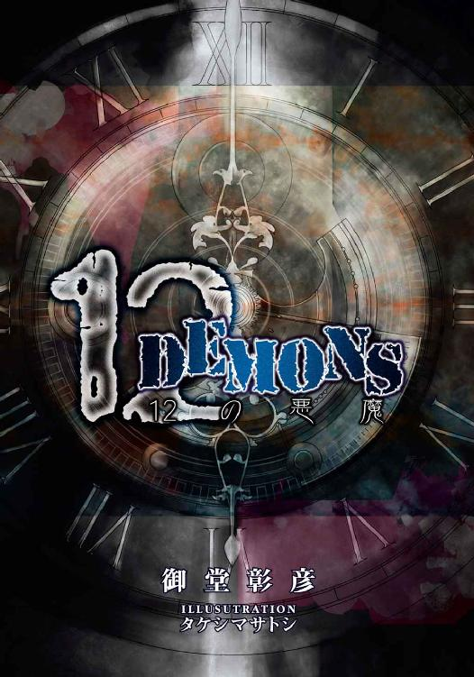
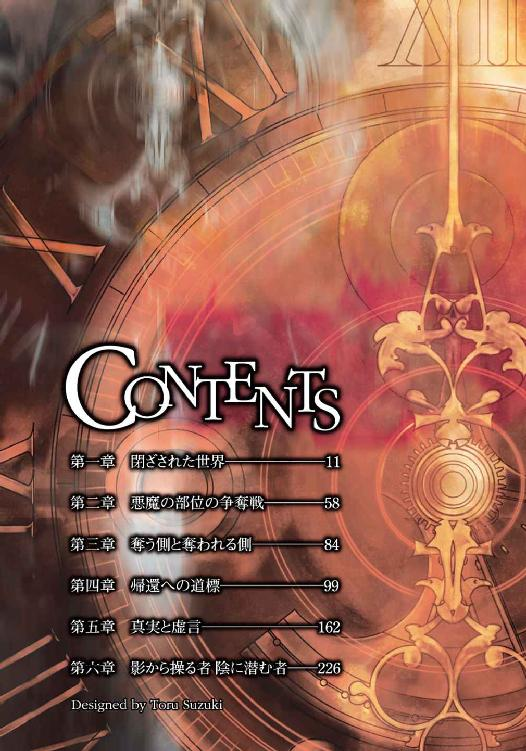
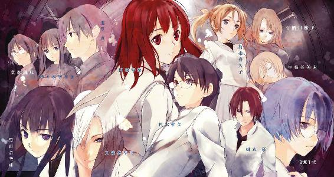
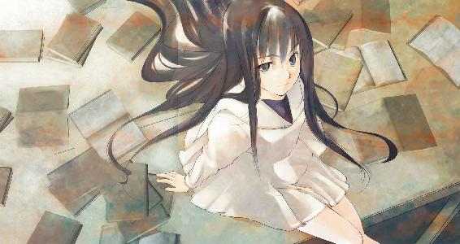
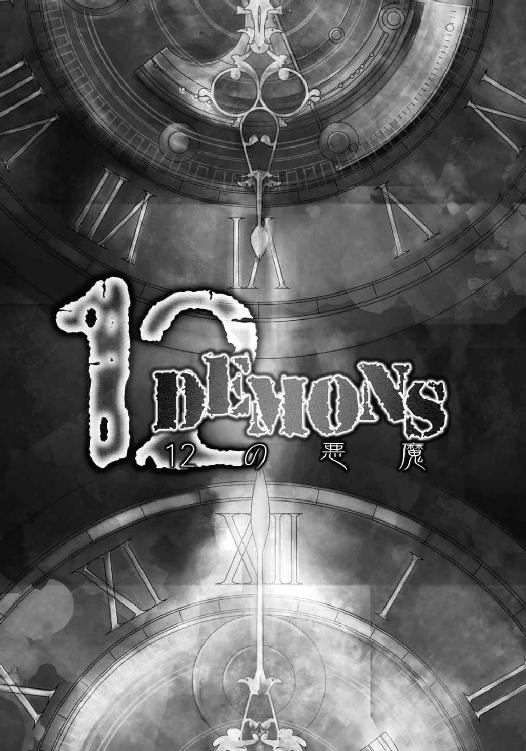
本書（電子版）に掲載されているコンテンツ（ソフトウェア／プログラム／データ／情報を含む）の著作権およびその他の権利は、すべて株式会社アスキー・メディアワークスおよび正当な権利を有する第三者に帰属しています。
法律の定めがある場合または権利者の明示的な承諾がある場合を除き、これらのコンテンツを複製・転載、改変・編集、翻案・翻訳、放送・出版、公衆送信（送信可能化を含む）・再配信、販売・頒布、貸与等に使用することはできません。
その日、朽木椎矢はいつにない気合を入れ、高校に向かっていた。
その日、円夜琴葉はいつもどおりの時間に、いつもどおりの道を通り、高校に向かっていた。
その日、賀来喜久子はいつもより少し遅い時間に起きて、慌てて学校に向かっていた。
その日、音無千代はいつにない大きな決意の元に、家を出た。
その日、甲斐谷芙未はいつもどおり、擁子の胸に顔を埋め、幸せそうに寝息を立てていた。
その日、有栖川擁子はいつもどおり、芙未を胸に抱き、愛しそうに彼女の髪を撫でていた。
その日、進堂真はいつもどおり、生徒会室から登校する生徒を見下ろしていた。
その日、紗々木智事加はいつもどおり、真の隣に静かに控えていた。
その日、京部創那はいつもどおり、真と智事加の二人を後ろから見守っていた。
その日、刀納依聖司はいつもより長い時間墓前に手を合わせ、学校に遅刻していった。
その日、掛衣豪はいつもどおり、繰り返される毎日に退屈しつつも、学校に向かっていた。
その日、黒百合空亜はいつもどおりの無邪気な微笑を湛え、屋上に立っていた。
その日、日常の始まりはいつもどおりだった。
その日、日常はいつもと違うものとなった。
その日、日常の終わりは──
第一章 閉ざされた世界
その日、聖誕学園は文化祭の当日だった。
文化祭は基本的に秋に行われることが多いが、聖誕学園は創立記念日である十二月十二日に行われるのが恒例だ。
今年の冬は比較的暖かく、過ごしやすい文化祭となった。時には雪の真っ只中に行われることもあり、そうなると客足も乏しくなる。今年は例年になく、客の入りがよく、文化祭は活気に溢れていた。
「琴葉、行くぞ」
と、教室から出てきたウエイター姿の朽木椎矢が後ろを振り返る。高校生としては平均的な体型の黒髪の少年だ。眼鏡越しに覗く眼は決して好意的とは呼べないが、それは視力の問題だと本人の弁。視力はそれほど悪くなく、日常生活に支障はないが、左右で視力が違うため、視力調整のために眼鏡を掛けている。白のワイシャツに黒のベストと黒スーツのズボンと、まるでギャルソンのような少し格好つけた服装だ。
「ちょっと待って」
と、ウエイトレス姿の円夜琴葉がぱたぱたと追いかけてきた。ウェイトレス姿というが、黒のワンピースに白いエプロン、頭には白いレースのカチューシャが載せてある。その格好は絵に描いたようなメイド姿だった。
染めたのではない自然な感じの柔らかな色合いの茶色い肩までの髪。ぱっちりとした瞳は小柄な体型もあいまって、小動物を彷彿とさせる。ぱたぱたと走る姿や少し気弱な性格もまさしく小動物のようだ。
二人の格好が特殊なのは、もちろん趣味ではなく、文化祭の衣装だった。
彼ら一年Ｃ組の出し物は喫茶店だった。
しかしただの喫茶店ではおもしろくないということで、色々な案が出た中で、男子はメイドという響きに、女子はメイド服の可愛さに傾き、最終的には満場一致でメイド喫茶に決まったのだった。ただし写真撮影は禁止。
客の入りも上々で、一年Ｃ組は午前の部だけで目標の売り上げを達成していた。
「休憩時間、あんまりないんだからな」
「うん」
十時から十四時まで働き、午後の残りが自由時間という割り振りだったのだが、店が混んでしまったので、じゃんけんに負けた二人は三十分延長させられてしまったのだ。
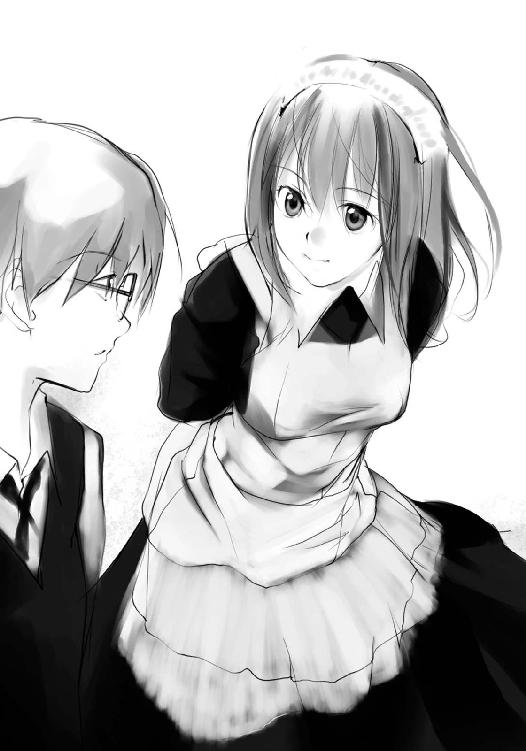
「早くしないと間に合わないぞ」
「うん」
二人がこれから向かおうとするのは演劇部の公演だった。
全国でも上位に入る演劇部の公演とあって、席の争奪戦はかなり激しいものとなっている。
一日に三回公演をしているのだが、次の公演が最後となっている。
すでに指定券は配布済みなので、二人は自由席狙いなのだが、争奪戦に生き残れるかは定かではない。
「おそーい、二人とも」
と、琴葉と同じメイド姿のツィンテールの少女が不満そうな声で呼びかけてくる。待ち合わせをしていたクラスメイトの賀来喜久子だった。
琴葉とは小学生のときからの友達で、おとなしい性格の琴葉を喜久子が引っ張るといった構図だ。躍動感がにじみ出ており、陸上部でもホープとして活躍している。少々雑で荒っぽいところがあるが、基本的には憎めない。当然のことながら、名前をもじって「かきくけこ」と呼んだ者は死刑。
「しょうがないだろ。こっちだって好きで残ってたわけじゃないんだし。着替えても来なかったんだから、むしろ褒めろ」
「いいじゃない、別に。アタシたちだってそのままだし」
喜久子は着替える余裕があったのに、メイド姿のままだった。女子はこの格好を気に入っている人が多く、比較的そのままの格好で他のクラスを回っているらしい。
とはいえ、文化祭なので、そんな姿も別に浮いているわけではない。
周りを見れば、和風喫茶をしているのか和服の生徒もいるし、部活で店を出しているのか野球のユニフォーム姿の生徒もいる。むしろこの学校の制服である学ランとセーラー服のほうが少ないくらいだ。ただしお化け屋敷のお化け着ぐるみのままで歩いているのは、幅を取りすぎて果てしなく迷惑だが。
「それよりどうなのよ、アタシたちのこの格好」
喜久子が琴葉の肩に手を回して並んで立ち、聞きそびれていた感想を椎矢に聞いてくる。
「オレ、コスプレの趣味ないから」
「うわ。さぶっ。なにその答え。リアクション取りづら」
「そういう格好して、そういう台詞吐くのはどうかと思うぞ」
「ご主人様に喜んでもらえないなんて、喜久子さびしい」
「何十年前のアイドルだ？」
「何だかなー。男なら一つや二つ、女の子にさせたいコスプレってあるもんでしょ？」
「だからそういう趣味はないって」
「何だかなー。せっかく気合入れたのに。ねー琴葉？」
「あたしはその、別に普通に、出し物の衣装としてだし」
メイド服と一言で言っても色々なものがあるらしく、衣装係でもある琴葉と喜久子が、ネットや本でああでもない、こうでもないといくつもの候補を挙げては、このレース加減が微妙なのよだとか、ここにふりふりがないのはメイド服失格だの、どれも一緒にしか見えない箇所にこだわっていたのを椎矢は知っている。
「スカートの丈が長いのかなー」
と、喜久子は琴葉のスカートをたくし上げた。
「きゃあっ！」
琴葉が慌ててスカートを押さえる。思わず琴葉の足のほうに移動してしまった自分の視線を椎矢は引き上げる。そこにはニタリといやらしく笑う喜久子の顔。
「むっつり」
「やかましい！ さっさと行くぞ！」
「あーごまかしたー」
「キクちゃん。あたしで遊ばないでよ」
「ごーめーん」
先に行ってしまおうとする椎矢を、琴葉と喜久子は慌てて追った。
「あ、ちょっと待って」
と、喜久子が携帯電話の着信に気づき、それを受ける。
「どうした？」
「ラッキー。演劇部の友達が指定席のチケット回してくれるって」
「ほんとか？」
「うん。ちょっと先に行ってもらってくるから、二人はどっか回ってから来ていいよ。指定席だからぎりぎりでいいから。どうせ規制かけてるだろうし」
開場は開演の三十分前となっていたから、席を取ってくれたのなら、三十分弱は時間を使えるということだ。
「じゃあ、頼んだ」
「お任せくださいませ、ご主人様。琴葉、ご主人様のお相手しっかりするのよ」
「いい加減キャラ固定しろよ」
椎矢のつっこみに、喜久子はにゃははと悪戯っぽく笑い、琴葉の肩をぽんぽんと二回叩いて、その場を去っていった。
「──ん？」
椎矢は振り返る。こちらを見ている女子生徒と一瞬目が合った気がしたが、すぐに向こうに行ってしまった。人混みで顔はよく見えなかったが、少し珍しい青い髪をしていた気がする。
「どうしたの？」
いきなり振り返った椎矢に、琴葉が小首をかしげる。
「いや、誰かに見られてたような......」
「え？ やっぱり目立つかな？」
琴葉が手を服の前で合わせて隠すようして、急に恥ずかしがる。
「ばか。そういう意味じゃないよ。自意識過剰」
「え？ え？ そんなことないよ」
琴葉が自分のことじゃないとわかって、ぱたぱたと慌てる。その動きを見て、椎矢は何となくリスを思い浮かべた。
「さて、と。どうすっかな？」
見られていたのは気のせいとしてさっさと頭の隅に追いやる。
「椎矢くんはどうするの？」
「とりあえずどっか回ってくるかなぁ。他のクラスのも見たいし。琴葉は？」
「えっと......」
「い、行きたいとこないなら、適当にぶらぶらするか」
「一緒に行っていいの？」
「当たり前だろ。これから一緒に芝居見るんだからさ」
「うん」
別行動なんて言われたらと心配してしまった琴葉は、椎矢の言葉にうれしそうに笑ってうなずいた。
一方の椎矢も何でもないことのように平静を装っていたが、今の言葉を口にするには少し勇気がいった。断られなくて内心安堵のため息をついたりしている。
椎矢と琴葉はこうして仲良くしているが、別に付き合っているとかそういうことではない。文化祭を一緒に回るとなると、妙な噂の一つも立てられる気もしたが、それは別に悪い気はしなかった。
とりあえず二人はすぐ近くで売っていたクレープ屋に寄る。琴葉は生クリームたっぷりのチョコバナナクレープ。椎矢は変わったところで、梅ジャムイチゴクレープをそれぞれ注文する。生徒が作ったので、皮が破れたりしているが、その辺は愛嬌である。
「すっぱ。まず」
「だからやめたほうがいいって言ったのに」
「けど後引く味だな」
「うそ......」
「ちょっと食べてみ」
「えっと......それって間接......えっと、その......やめとく」
別にまずそうだからというわけではない理由で断った琴葉だったが、椎矢は気にした様子もなかった。
二人は買ったクレープを食べ歩きながら、ぶらぶらと他のクラスを見て回って、公演の行われるホールに向かうことにした。
普段は勉強が行われる教室で、喫茶店などの飲食系、お化け屋敷などのアトラクション系などそれぞれのクラスが催し物をしている。
あちこちから笑い声が聞こえ、廊下を歩くだけでもその賑わいを楽しむことができる。
「あ、やべ」
破れた皮から溢れたクリームが垂れて、手についてしまった。
「はい、これ」
琴葉が椎矢にティッシュを渡す。
「あ、悪い」
「ご主人様のメイドですから」
琴葉が悪戯っぽい笑みを浮かべた。
「......あー、その、いいと思う」
「何が？」
「だからその服、似合って......。あー、何でもない」
椎矢はお茶を濁し、言いたかった言葉を中途半端にひっこめた。
琴葉は椎矢の言いたいことを察し、少し照れたように頬を赤くし、けれど嬉しそうに目を伏せた。
「もう一年が経つんだな？」
「え？」
「オレたちが出会ってから」
「うん」
椎矢と琴葉が初めて出会ってから、今日でちょうど一年になる。
一年前、聖誕学園を受験することを決めていた椎矢は、学校の雰囲気を知るために、中学の友達と文化祭に来ていた。そのとき、同じ理由で文化祭に来ていた琴葉に椎矢は会ったのだ。
そのときの琴葉は迷子の子供を連れていた。
母親のことを呼びながら大声で泣く子供。迷惑そうに眉をひそめる周囲の視線。そんなものに囲まれ、同じく迷子の子供のように泣きそうになりながらも、琴葉はがんばって母親を捜していた。
そんな琴葉を見かねた椎矢が助けたのが、二人の初めての出会いだった。
あのときから琴葉の印象は変わらない。
おとなしくて、不器用で、自己主張もできない、か弱い少女。でも優しくて、自分にできることに対して一生懸命。そんな姿が守ってやりたいと思わせる。
「あのときはホントにありがとう」
今でも昔話に花が咲くと、琴葉はそのときのことを思い出して礼を言う。
「別に」
椎矢は照れ隠しのためか、そっぽを向いてそう答える。それもいつものこと。
「ねぇ、あのとき椎矢くんが言ってくれた言葉覚えてる？」
「え？ オレの言った言葉？ ......あ、ああ、もちろん」
「......覚えてないでしょ？」
「うっ」
疑わしげな目で見る琴葉に、椎矢は目を逸らし、ごまかすようにクレープを頬ばって一気に平らげた。
オレ、何か言ったっけ？
椎矢は手についたクリームをなめながら、必死に思い出そうとする。
と、思考を中断させるように、何かが割れるような大きな音がした。
椎矢と琴葉だけでなく、周囲の生徒や一般客たちも揃って立ち止まり、音のしたほうを見る。
見れば、他校の生徒が看板を下敷きにし、聖誕学園の生徒と険悪なムードで睨み合っていた。百八十を超える身長とそれに見合う大きな体格で他校の生徒を威圧的に見下ろしているのは、三年生の掛衣豪という生徒だった。椎矢たちも何度か見たことがあるが、学校でもよく揉め事や暴力事件を起こして、何度か停学になっている。
「ぶつかってきたのはそっちだろうが」
「他校の奴が偉そうに真ん中歩いてるんじゃねぇよ」
これだけ人が多ければぶつかることもあるだろうが、そんな程度のことが揉め事の原因らしい。豪のことを知っている聖誕学園の生徒は、注意をしようなどとは考えない。だが彼のことを知らない他校の生徒は黙っておらず、豪に突っかかっていく。
今にも殴り合いが始まろうかというとき──
「揉め事を起こしているのはここか？」
背後から声がした。振り返ると、そこには生徒会の腕章をつけた制服姿の二人の男女が立っていた。
男のほうは道を開けた野次馬の間を通って、何の迷いもなく豪の前に立つ。黒髪黒目、身につける学生服などを含めた外見やその立ち姿、歩み、どれを取っても乱れがない。人を寄せ付けない威圧感を持ちながら、人の目を引き付けるオーラのようなものがある。
その半歩後ろに控える女は静かに、しかし切りつけんばかりの鋭い眼で豪を睨みつけている。艶やかな黒髪を結い上げ、前髪は眉の辺りで切り揃えている。ぴんと張った背筋は一本芯が通った印象を与え、鋭く尖った雰囲気を伴っている。
この学校の生徒なら誰でも知っている生徒会長の進堂真、副会長の紗々木智事加だった。
「何が原因か知らないが、今日は一般客もいる。我が校の恥になるような真似はしてほしくないな、掛衣」
豪は他校の生徒から真のほうに向き直り、睨みを利かせる。が、真は臆することなく正面から受け止める。体格では頭一つ分高い掛衣が見下ろすような形だが、なぜか真が見下ろしているような錯覚を覚える。
「これ以上騒ぎを大きくするのであれば、生徒会の権限を以て文化祭から退去していただきますが？」
後ろに控えていた智事加が言うと、豪は舌打ちして、その場を去っていった。生徒会に逆らえば、停学や退学などの処分が待っているので当然だ。
「怪我はないかい？ これに懲りずに文化祭を楽しんでいってね」
と、いつの間に現れたのか、別の生徒会メンバーである京部創那が他校の生徒の肩に手を回し、気持ちを落ち着かせていた。
眼鏡の奥の細まった目と緩やかな弧を描いた口許。大人びた落ち着きと柔らかいと表現できるその笑みは、他校の生徒のみならず、周囲の生徒、そして張り付いた空気も緩めるような効果を与えた。
他校の生徒は周囲の視線を感じ、少し居心地悪そうに去っていった。
創那は波打つ少し長めの赤茶色の髪を掻き上げ、真にもうだいじょうぶだと目で合図を送る。
「皆様、お騒がせ致しました。引き続き文化祭をお楽しみください」
一時は騒然としていた場をあっさりと収束させた真は周囲にそう声を掛け、智事加と創郡を引き連れ、その場を去っていった。
別に拍手が起こるようなことはなかったが、拍手をしたいくらいの気分になった椎矢たちだった。
「怖かったね」
「どこにでもいるんだよな。ああいうのは」
揉め事を喜ぶタイプではない二人は、喧嘩にならずにすんだことに安堵していた。
「喜久子がいたら煽ったかもな」
「格闘技好きだもんね」
そのフォローは違うんじゃないかと思いつつも、椎矢はいつものことなので特に何も言わなかった。
二人はもう少しだけ他の教室を回り、演劇部の公演が行われるホールに向かった。
「こっちこっち」
喜久子がホールに入ってきた椎矢と琴葉に向かって手を振った。席は前列から三番目の真ん中。かなりいい席を用意してもらったようだ。
この学校は演劇や吹奏楽など芸術方面にも力を入れており、どちらも全国で上位に位置している。
二階まで吹き抜けの広大なホールで、広い舞台と、その舞台を囲うように座席が半円形に並んでいる。周囲には十分な音響設備。演劇部の全国大会に使われたり、有名な劇団の公演にも利用される本格的なホールで、学園でもっとも金の掛けられている場所である。
「ゆっくりしてきた？」
「ゆっくりっていうか、揉め事に巻き込まれそうになってさ」
椎矢が先程の乱闘寸前の騒ぎのことを話した。
「そうだったんだ？ ああ、そこにいたかったなー。で、決着は打撃？ 寝技？」
違うと思っていた琴葉の指摘は正解だったようだ。
「決着っていうか、そうなる前に生徒会の人が来て、終わらせてくれたから」
「そうなんだー。あ、生徒会の創那先輩っていい男よね？ そう思わない？」
思わないと言うのは失礼だし、かといって、変に誤解されたくはない。琴葉は曖昧に笑ってごまかすことにする。こっそり聞き耳を立てていた椎矢は聞いていないふりをした。
「でも、それじゃあ、あんまり二人の時間も楽しめなかったわけだ」
喜久子の何気ない一言に琴葉がびっくりしたように、喜久子の袖を引っ張った。
「え？ あ、ああ。うん。とにかく間に合ってよかった」
喜久子は曖昧に笑って手を振り、琴葉は慌てて入場の際に渡されたチラシに目を落とした。なにやら暗黙の了解があったようだが、口を挟むわけにもいかず、椎矢は琴葉に習って、チラシを広げた。
チラシにはキャスト表とあらすじが書いてある。
あらすじに関しては特に見ない。というより知っている。
この学園祭の演目というのは毎年同じものが繰り返され、一年生である椎矢たちの耳にも話は入ってきているからだ。
演目はこの土地に伝わる一種の伝承のようなもので、端的に言うと大昔、この土地に災いを振りまいていた悪魔を封じた巫女と十一人の従者の話だ。その巫女がこの学校の創始者の先祖ということで、入学のパンフレットにもその辺りのことが書かれていた。
もちろん生徒はそんなものはただの逸話、作り話としてしか信じていない。
それにも関わらずこの公演がこれだけ注目され、人を集めるのには理由があった。
椎矢はキャスト表に目を通す。
そこには椎矢も知っている名前が二つあった。
一つは悪魔役の甲斐谷芙未。
一つは巫女役の有栖川擁子。
ちなみに女子生徒の目当ては芙未。男子生徒の目当ては擁子だ。
芙未は典型的なカッコイイ女の先輩というやつで、背は百七十を越え、顔はショートの髪とあいまって中性的な雰囲気を持ち、さらにスポーツ万能。女子生徒内ではファンクラブもできているほどだ。不良に絡まれていた女子生徒を助けたとか、車に轢かれそうになった子供を身を挺して守ったとか、男性役も女性がやる女性だけの某有名歌劇団からのオファーもあるとかどこまで本当かわからない話まである。
そして擁子は典型的なお嬢様で、清楚で可憐な美少女。家柄もよく、男子生徒にとっての高嶺の花。一日五人の男子生徒に告白されては、全てを断っているとのこと。だがそれが鼻につかないくらいに、男女平等に優しいときている。そして何より男子の人気を不動にしているのが、そのふくよかな胸であったりする。男など所詮そんなものだ。
「あー、早く芙未先輩出てこないかなー」
喜久子が待ちきれない様子で舞台を見上げている。喜久子は芙未のファンクラグ会員だ。
「お前もやっぱ芙未先輩目当て？」
「ううん。あたしはキクちゃんの付き添い。もちろんお芝居も観たかったんだけど」
「珍しいねー、キミ」
と、座席の後ろから声が掛けられた。
椎矢と琴葉が振り向くと、そこには少し軽薄そうな男子生徒が身を乗り出していた。アッシュ系の少し長めの髪が目を引き、ピアスや指輪などアクセサリーが映えている。校章を見ると三年生であることがわかる。
「珍しい、ですか？」
いきなり見知らぬ先輩に話しかけられ、椎矢は面倒だと思いながらも、一応返事をする。
「そうだねー。一般の人はともかく、この学校の生徒で芝居の中身に興味があるってのは一割にも満たないだろうねぇ」
「そういうものですか？」
「そうだよ。残りの九割は、芙未ちゃんと擁子ちゃんのファンだろうねぇ」
「先輩は違うんですか？」
「ん？ 俺、一応演劇部だからさ」
演劇部の関係者が開演直前に客席にいていいものなのだろうか。椎矢のそんな疑問を感じ取ったのか、その人は手をひらひらと動かした。
「俺は脚本担当だから。本番はもう用なし」
「脚本？」
椎矢はチラシに目をやった。脚本には刀納依聖司という名前が載っていた。どこかで聞いたことのある名前のような気がした。
「主題は同じでも話とか、演出とかは変えていいから一応いるんだよ。使い回しじゃ、やるほうはつまらないでしょ？ 観るほうは気にしないだろうけど」
観るほうは、使い回しでも演じる人が芙未と擁子ならいいでしょ？ という揶揄にも聞こえる。
「あ、そろそろ始まるよ。楽しんでってね」
聖司が後ろに引っ込むと、それが合図だったかのように照明が絞られていく。ホールが暗くなっていくに従い、それまで喋っていた観客たちが静まり返っていく。
照明が落ち、潜めていた声もなくなり、完全な静寂と暗闇が生まれたと同時に、それを引き裂く雷鳴のような音と光が駆け抜けた。
と、スポットライトが舞台の上のほうに当てられる。
何もない空間にスポットライトだけが当てられている。
と、天井ほどの高さから何かが落ちてきた。人だった。
観客席から小さな悲鳴が上がる。
が、その人は空中で急に止まる。その役者はシルクハットにタキシードとマント。そして仮面を顔の前にかざして優雅に空中でポーズを取っていた。まるで飛んでいるかのようだが、よく見ればワイヤーで吊るされているのがわかる。
だが観客がそれに気づく前に、その役者はシルクハットを取り、恭しく一礼して、顔の前の仮面を投げ捨てた。
と、そこで黄色い歓声が客席から上がる。
彼女が女子生徒人気ナンバーワンの芙未だった。
芙未は空中で小さく笑むと、胸から赤い一輪のバラを抜き、軽く口付けして、客席に投げ入れた。
群がる女子生徒たち。もちろん作り物のバラなので、棘で怪我をすることはないが、争奪戦で怪我をしそうだった。関係者が急いで場を落ち着かせている。
少々やりすぎな感もあったが、芙未ファンの観客は大歓声だ。
と、スポットライトが今度は天井から舞台上に向けられる。
いつの間にかそこに別の役者がいた。清楚な巫女服に身を包んでいる少女は、まるで生贄として捧げられるような雰囲気で、柱に縛り付けられ、意識を失っている。
彼女が男子生徒人気ナンバーワンの有栖川擁子だった。
と、それまで空中で待っていた悪魔役の芙未が舞台に降り立った。
芙未はそのまま擁子の元に行くと、指で彼女のあごを軽く持ち上げ、唇を近づけていった。
観客から歓喜と興奮の黄色い悲鳴が起こる。
キスするかしないかの寸前のところで、ライトが消され、舞台が暗転した。
そして一時間半後、芝居が終了してカーテンコールを迎えると、芙未に向かって黄色い声と共に花が投げ入れられた。
演劇部員たちが花を集め、芙未は手近ないくつかを拾って観客に手を振って応えていた。隣の喜久子も「芙未せんぱーい！」と奇声を張り上げ、手を振っている。
芝居は元となった伝承とはだいぶ話を変えていた。
伝承は単純にこの学校の創始者の先祖である巫女を筆頭とする十二人の神仏関係者たちが、土地に災いをもたらした悪魔を封じるという話なのだが、この舞台は悪魔がその巫女と恋に落ちる恋愛の要素も含めた話となっていた。
結局はその巫女たちの手によって悪魔は殺され、二人の報われない恋は非業の終わりを迎えるという話になっているのだが、巫女が悪魔を裏切るシーンなどはよくできていた。
悪魔役の芙未と巫女役の擁子の人気を考え、こういった話にしたのだろうか。確かに二人が見栄えする内容だった。
ただオリジナリティに溢れていたが、恋愛色が濃かったため、椎矢の好みではなかった。アクションがあればいいと思うのだが、学生演劇では無理な話だ。
と、鼻をすするような音が聞こえ、椎矢が横を見てみると、琴葉がハンカチで目元を押さえていた。
「どうした？」
「いいお話だったから」
琴葉が少し照れくさそうに笑いながら、涙を拭った。琴葉はこういう話に弱かったのを思い出す。他の生徒はストーリーに対する感動とは無縁のようで、芙未と擁子のキャストに対する拍手が多い。
「どうだった？」
と、後ろからまた顔を出してきたのは脚本担当の刀納依聖司だった。
「すごくいいお話でした」
琴葉が素直に感想を言うと、聖司は「嬉しいねー」と小さく笑みを浮かべた。
「でも悲恋だからいい話ではないんだけどね」
一瞬だけ、聖司の顔が冷めたように色をなくした。だが、すぐに聖司の表情は軽薄そうな笑みを取り戻した。
「悲恋話を面白いと思うのは、二種類あるらしいよ。一つは自分の経験した悲恋を照らし合わせるパターン。自分はまだマシと思ったり、自分のほうがひどい悲恋を経験した、とかね。もう一つは、自分の今の幸せな恋と照らし合わせるパターン。悲恋と比べることで、自分は何て幸せな恋愛をしているんだろうってね」
「そうなんですか？」
「なんてね、今、考えただけだよ。鵜呑みにしないで欲しいな。よくいるだろう？ こういうふうに人間には二つあるとか言って、何かと二種類に分類したがる奴。あれって嫌いでね。うまいこと言ったって思ってるかもしれないけど、人間はそう簡単に二分化なんてできないって」
何が言いたいのかわからず、椎矢と琴葉は戸惑う。
「ああ、ごめんごめん。今後のために感想を聞きたかっただけなんだ。他意はないよ」
「あ、あの、なんていうが、思いが込められているっていうが、それが伝わってきて感動しました。その、うまく言えませんけど......」
「思いが込められてる、ね。そっか。ありがと。それじゃ、俺も向こうに戻るよ」
聖司は手を振りながら客席を離れ、楽屋のほうへと去っていった。
少し戸惑いながら、椎矢と琴葉は顔を見合わせた。
「ぷはー。何か胸がいっぱいでご飯食べられなさそう。ああ、芙未先輩〜」
喜久子は目をハートマークにして、未だに余韻に浸っていた。
椎矢と琴葉は顔を見合わせ、笑い合う。
と、ホールに鐘の音が鳴り響く。
今日は文化祭のため、毎日授業時間に合わせた鐘は、一時間置きの時刻を知らせる本鈴と、午前と午後の六時と十二時、それぞれ五分前の予鈴に鳴るように変更されている。
今の時刻は午後五時。それは文化祭の終了を告げる鐘でもあった。
この後、片付けを挟み、午後七時から後夜祭に突入する。
「じゃあ、戻るか？」
椎矢は琴葉と喜久子に声を掛け、ホールを後にした。
ゴーン、ゴーン、ゴーン、ゴーン、ゴーン......
学園内に響き渡る文化祭の終了を告げる鐘の音。
校舎の東棟の屋上にもその鐘の音は響き渡っていた。
傾いていく赤い陽の光を人は美しいと感じる。
傾いていく赤い陽の光を人は禍々しいと感じる。
相反する印象を受けるのはその人間が内包するもの故か。
屋上のフェンスに腰を掛け、冷たい風を浴びながら赤い光を遠くに見つめ、少女は無邪気に微笑んだ。
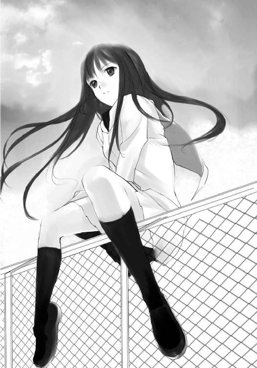
喜久子は手に大きな暗幕を抱えて、廊下を急いで走っていた。
教室の壁を隠し、どこか洋館めいた雰囲気を出すために文化祭実行委員会から借りたのだが、後夜祭で使うため、終了後すぐに戻すよう指示されていたのだ。
喜久子は暗幕を回収して、体育館に向かっていた。
が、喜久子は呼び止められ、立ち止まる。
喜久子を呼び止めたのは一人の女子生徒だった。校章から二年生とわかる。珍しい青い髪をしていた。文化祭のために染めたのだろうか。
「その暗幕を持って、倉庫のほうに来てくれない？」
「え？ あの、体育館に持ってくるように言われたんですけど」
「その予定だったけど、使わなくなったから、倉庫のほうに戻すように伝えてくれって。教室に行ったらもういなかったから、捜したわ」
「そうだったんですか」
「じゃあ、行きましょう」
喜久子はうなずいて、その先輩に従って歩いていく。念のため、喜久子は倉庫のほうに返しに行くからもう少し時間が掛かると、琴葉にメールをしておいた。
倉庫の前にやってきた喜久子たちは鍵を開けて中に入る。倉庫の中には掃除用具や使用されていない机や椅子、ホワイトボードなどが所狭しと押し込められている。
「先輩、暗幕はどこに置けばいいですか？」
「奥に置いてくれる？」
喜久子は「はい」と返事して、暗幕を抱えて奥に入っていく。足の踏み場もないとはまさにこのことだ。何だか籠った嫌な匂いもする。こんなところに置いてあった暗幕を飲食店の壁につけていたのは果たして正解だったのかと、今更ながらに思う。
喜久子は暗幕を奥のほうに置き、戻ってくる。
「っと」
バランスを崩して、隣に立ててあった体育用のマットにもたれかかる。体育用のマットはせめて体育館の倉庫に入れておくべきだと思う。積んである机と椅子も今にも倒れそうだ。大掃除のときにでも、整理されることだろう。
「先輩、置いておきました」
喜久子が声を掛けるが、返事はなかった。先に外に出てしまったのだろうか。
「先輩？」
そのとき、積まれていた椅子と机がぐらりと揺れるのが見えた。
声を出す暇もなかった。
無数の机と椅子が雨霰となって、喜久子に降り注いだ。
「ちょっとこれ運ぶの手伝って！」
「そこ邪魔だから、端寄れよ！ 通れねぇよ！」
「ねー、このごみって燃えるほう？ 燃えないほう？」
「バカ！ 借りてきた椅子とうちのクラスの混ぜるなよ。シール貼ってるだろ」
「そこ、手伝ってよ！ 早くしないと後夜祭に間に合わないでしょ！」
文化祭も終わり、一年Ｃ組の教室では余韻を残しつつ、後片付けが始まっていた。
テーブル代わりの机を片付ける生徒、装飾品の数々をゴミ袋に詰めていく生徒、残った食材をこっそりつまむ生徒、教室の隅で談笑する生徒、それを注意して急かす生徒。
どこにでもある文化祭の片付けの風景だ。
この片付けも文化祭の楽しみの一つで、それが終わり、後夜祭が終われば、どこかぽっかりとした寂しさに包まれることだろう。
だがそんな先のことは気に留めず、生徒たちは忙しなく片付けを進めていた。
椎矢も他のクラスから借りている机を廊下に出しては、積んでいく。
「ねぇ、椎矢くん」
と、制服姿に戻っている琴葉が、次の机を出そうと教室に戻ろうとした椎矢を呼び止めた。
「どうした？」
「キクちゃんがいないんだけど」
「喜久子？ 確か暗幕返しいってるだろ？」
「そうなんだけど、一度メールが入ったきり、もう三十分以上も経ってるの」
「何だよ、どっかでさぼってるのか？」
「そんなわけないでしょ」
琴葉が不満そうに言う。喜久子のことだと、琴葉は少し人が変わる。
「冗談だよ。何かてこずってるんだろ？ 鍵がないとか、何か手伝わされてるとか」
「すぐ戻ってくるって言ってたんだけど。携帯にも出ないし」
「椎矢。早くしろよ」
割り込むように、教室からクラスメイトの急かす声がした。
「悪い。今行く」
椎矢はクラスメイトに謝っておいて、琴葉に向き直る。
「そんな気にすることないだろ。そんなことより、早くゴミまとめろよ」
「だって、何か嫌な予感がするの」
「嫌な予感？」
「うん。うまく説明つかないんだけど......」
琴葉が不安そうにうつむく。
椎矢は教室から呼ぶ生徒のことを気にしつつ、嘆息する。何を心配しているのか知らないが、琴葉のこんな表情に椎矢は弱い。
「しょうがないな。わかったよ。とにかく先に片付け終わらせて、それでもまだ戻ってこなかったら、一緒に探しにいこう。それでいいな？」
「うん」
椎矢は琴葉がうなずくのを見てから、教室に戻っていった。
時計の針が午後六時を指す。
ゴーン、ゴーン、ゴーン、ゴーン、ゴーン、ゴーン......。
鐘の音が学園に鳴り響く。
唐突に、前触れもなく、根拠もなく、眼に焼け付くような痛みを感じた。
「っ！」
椎矢は顔を押さえて、思わず呻く。
そのとき、突き上げるような衝撃が「彼ら」を襲った。
「地震！」
椎矢は倒れそうになるのを壁に手を着いて何とか耐える。揺れは一瞬だったが、かなり大きな地震だった。直下型というやつだろうか。震度四や五ではきかない気がした。
椎矢は思わず積んでいた机を見やる。
だが机はきれいに整列して積まれたままで、崩れたりはしていなかった。横揺れでなかったからだろうか。とりあえず椎矢は胸をなでおろす。積んでいる机は縦に三、四段。これが崩れたら、近くにいる生徒は下敷きになって大怪我するところだった。
教室に向き直ると、生徒たちは地震を気にした様子もなく、作業に戻っていた。
「今の地震、すごかったな？」
椎矢はさっき自分を呼んでいたクラスメイト篠宮の元に行き、そう声を掛けた。だが篠宮は返事をしてくれなかった。
「なあ。地震......？」
篠宮は話をするどころか、椎矢を見ようともしない。
「悪かったよ、話してて。さっさと片付けるから、怒るなよ」
琴葉と話をしていたことを怒っているのかと思い、椎矢は謝ってみたが、篠宮はやはり答えようとはしなかった。
「なあ、どうしたんだよ？」
椎矢は篠宮の肩を叩こうとしたが、手は肩に触れることなく素通りした。避けられてしまったらしい。さすがにカチンとくる。さらに続く次の言葉に、さすがの椎矢も黙ってはいられなかった。
「なあ、椎矢の奴どこに行った？」
篠宮が自分を見ないで近くの生徒に聞いた。
椎矢はかっとなって、篠宮の目の前に立つ。
「いつからそんなに目が悪くなったんだよ？ それとも目だけじゃなくて耳も悪くなったのか。声も聞こえないってか？ ちょっと話してたくらいで、何でそこまで言われなきゃならないんだよ！」
椎矢にしては珍しく口調を荒げた。だが篠宮はそれでも椎矢を無視した。
「おい......」
椎矢は篠宮を自分のほうに向かせようと、手を伸ばした。篠宮が自分のほうに向かって歩き出したのは、ほぼ同時だった。
ぶつかる──
椎矢はすんでのところで立ち止まったが、篠宮は構わず前に出てきて、二人はぶつか──らなかった。
「え？」
椎矢はわけがわからず、自分を素通りしていった篠宮を振り返る。
そう。素通りした。
比喩ではない。文字通り、素通りしたのだ。
「んな、バカな......」
自分で自分の考えに笑ってしまい、椎矢は篠宮の後を追った。
「おーい。椎矢！ あれ？ さっきまでいたのにな。なあ、椎矢どこ行ったか知ってるか？」
篠宮は、椎矢のいるほうを見ながら、だが椎矢が見えないかのように、教室の中の生徒に声を掛けた。
「あれ？ 机運んでたんじゃないの？」
「そうなんだけど、どっか行っちゃったんだよ」
「さぼってんだろ？」
「朽木君はそんなことする人じゃありませんー」
「何だよ。あいつの肩持つじゃん」
「ばっかじゃないの？ すぐそういう方向持ってくんだから」
クラスで小さな笑いが起き、クラスメイトたちは大して気に留めた様子もなく、作業を再開した。
椎矢がそこにいることに気づかずに。
「......おい、どういうことだよ。おい！ オレはここにいるだろうが！」
椎矢は大声で叫んだ。だが、クラスメイトたちはまったく反応しなかった。
「おい！」
椎矢は篠宮を捕まえようとする。だが、手は空振りした。自分の伸ばした手の軌道上に確かにいるのに、まるで立体映像に触れようとしたかのように、椎矢の手はその体を素通りした。
「何だよ。どうなってんだよ！」
そうしている間にも、他の生徒も自分を素通りしていく。
「なあ、オレが見えないのかよ！ 本当に見え......」
叫びながら、椎矢はさらに背中に冷たい汗を流した。
それまで触れることも話すこともできなかったが、目には見えていたクラスメイトたちの姿が、不意に薄くなった気がしたのだ。いや、気のせいではない。クラスメイトたちの体の向こうが透けて見える。
まるで消えていくかのように。
「ちょ、ちょっと待てよ！ おい！」
置いていかれる。親に捨てられた子供のような不安感に囚われ、椎矢は手近なクラスメイトにしがみつこうとした。だが触れることができないのは、さっきと何も変わらない。さっきと変わっていくのは、遠ざかり、消えていくクラスメイトの姿。そして、聞こえなくなったみんなの声。
「おい！ 行くなよ！ おい！ お......」
だが椎矢の叫びも空しく、クラスメイトの姿は跡形もなく消えていった。
しん、と静まり返る教室。
机や椅子、教室そのものはそこに残っていた。さっきまで文化祭が行われていて、片付けの真っ最中だったことを物語るかのように、あちこちに物が散らかっている。
だが決定的に足りないのは、生徒の姿。
教室には自分以外もう誰もいなくなっていた。
椎矢は途切れそうになった意識を無理矢理引き戻し、教室を飛び出して隣のクラスに飛びこんだ。
「おい！ うちのクラスの奴らが急に......」
椎矢は言葉を失った。
隣のクラスにも生徒の姿はなかった。
隣のクラスは焼きそばやお好み焼き、水風船掬いや射的など縁日を模した出店をしていた。その跡を物語るように水槽や射的用のおもちゃの銃などが転がっている。だが肝心の生徒の姿はなかった。
「くそっ！」
椎矢は舌打ちして、さらに隣のクラスに飛び込んだ。その隣、そのまた隣。二階のクラスにも行ってみた。だがそれらの教室には誰一人生徒の姿がなかった。
「どうなってるんだよ......」
椎矢は上履きのまま、校舎を飛び出した。
外に出ると、もう陽は落ちていて辺りは薄暗かった。十二月の冷気が吹き付けてくるが、その冷たさも椎矢を冷静にはしてくれなかった。
敷地内を駆け抜け、校門へと向かう。
人がいなくなったのは学校だけなのか、それを確かめたくて、椎矢は外へと向かった。
景色がぼやけているような気がした。泣いてなどいない。それでも視界は歪み、景色は歪み、頭の中が歪んだような気がした。
そして校門に辿り着き、愕然とする。
校門の向こうがなかったのだ。
校門の向こうは黒一色の世界だった。
本来なら学校の前には大きな通りがあり、少し行けば歩道橋が渡されていて、向かい側の通りには郵便局とか銀行とかコンビニとかが並んでいる。
それなのに、目の前にあるはずの景色が消えていた。
陽が落ちた夜の暗さなどではない。世界に真っ黒なペンキをこぼして塗り替えたかのように、目の前の景色が暗闇に塗りつぶされていた。
まるでこの学校の敷地内だけが、世界から切り取られたかのように思えた。
椎矢は恐る恐る校門の外に左足だけを出す。体重は学校の敷地内に残した右足に残してだ。だが左足が地面を踏むことはなかった。
そこから先に踏み出す勇気はなかった。
何がどうなっているのか、考えることもできなかった。だが誰かに会いたかった。誰かの声を聞きたかった。声だけでも──
「携帯！」
椎矢は携帯電話をポケットから取り出した。だが、
「圏外......」
いつもなら絶対に三本立っている携帯電話のアンテナが、今は圏外だった。何度振ってみても、電話の向きを変えようと、圏外は圏外のままだった。
奇跡を信じて、圏外のまま電話をしたが、表示通り、つながることはなかった。
取り残された、と自然に思えた。
一度そう思ってしまうと、あれほど乱れていた心は急速に冷えていった。残ったのは凍りついた心、あるいはぽっかり空いた心の穴。
何か言おうと思った。だが声が出なかった。喋り方を忘れてしまったような、声に出す余力もないような味わったことのない妙な感覚。
代わりに考えてみた。
何が起きたのか。時間が止まってしまい、みんなは先の時間に行ってしまい、自分はそこに取り残されてしまったのだろうか。
ああ、考えることはできるな。答えは見つからないけど。
どこをどう歩いたか、記憶は定かではないが、気がつくと、椎矢は校舎の前まで戻っていた。足は自然と自分の教室に向かっていた。
そのとき、視界の隅を人影のようなものがかすめた。
誰かいる──！
椎矢はその影を追って、校舎の中に入る。
「誰かいるのか？ 誰か......」
と、背中に何かの気配を感じた。
振り向くより先に、カサッと音がした。
慌てて振り返るが、そこには誰もいなかった。
カサカサ。
移動する音が聞こえた。だが人が移動して、そんな音がするだろうか。
気配は再び背後に移った。誰かがいる。あれほど求めていた誰かなのに、なぜか背中が薄ら寒かった。冷たい汗が自分の背中を伝っているのがわかる。
「おい、何とか言えよ？」
返事はない。振り返ることもできない。体が凍りついたかのように動けない。
何かがいる。誰かではない。何かだ。得体の知れない何かがいる。そんな気配を感じた。
「何だ......？」
と、椎矢は廊下の窓を見た。
「────！」
ガラス窓に「それ」は映っていた。
それは黒い小さな塊だった。小さなと言っても、赤ん坊くらいの大きさだ。形もそんな感じに近い。それが壁に張り付いていた。そしてじっと自分を見ている。目のない黒い顔のようなものがじっと自分を見ている。
そこに何がいるかわからなかったときは振り向けなかったのに、何かがいるとわかれば、振り向かずにはいられなかった。
「っ！」
いつの間にか、黒い何かは壁全体に、そして天井に、床に、びっしりと張り付いていた。
物語に出てくる「餓鬼」のようにも見える黒くて小さな何かは、何をするでもなくじっと自分を見つめていた。そしてその黒い何かは、振り向いた椎矢に向かって顔のような部分に三日月のような裂け目を一斉に作った。
晒った、ように見えた。
「─────────！」
景色が消えた。
外にあったような暗闇の世界。その中に、暗闇より色濃い黒い何かが、音もなく滲み出るように浮かび上がっている。その黒い何かは、やはり何をするでもなくじっと自分を見つめていた。
「......お前は、何なんだ？」
かすれた声で、椎矢はそれに問いかけた。
返事はない。
だがそれは言葉を待っているかのように、そこに佇んでいる。
椎矢は藁にもすがる思いで、呼びかける。それに呼びかけるなんて、頭がどうかしているのかもしれない。だがどうかしているというなら、すでに今がそうだ。今さら一つや二つおかしなことをしても、不思議はない。
「教えてくれ、ここは一体どこなんだ？ 何が起きたんだ？ オレはどうなるんだ？」
返事はない。
だがそれは言葉を待っているかのように、佇んでいる。
「何でもいいから、知ってることを教えてくれ！」
なぜかこの黒いものが何かを知っているような気がしてならなかった。
と、それの頭の部──人間で言えば口に相当する部分がぱかっと横に割れる。
「交換シヨウ」
と、言ったように聞こえた。実際は声など発してはいないが、そう脳に直接響いたような気がした。
「交換？ 何を交換するんだ？」
「チカラヲアゲルヨ。ダカラ＊＊＊ヲチョウダイ」
何をちょうだいと言ったか、聞こえなかった。いや、そこだけ理解できなかったというほうが正しいかも知れない。ノイズが走ったかのような音にしか聞こえなかった。
だがそれ以外は聞こえた。
チカラと言った。確かにそう聞こえた。では、何のチカラだというのか。まさか、元の世界に戻る「チカラ」だろうか。そうだ。そうに違いない。
正常な状況判断はもうできていなかった。
藁にもすがる思いは、自分にとって都合のよい思いにしかならなかった。
「わかった」
椎矢が承諾する。詳しく聞かずに承諾する。
それが晒う。
いつの間にか、黒い何かのうちの一体が何かを持っていた。淡い光を放つものだった。よくわからない何かを持つその一体に、他の黒い何かが群がり始めた。
共食いでもしているように見え、椎矢は気分が悪くなる。
と、そのとき眼に灼けるような痛みが走った。
悪魔ノ眼ハ、悪魔ノ部位ヲ見抜クコトガデキルヨ──
「！」
我に返ると、そこはさっきと変わらない、何もない廊下だった。黒い何かはもうそこにはいない。
今見たものは、今聞いたことは──
「何だったんだ......」
椎矢は深いため息をついた。ひどい脱力感を覚えた。わけのわからないことの連続に精神も体も疲労しているに違いない。
と、椎矢の耳に声が聞こえた。
──誰か！
声は切実な思いを乗せて、響いていた。その助けを求める声が誰のものなのか、こんな状況でもすぐにわかった。凍りついた心が一瞬にして溶け、声が口から吐き出される。
「琴葉！」
それは幻聴だったかもしれない。願望だったかもしれない。だが叫ばずにいられなかった。
「琴葉！ いるのか！ 返事しろ！」
「椎矢くん？」
と、返事が聞こえた。幻聴などではない。自分を呼ぶ声。確かに琴葉の声。
「そうだ！ オレだ！」
「いるの？ 椎矢くん？ 椎矢くん！」
文字通り何かにすがるような声だった。
「琴葉、どこだ！」
「椎矢くん！ ここだよ！ ここ！」
廊下を見渡すが、琴葉の姿は見えない。
「ここじゃわかんねぇよ！」
椎矢は怒鳴りつけた。焦っていた。早くしなければまた消えてしまうかもしれないと、気持ちが逸っていた。だがそれは琴葉も同じようで、「ここ」としか繰り返さない。
どこだ？ どこから声が聞こえる？
椎矢は理性を取り戻し、琴葉の声に耳を傾ける。
琴葉の声はどこから聞こえる？ 琴葉はどこからオレを呼んでいる？
「椎矢くん！」
声は自分たちの教室から聞こえていた。入れ違いになったのか。
椎矢は廊下を駆け抜け、自分たちの教室に飛び込んだ。
そこに、琴葉はいた。
たった一人、恐怖に震え、青い顔をして、教室の隅に立っていた。
「琴葉！」
「椎矢......くん？」
琴葉が顔をくしゃっとゆがめて、椎矢に向かって飛び込んできた。
「椎矢くん？ 本当に椎矢くん？ 消えてないよね？ ここにいるよね？」
琴葉は泣きながら、椎矢の感触を確かめるように、その胸にすがりついた。
今度は素通りしなかった。確かに両手で琴葉の体を受け止めた。
椎矢に琴葉の存在が伝わってくる。
誰かがここにいる。それだけで安堵が体を満たした。焦りが消え、恐怖が消え、気持ちが落ち着いていった。
下から見上げる琴葉の涙で溢れる目元を拭ってやり、椎矢は安心させるように何度もうなずいた。怯えている琴葉を見ると、自分は逆に落ち着けた。自分は結構いい格好したがりだな、などと考える余裕も生まれてくる。
「とにかく落ち着けよ」
「うん......うん......」
椎矢がいることで琴葉も安堵できたのか、素直にうなずいて、椎矢から体を離した。少し惜しい気がしたが、そんなことも言っていられない。
「何が起きたのか、わかるか？」
「......何かすごい地震があって、みんなにすごい地震だったねって言ったのに、誰も答えてくれなくて。そしたらどんどんみんなが薄くなっていって、消えちゃって......」
自分とまったく同じだった。地震が起きる寸前までは一緒にいて話をしていた。そのときは特におかしなことはなかったはずだ。
あの地震が何かのきっかけだったのだろうか。例えば時空の歪みがどうとかいう、映画か漫画のように。
現実離れした自分の考えに、椎矢は考えることをやめた。想像することはできるが、それは後だ。
「オレの他に誰かに会わなかったか？」
「え？ ううん。誰もいなくなって、誰かいないかって探してたら、椎矢くんの声が聞こえた気がして......。そっか、あたしと椎矢くんがいるってことは、他にもいるかもしれない」
「ああ」
「そうだ。キクちゃん！ キクちゃんがいなくなったのって、もしかしてあたしたちと同じことが起こったんじゃないかな？」
椎矢としては、地震が何かのきっかけになったという思いがあったのだが、そんなことを断定する要素は何もない。
「確か体育館だったっけ？」
「ううん。倉庫のほうに返すことになったって、メールが入ってたの」
後夜祭で使うはずと聞いていたのだが。何か妙な胸騒ぎを覚えながらも、椎矢と琴葉は倉庫に向かうことにした。
ズクン。
まるで脈打つように、椎矢は眼に疼きを感じた。
「？」
眼鏡をずらして、まぶた越しに眼に触れてみるが変わった様子はない。疼きもすぐに消えてしまった。
「どうかした？」
「いや」
椎矢は気にするのをやめ、琴葉と共に倉庫に向かった。
第二章 悪魔の部位の争奪戦
聖誕学園は中庭を囲むように、東西南北に棟を持っている。
東棟と北棟は一般教室があり、それぞれ校庭と体育館に面している。一階が一年、二階が二年、三階が三年の教室となっていて、椎矢たちの一年Ｃ組は東棟の一階にある。一般教室以外は保健室だけが、校庭と体育館に面していることで、東棟と北棟の角にある。
西棟は職員室、生徒会室、美術室、理科実験室、社会資料室などの特別教室がある。西棟に面したところには、椎矢たちが文化祭で演劇を見た芸術ホールがある。
南棟も図書室や視聴覚室などの特別教室があるのだが、あまり使われておらず、空き教室も多い。椎矢たちが向かっている倉庫は南棟の一階奥にあった。
椎矢たちは念のため、倉庫に行く途中の教室を全て覗いてみたが、やはりあるのは物ばかりで、人は誰もいなかった。
東棟と南棟をつなぐ角を曲がって、椎矢と琴葉は南棟に入る。
文化部の発表が行われていた西棟と違い、南棟の教室は今日は使用されていなかったため、電気がいくつか消されているのか、東棟に比べて薄暗く、不気味な感じがする。
南棟に来るのは初めてではないが、今は初めて来る場所のように思えた。
人の気配はまるでない。
喜久子も他の生徒と同じように、消えてしまったのかもしれない。椎矢はそう思えてならなかったが、琴葉の手前、目にするのは憚られた。
まもなく倉庫の近くまでやってきた。
ドアが半ば開かれているのが見えた。
その開かれたドアが自分を喰らおうとする口のようで、その隙間から見える暗闇が自分を飲み込もうと蠢いているような気がして、椎矢は思わず生唾を飲み込んだ。
錯覚もいいところだ。これはただのドアでしかないし、その奥はただの倉庫だ。
椎矢は一度眼鏡をはずして、眼をこすった。
「椎矢くん？」
「ああ」
別にびびってるわけじゃない。問題ないとうなずいて見せるために椎矢は琴葉を振り返った。と、椎矢はふと何かに気づく。
「あれ？」
「どうしたの？ キクちゃんがいた？」
「いや、そうじゃなくて。......琴葉、化粧した？」
わけがわからず琴葉は小首をかしげた。
「それは確かにリップくらいはつけてるけど」
「いや、そういうんじゃなくて、化粧直したりとか......」
「ううん。朝からずっと一緒だよ。どうして？ 変になっちゃってる？」
「いや、唇が光ってるような気がして」
不思議な感覚だった。
朝も会っていた。確かに見ていた。もう何度も見てきた琴葉の顔。だがなぜか今だけは唇に眼が引き付けられた。別に化粧のせいとかではなく、なぜか光っているような気がした。いつからだろう。今か。それともこのわけのわからない状況になってからか。さっきは混乱もあり、気づけなかったのか。
椎矢は眼鏡を掛け直して、琴葉を見てみた。光は消えてしまった。気のせいかとも思ったが、気になったのでもう一度眼鏡をはずして琴葉を見てみる。今度はまた光って見えた。
眼鏡の調子が悪いのだろうか。
椎矢は眼鏡を胸ポケットにしまって、まじまじと琴葉の唇を見つめる。
「し、椎矢くん？」
少し上ずった声で琴葉が椎矢の名前を呼ぶ。暗がりでなければその頬が赤くなっているのがわかっただろう。
「し─......」
琴葉は恥ずかしくなって目をつぶってしまった。
これはこれで別の意味に捉られはしないだろうか。
琴葉は混乱しつつもそんなことを考えてしまう。
が、すっと椎矢の顔が自分の顔から離れたのを感じた。
ほっとしたような残念なような気分で琴葉は目を開けた。正直、椎矢がどんな顔をしているのか気になった。
我に返って真っ赤になって照れているのか、どんな表情をしていいかわからずに無愛想な顔をしてそっぽを向いているか。
だが椎矢の顔は琴葉の予想にないものだった。
椎矢は自分の後ろのほうを見て、驚愕に目を剥いていた。
「椎矢くん？」
さっきまでの緊張を忘れ、琴葉は驚いている椎矢に困惑する。そしてその視線を追って、自分の後ろを見た。
半ば開いたドア。そこから見える倉庫の中。そしてそこには、荷物の山の中に埋もれて倒れる──喜久子の姿があった。
確かに喜久子はいた。だがそれは二人が予想していた形ではなかった。
「キクちゃん！」
琴葉は悲鳴じみた声を上げた。琴葉の悲鳴が椎矢を我に返した。椎矢は琴葉をその場に置いて、喜久子の元に向かう。
喜久子を押し潰すように体育用のマットが載っており、さらにその上には椅子や机や他の荷物などが積み重なっていた。その中から喜久子は顔だけ出し、うつ伏せに倒れていた。後頭部しか見えないが、意識があるようには見えない。圧死という嫌な考えが頭をよぎった。
「おい！」
椎矢は喜久子の元に跪き、その体を揺らした。触れることはできた。だが喜久子はぴくりとも動かない。
とにかく喜久子をそこから引きずり出そうと椎矢が試みる。荷物の山の重量のせいか、喜久子はなかなか出てこない。椎矢は急いで上のほうから椅子や机の山をどかし始めた。
「琴葉！ 手伝え！」
「キクちゃん......うそ......うそ......」
椎矢が声の限りに叫ぶが、琴葉は狼狽して、かぶりを振っているだけだ。琴葉を正気に戻すより、自分が動いたほうが早いと思った椎矢は荷物を次々と投げ捨てる。
どれほど投げ捨てたかわからないが、喜久子の背中が見えたところで、椎矢は喜久子を引きずり出すことに成功した。
「しっかりしろ！」
椎矢は喜久子を揺する。だが喜久子は何の反応を示さず、目を閉じたままだ。何度も何度も揺するが、喜久子に反応はない。
「動かしても意味ないよ」
唐突に声がした。そして唐突に現れた。我を忘れていたとはいえ、本当に唐突だった。まるで闇から染み出したかのような、そんな現れ方だった。
そこに現れたのは一人の少女だった。
「空亜......」
黒百合空亜。それが彼女の名前だった。
この学校で彼女のことを知らない者はいない。噂の人物というのは学校に何人かいるが、彼女はその中のひとりだった。
彼女はまぎれもない美少女であった。
小柄な体に腰まで伸ばした完璧なまでに艶やかな黒髪。一遍の曇りもない透き通るような白い肌。幼い顔立ちの中に浮かぶ無邪気な笑顔。
だがそのどれもが完璧すぎて、どこか人形めいた印象を与えてくる。
人形の持つ不気味さを併せ持った美しさ。空亜の持つ美はまさにそれだった。
だが彼女を有名にしているのはそんな外見の特徴などではない。
彼女に対しての噂がそうさせる。だがその噂はいい方面のそれではなかった。
曰く、猫を生贄に悪魔を召還しようとした。
曰く、魔法陣を校庭に描き、魔法を使おうとした。
曰く、宇宙人との交信のために毎日屋上に上っている。
奇人変人の類と言えばわかりやすいか。
だがそんな意味だけではなく、椎矢は空亜をよく知っていた。高校の誰にも言ったことはないが、椎矢と空亜は今となっては縁がほとんどないものの、幼なじみだった。
「......お前も消えなかったんだな？」
「ボクのこと心配してくれたのかな？ だったら嬉しいよ」
「それで、さっきのはどういうことだ？」
「さっきのって？」
「動かしても意味がないってことだよ！」
声に苛立たしさが混じっているのはその先の言葉を予測しているからだ。琴葉もその答えは聞きたくないと何度もかぶりを振っている。
揺すっても意味がないということは、すでに──
「死んでないよ」
だが空亜は椎矢や琴葉の頭に浮かんだ最悪の考えを否定した。
だったら思わせぶりなことを言うな、と言いたかったが、それは八つ当たりだと自制心が訴える。
「息はあるでしょ？ 落ち着いてごらん」
椎矢は空亜の言う通り、落ちついて耳を澄ましてみた。確かにわずかではあるが、喜久子の口から細い呼吸音が聞こえる。
どうやらよほどパニックに陥っていたらしい。
「じゃあ......」
「普通なら救急車を呼ぶか。保健室に運ぶべきだろうね」
「そうだな」
話をしていて落ち着いてきた椎矢が、空亜の正論にうなずき、まずは喜久子を保健室に運ぼうとした。
「せっかちさん。ボクは普通ならって言ったんだよ」
「？」
「残念だけど、保健室に運んでも彼女は目覚めないよ。救急車で病院に運んでも、ね」
「どういう意味だ？」
「だってその子は奪われてしまったんだもん」
空亜は満面の笑みを浮かべて、こう言った。
「──悪魔の部位を」
そのとき放送用のスピーカーからひどい音割れのノイズが響き渡った。
椎矢と琴葉は思わず耳をふさいだ。
鼓膜が破られたかのような痛みを耳に覚える。押さえた手を通してもまだ何かを引き裂くようなノイズが耳に届く。
しばらくしてノイズがやみ、椎矢と琴葉は耳から手をどけた。
「何だったんだ？」
思わず聞いた相手の琴葉は、もう何度目となるか驚愕にその目を大きく見開いていた。だがそれは明らかに今のノイズに対してのものではなかった。琴葉の視線の先は自分。いや、自分のさらに後ろだった。
椎矢は振り返る。
窓には文字が浮かんでいた。
まるで窓から染み出したかのように、滲んだ闇色の文字でそこにはこう記されていた。
〜・〜・〜・〜・〜・〜・
我は眼を刳り貫かれた悪魔
我は口を切り取られた悪魔
我は鼻を削ぎ落とされた悪魔
我は耳を引き千切られた悪魔
我は腕を断たれた悪魔
我は足を椀がれた悪魔
我は胸を捌かれた悪魔
我は腰を貫かれた悪魔
我は血を搾り取られた悪魔
我は脳を潰された悪魔
我は心臓を抉られた悪魔
我は魂を浄化された悪魔
我は十二の部位に分かたれ 人間に封じられた
だが──......
我は呪いを掛けた
同じ時 同じ場所 奪われた我が部位集えば 我復活を果たさん
今がその時 此処がその場
此処がその場 今がその時
我ここに宣言する
復活の儀 始まらんことを
我が十二の部位を受け継ぎし人間共
我が奪われし 十二の部位を一つの体に宿すのだ
十二の部位を手に入れた者には褒美を取らす
元の世界に戻し どんな願いも一つ叶えよう
生きたい者は奪うべし
相手の部位に直接触れ『奪う』と宣言せよ
さすればその部位は己がものになる
死にたい者は捧ぐべし
己が部位と同じ相手の部位に直接触れ『捧ぐ』と宣言せよ
さすればその部位は相手のものとなる
悪魔の部位を失いし者は目覚めることのない眼りにつく
命惜しくば奪い合え
最後の一人になるまで奪い合え
制限時間は今夜零時
生き残るは最後の一人のみ
奪えなかった者に待つのは死のみ
〜・〜・〜・〜・〜・〜・
「な、何なんだ、これは？」
理解しがたいそれに、椎矢は困惑を示した。だが空亜が至極当然のように、答えてくる。
「悪魔の部位の争奪戦のルール、みたいなものだろうね」
「悪魔の......なんだって？」
「ねぇ、椎矢。悪魔伝承のことは知ってる？」
「何をいきなり......」
「知ってるの？」
「当たり前だろ。この学校にいる以上、知らない奴がどうかしてる」
「へぇ。じゃあ、悪魔が封じられる前に残した最後の言葉ってなんだ？」
「同じ時、同じ場所、奪われた我が部位集えば、我復活を果たさん、だろ？」
ちょうど目の前の不可解な文章にも書いてある。
「そこまで知ってるなら、もうわかるでしょ？ ボクたちはその悪魔復活の儀式に巻き込まれちゃったんだよ」
突拍子もない言葉に、椎矢は困惑せずにはいられなかった。
「悪魔復活の儀式。そこに書いてある通りだよ。ボクたちは悪魔の部位の所持者で、その部位の争奪戦をしなきゃならないんだ」
「......争奪戦？」
「悪魔の部位の争奪戦。そこに書いてあるでしょ？
悪魔の部位に直接触れて、『奪う』──バレスと唱えると相手の悪魔の部位が奪えて、自分の持つ悪魔の部位と同じ相手の部位に触れて、『捧ぐ』──リーテと唱えると、悪魔の部位が捧げられる。直接ってところがミソだよね。服の上からとかじゃダメってことなのかな？ それで悪魔の部位を失ったら、覚めることのない眠りにつく。覚めない眠りなんて死ぬってことと変わらないね。でも、全部の悪魔の部位を手に入れたら、元の世界に戻れて、何でも願いが叶えてもらえるんだって。うふふ。何か、すごいことになっちゃったね？」
空亜が目の前に書いてある内容を、噛み砕いて説明してくれた。だが椎矢だって、そこに書いてあることくらいは読むことができるし、文面から内容を理解することもできる。ただそれが信じがたいだけで。
「こんな馬鹿なことが......」
「やだなぁ、椎矢ってば、気づいてるくせに。悪魔の部位の所持者ならわかるはずだよ。その証拠に、さっきからどこかが疼いてるでしょ？ 悪魔の部位の所持者同士が出会うと、悪魔の部位が疼くみたいだね」
「！」
椎矢は思わず手を動かしかけた。その行く先は眼だった。琴葉と出会ったときも確かに眼が疼きを覚えた。
椎矢は盗み見るように、琴葉を見る。琴葉は両手で包み込むように、口を押さえていた。
空亜は笑っていた。ほらね、とでも言うように。
「まあ、信じる信じないは自由だけど、他の人に奪われちゃってから、信じておけばよかったなんて言っても遅いよ」
「他の人？」
「だから書いてあるでしょ？ 十二の部位を奪い合うって。十二人、つまりここいる四人の他に八人の人間がいるはず。小学生でもできる計算だよ」
確かに空亜の言う通りだ。今の話を信じるならば、の話だが。
「だから早く信じなね、そこの子みたいになる前に」
空亜は倒れている喜久子を指差した。
「ちなみにそこの子は悪魔の耳の持ち主だよ。正確には『だった』かな？ 彼女はもう悪魔の部位を奪われちゃったから」
「奪われた？」
「そ。......あ、ボクを疑ってるの？ 心外だね。別にボクが奪ったわけでもないし、見ていたわけでもないよ。わかったのは、ボクが悪魔の鼻の持ち主だからだよ。あ、自分の部位を言っちゃった。ま、いっか」
空亜はくんくんと犬のように鼻を鳴らす真似をした。
「ボクの悪魔の鼻の能力は悪魔の部位を匂いで嗅ぎ分けること」
「能力？」
「ヤダなー。能力だよ。悪魔の部位の能力。椎矢だって使ってたじゃないか」
「何のことだ？」
「さっき自分で言ってたじゃない？ そっちの女の子の唇がいつもと違って光って見えるって。それってたぶん悪魔の眼の能力なんだよ。ボクの鼻も光ってるんじゃないかな？」
「能力ってそんなもの......」
悪魔ノ眼ハ、悪魔ノ部位ヲ見抜クコトガデキルヨ──
そのとき椎矢の脳裏にあの言葉がよぎった。
あの黒い何かが残した言葉だ。
「椎矢はもう契約したんだね？」
「契約？」
「能力を得るための契約だよ。椎矢ったら、なんだかんだ言って、もうすっかりやる気だね？」
元の世界に戻るためのチカラだと思っていた。だが違う。あの黒い何かが言っていたチカラとか、悪魔の部位の能力のことだった。そんなものを得るために、自分は交換してしまった。......何を？ 自分は何を交換したのか。
「空亜。お前も、なのか？」
「もちろん」
「......何を交換したんだ？」
「命だよ」
心臓が縮み上がるかと思った。
「聞かないで交換したの？ 人の話はちゃんと聞かないと。でも安心しなよ。死ぬわけじゃないから。ちょっとだけ生気を吸い取られたようなものだよ」
椎矢は我に返ったときのあの脱力感が何だったのか、今さらながらに実感した。
「済んだことはしょうがないよ。それより、能力をちゃんと使えるようになったほうがいいよ。今後のためにもね」
言われるままに、椎矢は空亜の鼻を見てみた。だが光ってはいなかった。
と、椎矢はあることに気づく。さっき琴葉の口が光って見えたとき、自分は眼鏡をしていなかった。眼鏡をしていたときは、琴葉の口が光っていたことに気づかなかった。
椎矢は眼鏡をはずして空亜を見てみると、彼女の鼻が光っているのがわかった。
どうやら眼鏡をしていると、この光は見えないようだ。
椎矢は改めて、琴葉の口と空亜の鼻の光を見る。
淡く儚い白色の光。
これが悪魔の部位を知らしめる光だというのか。
椎矢は喜久子の耳も見てみる。だが、喜久子の耳は光ってはいなかった。
奪われた部位は光らないということか。
「琴葉、お前はどうなんだ？」
能力が使えるのかという問いに、琴葉は慌ててかぶりを振った。契約をしていないということだろう。
空亜は能力を使えるらしい。それも「悪魔の部位を匂いで嗅ぎ分ける」ということは、自分とは違う種類のものだ。悪魔の部位それぞれで能力が違うということか。
「............」
何を考えているのか。何を真剣にこんなことを考えているのか。
椎矢は眼鏡を掛けた。光が見えなくなるように。こんなバカな話から目を逸らすように。
信じられない。信じられる話ではない。信じたくはない。
「まだ信じられない？」
「......当たり前だ」
椎矢は搾り出すように答えた。信じかけている自分がいる。だが信じられない。いや、信じたくないだけか。
「じゃあ、試しにそこの子の口に触って、宣言してごらん。『奪う』って」
空亜は琴葉を指差して、椎矢に焚き付けた。
「信じてないならできるでしょ？ それとも素直に信じる？」
「......い、いいさ。やってやるさ」
椎矢は琴葉の前に立つ。琴葉が不安そうに椎矢を見上げる。
「どうせ、嘘だ。奪うとかそんなことがあるか。何も起きないで終わりだよ」
「でも......」
「お前は信じてるのか？」
「椎矢くんは、信じてないの？」
「当たり前だ」
「......じゃあ、あたしも信じない。いいよ。やってみて」
琴葉は目を閉じ、まるでキスでもせがむように軽くあごを上げた。
どうせ何も起きなくて、バカなことをしたって鼻で笑って終わりだ。椎矢はそう思い、湧き上がる不安を無視して、琴葉の口に手を触れさせた。
琴葉の体が緊張のためか、わずかに震える。
だが椎矢は躊躇いを振り払い、宣言した。
「『奪う』」
「琴葉？ どうだ？」
琴葉は目を開き、しい椎矢を上目づかいに見た。
椎矢は空亜を見て、得意げに笑う。
「ほら見ろ、何も......」
そのとき椎矢は自分の口に嫌な疼きを感じた。次の瞬間、琴葉の体がふらりと揺れた。
「え？」
琴葉はかくんと膝を折り、椎矢にもたれかかるようにして、倒れた。椎矢は琴葉を慌てて支える。
「おい、冗談だろ？ ふざけた冗談かましてる場合じゃないだろう！」
椎矢は琴葉を揺する。琴葉の目は虚ろで、何も映していない。痙攣したかのように震え、何かを言おうと口を動かしているが、それは言葉にならない。
「おい！ おい！ 琴葉、しっかりしろ！」
「ね？ 言った通りでしょ？」
空亜は先程と同じように、椎矢に笑顔を向けた。
「どうすりゃいいんだ？ おい！ どうすりゃいいんだよ！」
「だから本当のことだって言ったのに」
「本当の......」
奪ってしまった。本当に、奪ってしまった。
悪魔の部位の争奪戦。そんなもの嘘だと信じたかった。信じたいがために、琴葉から奪ってしまった。取り返しのつかないことをしてしまった。
琴葉の瞳に涙が溢れ、ゆっくりと閉じていく。まるで眠りにつくかのように。
「琴葉！ 琴葉！」
椎矢の呼びかけに、もう琴葉は答えてくれない。
静かに目を閉じていく。眠りについていく。どれほど叫んでも、どれほど体を揺すっても、それは止まらない。
「──琴葉ぁっ！」
そのとき、椎矢の脳裏に「悪魔の言葉」が蘇る。
相手の部位に直接触れ、『捧ぐ』と宣言せよ──
まるでそれが自然な動作であるかのように、椎矢は琴葉の口に触れ、宣言する。
「『捧ぐ』」
椎矢は自分の口から疼きが失われたような気がした。
同時に、琴葉がびくっと体を跳ね上げ、閉じかけていた目を開いた。
「琴葉？ 琴葉！ だいじょうぶか？ しっかりしろ！」
椎矢は琴葉の体を抱いたまま、何度も揺する。琴葉は震えていた。がくがくと体を揺らし、歯の根が合わないかのようにがちがちと歯を鳴らし、震えていた。
しばらく呆とした瞳で虚空を見ていたが、やがて椎矢がいることに気づくと、くしゃっと顔を歪めて涙を流し、椎矢にすがりついた。
「......怖かった」
途切れそうなほどにか細い声だった。だがその声が深々と椎矢の胸を抉った。
どれほどの恐怖だったかはわからない。だがこの恐怖を与えたのは自分だ。目の前の現実を認めず、琴葉を利用して、自分の不安をなくそうとした自分の弱さが招いた過ちだ。
何とか間に合った。もう少しで取り返しのつかないことになるところだった。
「ごめん、ごめん、琴葉」
椎矢は琴葉の背中を何度も撫でてやり、琴葉の気持ちを落ち着けてやった。そんなことくらいしかできなかった。
「いつまで抱き合ってるのかなぁ」
空亜の聞こえよがしの呟きに、琴葉が我に返る。
「......も、もうだいじょうぶ。ありがとう、椎矢くん」
我に返った琴葉は少し慌てて椎矢から離れた。泣き顔を見られたくないのか、急いで頬の涙を拭い、笑顔を浮かべる。
「だいじょうぶか？」
「うん」
椎矢に心配そうに見つめられ、琴葉はうなずきながらも目を伏せる。抱き合っていたことが少し気恥ずかしい。恥ずかしさが先行し、震えも止まっていた。
「キクちゃん」
と、琴葉の視界に喜久子が映った。椎矢もその視線に気づく。
喜久子もこの恐怖を味わっているのだろうか。
「なあ、空亜。喜久子にも、その悪魔の部位を返してやれば、目を覚ますのか？」
「どうしてボクに聞くの？」
「お前なら知ってそうだって思ったからだよ。知らないならいい」
悪魔の言葉に書いてあったのは、悪魔の部位を失うと眠りにつくというだけだ。だが裏を返せば、悪魔の部位を返せば目を覚ますということにならないか。
例えば今の琴葉のように。
確証はない。あるいは今の琴葉のように完全に眠りにつく前でなければ意味がないのかもしれない。あるいは他の条件があるのかもしれない。あるいはただ運がよかっただけかもしれない。
だが可能性はゼロではない気がした。だったらすぐにでも喜久子の悪魔の部位を取り戻してやりたい。いや、取り戻さなければならない。
「キクちゃん、目を覚ますの？」
「確証は......いや、たぶん、そうだと思う」
椎矢は否定的な意見を封じ込めた。琴葉を安堵させるために、そして自分に言い聞かせるために。
「空亜。喜久子の部位......悪魔の耳は誰が奪った？」
「そこまでは知らないよ。何でもわかるってわけじゃないんだ。でも......」
「今、悪魔の耳を持っているやつが犯人、だな？」
「椎矢はやっぱり頭がいいね。さっきは全然理解してくれてないから、どうしようかと思っちゃったよ。でももうこの世界を認めようとしている」
「......お前はずいぶんと簡単に認めるんだな？」
「ボクだって最初は信じられなかったよ。でも、この状況じゃ認めないわけにはいかないじゃない？」
悔しいが空亜の言うとおりだった。
認めたくはない。だが認めざるを得ない。
「じゃあ、ボクはもう行くね。がんばってね」
「あの、黒百合さん」
と、声を掛けた琴葉を空亜が凝視した。
「な、なに？」
「それはこっちの台詞だよ。何か用？」
「あの、行っちゃうの？ こんな状況だし......」
一緒にいたほうがいいと思う、と言いかけた琴葉だったが、空亜は途中で遮るように返事をした。
「悪いけど、団体行動は苦手なんだ。それに奪い合いなんてしたくないから、どこかに隠れて待ってるよ。終わるのをね」
空亜はそう言い残すと、あっさりとその場を後にした。
「椎矢くん。いいの？ 知り合いなんでしょ？」
「ん？ ああ」
椎矢は歯切れの悪い返事をしたが、去っていく空亜を引きとめようとはしなかった。その様子のおかしさを怪訝に思いながらも、琴葉は何も聞かなかった。
「......とにかく喜久子を保健室に運ぼう」
ゴーン、ゴーン、ゴーン、ゴーン、ゴーン、ゴーン、ゴーン......。
鐘の音が鳴り響く。
時刻は午後七時。本当なら、後夜祭を始めているはずの時間だった。
第三章 奪う側と奪われる側
空亜がその場を離れた後、椎矢と琴葉はとりあえず喜久子を保健室に運ぶことにした。
悪魔の部位を奪われ、眠りについているとしても、このまま廊下に寝かせておくのは忍びない。
椎矢は喜久子を背負うとその体に触れた。
冷たくなっているわけでもなく、硬くなっているわけでもないのに、なぜか喜久子が人形のように思えてならなかった。
「椎矢くん、一つ聞いてもいい？」
「何だ？」
「......奪うのは悪魔の耳だけだよね？」
琴葉が不安げに聞いてきた。椎矢は琴葉の言いたいことを察する。
「他の人の悪魔の部位を奪うかってことか？」
「......うん」
「奪うわけないだろ」
椎矢は即答した。
「誰がこんな馬鹿げた争奪戦に来るか。他の人だってそうだ。信じる信じないはわかんないけど、こんなのに真面目に参加する奴なんかいない。......喜久子だって、きっと何かの行き違いがあったんだ。奪った人も話せば返してくれるさ」
椎矢はそう言い切った。本心からの言葉か、それともそう信じたいだけなのか、自分でも判断しかねていた。
他の全員の悪魔の部位を０時までに奪わなければ、死が待っている。
だからといって、他人の悪魔の部位を奪うのかと言われれば、答えはノーだ。
喜久子を見て、そしてさっきの琴葉を見て、椎矢は恐怖を覚える。
死ぬわけではない。眠りにつくだけだ。だがそれが覚めることのない眠りであるなら、同じようなものだ。
例えるなら、死ぬわけじゃないからといって、相手を植物状態や仮死状態にするようなものだ。そんなことが簡単にできるはずがない──はずがないと信じたい。
自分が助かるために、相手の部位を奪うことを厭わない人間が近くにいるなどとは思いたくなかった。
十二の部位を集めなければ元の世界に戻れずに死ぬというのなら、十二の部位を集めずに元の世界に戻る方法を探し出せばいい。
きっと他の人もそれを望んでいるはずだ。きっと。
「そう......そうだよね」
「ああ。それに......」
椎矢は琴葉を見た。
もしも他の十一の部位を全て奪うということは、琴葉の持つ悪魔の口も奪うことになる。
そんなことは考えられなかった。
「椎矢くん？」
と、琴葉が椎矢の傍に寄ってくる。琴葉の様子のおかしさに気づいた椎矢は顔を上げた。
見れば、廊下の向こうに一人の男子生徒が立っていた。
男には見覚えがあった。文化祭で他校の生徒と揉め事を起こし、生徒会長の真たちにたしなめられていた掛衣豪だった。
豪は椎矢たちのほうに歩み寄ってきた。
椎矢は思わず、琴葉を背にかばう。
「おいおい、何を警戒してんだよ。......それともお前は俺から悪魔の部位とやらを奪うつもりなのか？ バカなこと考えるなよ」
豪が敵意がないことを示すかのように、両手を広げた。
我に返った椎矢は警戒を解いた。どうも文化祭での印象が残っていたようだ。だが豪は襲うどころか友好的に話しかけてきてくれた。
やはりいきなり奪うような人間はいない。むしろ疑ったことを申し訳なくすら思った。
「俺以外にも本当にいたんだな。俺一人だけが妙なことに巻き込まれたのかと思ったぜ」
教室に一人取り残されていた自分のことを椎矢は思い出した。もし琴葉に会えていなかったら、自分は絶望していたことだろう。
とりあえず三人は自己紹介として、名前だけを伝えた。
「全部で十二人いるみたいですね」
「みたいだな。お前たちもあの変な文字の説明を見たのか？」
「はい」
「俺もだ。本当かどうかわからねぇが。ったく、妙なことに巻き込まれちまったもんだぜ」
豪が吐き捨てると同時に、倒れている喜久子のことに気づき、聞いてきた。
「その子は？」
「クラスメイトです。......もう悪魔の部位を奪われた後でした」
豪は眠りについている喜久子を軽く揺すってみた。当然起きる気配などない。
「奪われるとこうなるのか？ ......死んでるみてぇだな」
豪の心ない言葉に、椎矢は少し不快感を覚えたが、相手は先輩だし、悪気もないと思い、何も言わないことにする。
「もう奪い始めてるってことか」
豪が喜久子を見下ろし、苦虫を噛み潰したような顔をした。
「きっと何か行き違いがあったんです。何も知らないでこうなっちゃっただけかもしれません」
「かもしれねぇが、そうじゃないかもしれねぇ。にしても、始まってすぐに奪い始めるなんて、そいつは適応力があるな」
「............」
何だろう。何か違和感を感じた。
豪の言葉に何か違和感を感じた。だがその違和感が何かわからない。
「で、これからどうするつもりなんだ？」
「あ、とりあえず彼女を保健室に運びます。こんなところに置いておくわけにはいきませんから」
椎矢が喜久子をおぶるために起き上がらせようとすると、豪が手を貸してくれた。
「俺が乗せてやるから、かがみな」
「すいません」
椎矢は豪に背中を向けてしゃがみ、腕を後ろに伸ばす。
「ちなみにこいつは何の持ち主だったんだ？」
「耳だったらしいです」
「そうか。で、お前たちは？」
「オレは眼で、琴葉が口です。先輩はどこなんですか？」
眼鏡をしていたため、豪がどこの部位の持ち主かは視えなかった。
だが、椎矢の問いに豪は答えなかった。それにいつまでたっても、喜久子を背中に乗せてくれない。
「先輩？」
椎矢は後ろに立つ豪を振り向く。
と、いきなりその視界が暗闇にふさがれる。顔に衝撃が伝わり、眼鏡が取れて床に落ちる。顔を掴まれたのだと理解するにはしばらくの時間が必要だった。
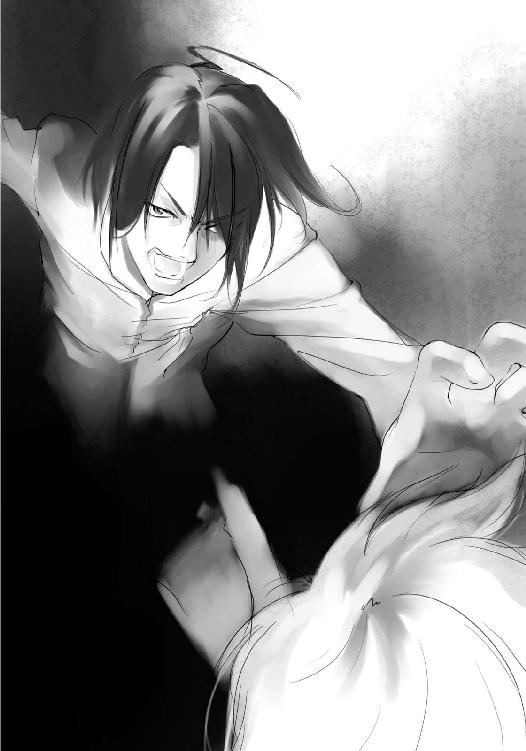
「な、何するんですか？」
「何をする？ 奪うに決まってるだろ？ 馬鹿だな、お前。素直に教えやがって」
豪が嘲笑した。顔を掴まれているため、豪の顔など見えなかったが、そのくらいは声の調子でわかった。
「ど、どうして......？」
「どうしてだと？ まだ理解してねぇのか？ 奪わなきゃ殺されるんだぞ。あいにく俺はこんなわけのわからねぇ場所で死にたくねぇんだよ。元の世界に戻る方法はただ一つ、十二の部位を集めること。そう書いてあっただろ？ だったら他の奴らから奪って、十二の部位を集めるまでだ」
あまりにも当たり前のことのように豪は言った。すでにこの争奪戦を受け入れ、そして奪うことを選んでいた。豪は奪うために自分たちに近づいたのだ。
「目を覚ましてください！ こんな争奪戦に乗っかるなんてどうかしてる！ みんなで考えましょうよ。元の世界に戻る方法を！」
「そんな方法あるのかよ？」
「それは......」
「助かる方法はすでにわかってるんだ。だったら俺はそれをやる。全員の部位を奪う。みんなで？ そんなあるかどうかもわかんねぇ方法、探してる暇はねぇよ」
椎矢の顔を持つ豪の手に力が入る。人差し指がまぶたに触れる。このまま眼の中に指を押し込まれ、直接触れられたら......
奪われる──
椎矢の背中に寒気が走る。顔を掴む豪の指の間から、倒れている喜久子の姿が見えた。
奪われたくない──
椎矢はとっさに豪の腕を掴んでいた。
だが、豪の腕力は椎矢の予想をはるかに超え、手を引き剥がすどころか、びくともしなかった。逆に腕に力を込められ、こめかみの骨が砕けそうな痛みを覚える。
「抵抗してもいいぜ。無理だと思うけどな」
腕力には自信があるのか、豪は椎矢を嘲った。脇にいる琴葉は、豪に睨まれただけで何もできずにいる。
「おっと。いつまでも遊んでる場合じゃねぇな。すでに奪い始めてる奴がいるんだもんな？ そろそろ行くか」
そのとき、椎矢は豪の手によって作られた暗闇の中に、おぼろげな光を見た。いや、正確にはずっと見えていた。明るい場所から急に暗い場所に移ったときの、そんな程度のものにしか思っていなかった。
だがやっとそれが何かわかった。
椎矢は豪の腕を両手でしっかりと掴んだ。
「手を離してください。──奪いますよ」
「どこを掴んでるんだ？ そんなとこに悪魔の部位はねぇぞ」
「オレは悪魔の眼の持ち主です。相手の部位がどこか、視ればわかるんだ！」
豪の腕から動揺が伝わってきた。豪の部位は明らかに腕だ。豪は悪魔の腕の所持者だ。
「先輩の部位は腕ですよね？」
「だから違うって言ってんだろ！」
「試してみますか？」
主導権は椎矢に移りつつあった。豪は椎矢がどこの部位かわかる能力があるなど知らなかった。だから不用意にその腕で相手の部位を奪いにいったのだ。
当たり前だが、豪は戦い慣れしていなかった。触れられ、『奪う』と宣言されれば、奪われる腕を不用意にさらしているのだから。
「手を離してください」
「そう言って、自分だけ離さないんだろうが」
互いにナイフを突きつけたようなぎりぎりの状態で、互いに動くことができなかった。
相手の命を握ると共に自分の命を握る手を、相手を信用できないこの状態で、同時に手を離すことなどできはしない。
できることなら奪い合うことなく、終わらせたい椎矢はこのままお互いに手を離すことを望んだ。
だがそれは甘かった。
豪は有無を言わさず、椎矢の腹部に膝蹴りを叩き込んだ。
「がはっ！」
椎矢は腹を貫かれんばかりの衝撃を受け、そのまま廊下に崩れ落ちかけた。が、豪の腕を掴んだままだったので、ぶら下がるような感じになる。
「だからめでたいって言ってるんだよ！」
激しく咳き込む椎矢は言い返すこともできなかった。
豪は自由な左手で、自分の右手を掴む椎矢の手を振り払った。
自分の安全を確保した豪は口の端を吊り上げ、宣言を口にしようとした。
「『奪......」
「やめてください！」
それを遮ったのは琴葉の叫びだった。
豪は胡乱げな表情で琴葉を見る。琴葉は怯えた様子を見せながらも、豪を見据えた。
「やめろと言われて、やめる馬鹿がいるかよ」
「お願いですから、やめてください、掛衣先輩」
その真剣な表情に押されたのか、豪は椎矢からすぐには奪わなかった。その隙を突き、椎矢は豪を突き飛ばし、その場から転がるように逃げる。何とか咳を呑み込み、椎矢は琴葉を連れて豪から距離を取った。
「だいじょうぶ？」
「何とか、な」
少し咳き込みながらも、椎矢は力強くうなずき、豪を見た。
その豪は自分の手を凝視し、固まっていた。琴葉の懇願に気を取られ、力を緩めてしまったことを悔やんでいるのか。
「先輩。争奪戦に乗っかるなんてやめましょう。こんなことしても意味がない」
「うるさい！」
豪は話を聞く耳など持ち合わせていなかった。我に返った豪は再び椎矢に向かってきた。
「くっそ！」
椎矢は吐き捨て、琴葉を守るように前に出た。
椎矢の眼には、豪の腕は光って視えた。改めて彼の腕が悪魔の腕だとわかる。能力があるのか、あったとしてどんなものなのかはわからないが、接近して触れなければならないことは確かのようだ。
自分は眼を、琴葉は口を触れられなければだいじょうぶだ。だがそれだけ気にしていてはさっきのように直接的な打撃を受ける。奪うからといって、その部位だけを狙う必要はない。気を失わせたり、動けなくさせれば、後はどうとでもなる。
豪もそれを狙っているようで、まずは椎矢に殴りかかってきた。
今度は予想していた。
椎矢は体をかがめて豪のパンチをかわすと、そのままタックルするように豪に突っ込んでいった。柔道くらいは体育の授業でやったことがあった。椎矢は懐に入り込んで、そのまま両足を抱えて、豪を床に倒そうとする。
だが柔道と違い、道場の中心で向かい合っていたのではなく、走る勢いがついていた。椎矢は豪の勢いに負け、もつれるように二人で倒れてしまう。
先に立ち上がったのは、上になった豪だった。
だが豪は倒れた椎矢には見向きもせず、琴葉のほうに向かった。
先に弱い琴葉を狙おうという作戦だった。椎矢は虚を突かれ、必死に手を伸ばしたが、豪には届かなかった。
「琴葉！」
椎矢が叫ぶ。豪はその悪魔の腕で琴葉に掴みかかった。
琴葉は何もできず、目をつぶって身を縮める。それが逆に焦っていた豪には効果的に働いた。豪の手は空振りし、勢い余った豪はそのまま前のめりに倒れて、琴葉の脇を通り過ぎていった。椎矢はすぐに立ち上がり、琴葉の元に行き、その背にかばう。
「だいじょうぶか？」
「うん、平気」
うなずく琴葉のこめかみ辺りが赤くなっていた。豪の手がかすめたのだ。かすり傷とはいえ、琴葉に怪我を負わせた豪に、椎矢は怒りを覚えた。
「いい加減にしろよ、お前。奪って黙らせてやろうか？」
相手が先輩だろうが関係なかった。怒りに任せて敬語をやめ、椎矢は豪に食って掛かろうとした。
「椎矢くん」
琴葉が熱くなった椎矢の腕を掴んでそれを止める。
「あたしは平気だから。だから落ち着いて」
「だけど......」
「ダメだよ。一緒に奪い合ったら。掛衣先輩もわかってくれないなら、ここからいなくなってください」
琴葉がまだ向かってこようとする豪に願うように訴える。
豪が歯噛みして、椎矢と琴葉を睨む。椎矢がその眼を睨み返す。
豪はしばらく逡巡したようにその場にいたが、すぐに立ち上がるとその場から背を向けて逃げ出した。
椎矢の形相に怖気づいたり、琴葉の懇願を受け入れたわけではないだろう。自分の部位が腕と知られてしまった予想外の展開に、一度体勢を整えようというだけだろう。だとしたら、またすぐに襲ってくるかもしれない。
それでも、ひとまず安堵を覚え、椎矢は肩の力を抜いた。と、椎矢の脱力が伝わったのか、琴葉も力が抜けたように、膝から崩れ落ちそうになった。
「だいじょうぶか？」
椎矢が慌てて琴葉を支える。
「うん、少し怖かったけど」
「あんな奴もいるのか......」
椎矢はこんな状況下だからこそ、皆で力を合わせて助かる方法を模索するべきだと思った。だが、ああして自分だけが助かる方法を、何の迷いもせずに選ぶ者もいる。
悪魔の腕を持つ彼は、この後も他の誰かを奪おうというのだろうか。
他の生徒も同じ考えなのだろうか。
これではもし他の生徒を見かけても、迂闊に近づくことはできない。
「とにかく喜久子を保健室に......」
椎矢は言いかけて、何か思いつめたような表情をした琴葉に気づく。
「琴葉？」
「あ、うん。そうだね」
いつも通りの笑顔を浮かべて、琴葉がうなずいた。先程の思いつめたような表情はもう影もない。だが、だからこそ無理しているのがわかった。
当然だ。こんな状況下で平気でいられるはずがない。
それでも自分と琴葉はまだ幸運だったのかもしれない。
こうして信用し合える相手に巡り合っているのだから。
第四章 帰還への道標
「椎矢くん、だいじょうぶ？」
「平気だよ」
人一人を背負って歩き続けるのは重労働だ。椎矢の額には大粒の汗が浮かんでいる。だが椎矢は弱音の一つも吐かずに、笑って返した。本当は結構つらかったが、そんなことは言えない。男の見栄というやつだ。
琴葉は喜久子を背負えない代わりに、椎矢の額に浮かぶ汗をハンカチで拭って手助けをしていた。
椎矢と琴葉は南棟と東棟の境まで戻ってきた。
と、そこで小さな悲鳴が廊下の向こうから聞こえてきた。
二人ははっとして、廊下の曲がり角まで行き、顔だけを出して様子を窺う。
背中を向けているためによく見えないが、長身の女子生徒が立っていた。その向こうにもう一人女子生徒がいたが、死角になってよく見えない。
豪の例もある。迂闊に近づくことはできない。
耳をそばだてて会話を聞いてみると、「やめてください」と向こう側の女子生徒の声が聞こえた。嫌がる女子生徒に長身の女子生徒が何かをしているようだった。
「もしかして奪おうとしているんじゃ......」
琴葉がそう呟いたとき、椎矢は喜久子を下ろして角から飛び出していた。
別に人一倍の正義感があるわけではない。だが背中に背負ってきた喜久子のことを思えば、他の誰にも同じようなことになってほしくなかっただけだ。奪い合おうとしているのであれば、このまま見過ごすわけにもいかない。
長身の女子生徒が、向こう側の女子生徒の胸を掴んでいた。
二人には見覚えがあった。
長身の女性は甲斐谷芙未、もう一人の女子生徒は有栖川擁子だった。ついさっきまで同じ演劇部の舞台に立っていた二人だったのに、今はもう奪い、奪われようとしている。
椎矢はなぜか悔しくなって歯噛みした。
馬鹿げている、こんな状況も、こんな状況に従う人たちも。
椎矢は体当たりするように、芙未に向かって突っ込んでいた。が、芙未は椎矢が向かってきていることに気づいていた。絶妙のタイミングで振り向き様に足を捌き、椎矢の足を払った。
「うわっ！」
椎矢は前に出した足を払われ、バランスを崩して廊下を転がった。二転、三転して椎矢はやっと体勢を整える。
そのときにはすでに芙未が目の前に立ち、椎矢を冷めた目で見下ろしていた。
「何するんだよ？」
「............」
「一年だね？ それにここにいるってことは悪魔の部位の持ち主ってことか。ったく、こんなのに踊らされやがって。パニクってるんじゃないよ、男のくせに情けない。争奪戦だって言われたら、奪うのか、馬鹿が」
「う、奪おうとしてたのはそっちだろう！」
芙未はさらにずかずかと椎矢に近づき、その手を伸ばしてきた。あまりにも唐突すぎて椎矢は何もできない。
芙未の手は椎矢のその唇を掴み、思い切りねじり上げた。
「先輩に対する口の聞き方教えちゃる」
「いでででで」
唇をねじり上げられ、椎矢は悲鳴を上げた。千切れんばかりにねじって、芙未は椎矢を解放した。
別に悪魔の部位を奪うとかそういう考えはなかったようだ。
むしろタメ口を利いてきた後輩に腹を立てているようだった。校章を見なくとも芙未が三年生であることは知っている。椎矢は一年生だから、普段なら当然タメ口など聞ける相手ではない。
椎矢は何かがずれていることに気づいた。
「ちょっと待って！」
「人の話を聞いてんのか？」
「ま、待ってください！」
芙未はそれならよしとばかりに、伸ばしかけた凶器のような手を引っ込めてくれた。
「あ、あの奪おうとしてたんじゃないんですか？」
「は？」
「胸を掴んで、奪おうとしてたんじゃないですか？」
芙未はわけがわからない様子で、さっきの状況をわざわざ再現しようとし、そこにいた擁子の胸をわしっと掴む。
「ひゃああああ」
擁子がびっくりして悲鳴を上げた。悲鳴もさっき聞こえたそれと同じだった。
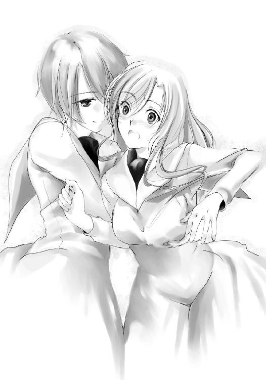
「これがどうかしたのか？」
「ふ、芙未先輩、わざわざ再現しなくていいですから」
と、胸を掴まれていた擁子が真っ赤になって懇願するが、なぜか抵抗はしない。
「どうかしたのかって、だからそれ、奪おうとしてたんじゃないんですか？」
「ああ、そういうことか。ばーか、これはいつものことだ」
「そうなの。だから落ち着いて。本当にいつものことだから」
と、胸を掴まれているほうの擁子までが言うので、椎矢の頭が少し冷える。頭が冷えると、それはそれで疑問が浮かんだ。
「いつものこと？」
「え？ あ、そうじゃなくて、ヤダ......」
「そうだ。いつものことだ」
擁子は自分の発言に気づき、両手で顔を覆って否定するが、芙未は胸を張って肯定した。
「いつものって......」
女同士で胸を触って触られ、それをいつものことと言う。
椎矢の頭の中によからぬ思いが浮かんだとき、その妄想を中断させるように、芙未の前蹴りが顔に飛んだ。
「妄想するな」
「ベ、別に妄想なんか......」
図星だった椎矢が慌てて弁解しようとしたとき、琴葉の椎矢を呼ぶ声が聞こえてきた。
「ん？ もう一人いるのか？」
「はい。というか、もう二人ですけど。とりあえず一緒に来てもらえませんか？」
琴葉が喜久子を連れてくることはできないため、椎矢は二人を連れて琴葉の元に戻った。
「だいじょうぶ？ 椎矢くん」
真っ赤になった唇を見て、琴葉が心配そうに言ってきた。心配されるのも恥ずかしいくらいの勘違いだったので、平気と答えておく。
「！」
と、芙未の顔が険しくなった。
琴葉の隣で倒れている喜久子に気づいたからだ。一目でただ寝ているだけでないことはわかる。
「んで？ どした？」
「そこで寝ている子、どうかしたの？」
端的な芙未の問いを、擁子が補足する。
椎矢が悔しげに歯噛みし、琴葉が目を伏せた。それだけで答えは十分だった。
「奪われたってことか」
芙未は嘆息した。椎矢が過敏に反応したのも合点がいった。
この状況に踊らされている生徒がいることを身を以て知っているのだ。芙未からすれば、悪魔の部位なんて奪う奴の気が知れない。
「誰にやられたんだ？」
「わかりません。見つけたときはもう奪われてました」
誰が奪ったかはわからない。だが探し出す方法はある。耳が光っている奴が、喜久子から悪魔の耳を奪った犯人だ。
「............」
椎矢はふと無意識のうちに眼鏡をずらし、芙未と擁子を交互に盗み見た。
二人の体で、光っていたのは──
擁子が自分の胸を見られているとわかって、慌てて胸の前で両手を交差する。その胸の存在感からよく他人の視線を集める擁子は、見られていることに敏感だ。
「どこ見てんだよ」
それに気づいた芙未が椎矢にアイアンクローを食らわせた。
「あだだだだ！」
「ダメ！」
琴葉が叫ぶ。芙未はびっくりしたようにその手を離す。
さっき口を捻られていたときは隠れたまま何もしなかった琴葉が、今度は鋭く止めに入った。芙未は戸惑いながら、椎矢から離れた。
「だいじょうぶだよ、琴葉。奪われてないよ。心配するなって」
琴葉はそれを聞くと、長い息を吐いた。膝から力が抜けて、へたり込みそうになるが、椎矢に掴まって何とかそれをふせぐ。
「だいじょうぶか？」
「うん。ごめんね」
琴葉が焦った理由を芙未はすぐに察した。
「そっか。お前は『眼』の持ち主か。悪かったな。奪うつもりじゃなかったんだ」
「わかってます。あと、別にその......胸を見てたわけじゃ......あ、見てたといえば見てたんですけど......違う意味で」
とりあえず誤解を解こうと、椎矢はしどろもろどろになって説明した。
「違う意味？」
「はい。オレは悪魔の眼の所持者で、その人を視れば、悪魔の部位が何なのかがわかる能力があるんです」
「能力？」
「悪魔の部位にはそれぞれ特殊能力があるみたいなんです」
「特殊能力......？ そんなものがあるのか？」
芙未が擁子に確認するが、擁子も同じく能力が使えないどころか、その存在も知らないようだった。
「オレも偶然手に入れたんですけど、変な黒い奴と命っていうか、生気みたいなのを交換して手に入れるみたいです」
椎矢は自分のときのことを芙未たちに話した。
「無茶なことする奴だな」
「自分でもそう思います」
芙未が呆れるのももっともだ。混乱していたとはいえ、自分のしたことに今さらながらに反省する。
「えっと、それで、すいません。二人が悪魔の耳を持っていないか確認しました。耳はそこで寝ている奴の部位なんです」
よくよく考えれば疑っているといわんばかりの行為である。とんでもなく失礼なことをしたものだ。椎矢は素直に謝罪した。
「謝らなくていい。当然のことだ。それでわかったのか？」
「はい。えっと......」
「芙未と擁子でいい。先輩をつけろよ。お前たちのことは椎矢と琴葉って呼ぶぞ」
会話の中で名前を知ったようで、芙未は面倒な自己紹介を省く。
「芙未先輩は『足』で、擁子先輩はむ......『上半身』ですね？」
芙未は相手の部位をぴたりと言い当てた椎矢の能力を知り、嘆息した。能力と違い、自分の部位は自分でわかる。
「便利なのか、厄介なのか」
「便利だと思いますけど」
「便利な能力はそれだけ狙われやすいってことだよ。その子のは『耳』だったな？ 琴葉は？ いや、言いたくないなら別にいいけどさ」
「あたしは悪魔の口の所持者です」
琴葉は椎矢に従い、芙未たちを信用したようだった。
「ありがとよ。眼、口、耳、それに胸と足。これで五人か」
「あと、鼻と腕の所持者にも会ってます」
椎矢は空亜と豪と会ったときのことを話した。
「掛衣か、面倒な奴も来てやがる」
彼の噂は同じ学年の芙未ならもっとよく知っているだろう。
「掛衣はどっちに行った？」
「西棟のほうです」
「そうか。だからこっちに逃げてきたってわけだな？」
「別に逃げてきたわけじゃないですよ。最初からこっちに来るつもりでした。保健室にこいつを寝かせてやろうと思って」
椎矢は少し不満そうに反論し、自分たちの目的を告げた。芙未はそんな椎矢に内心苦笑しつつ、そうかとうなずいた。
「悪かったよ。それじゃ、とりあえずそいつを連れて保健室行くか」
芙未が当たり前のことのように、あっさりと言った。
「え？」
「こんな状況だ。少しでも固まってたほうがいいだろ？」
その申し出はとても心強かった。喜久子を背負った自分と琴葉だけでは誰かに襲われたとき、正直心もとなかったのだ。豪が追ってくる可能性もある。芙未たちを矢面に立たすつもりはないが、注意を払ってくれるだけでまったく違う。
椎矢は眠りについている喜久子を背負った。琴葉だけでなく、芙未と擁子も手伝ってくれたので、比較的楽に背負うことが出来た。たかだかこんなことくらいでも、助けがありがたい。
「なあ、お前は保健室に行った後はどうするんだ？」
と、保健室に向かいながら、芙未が背中越しに聞いてきた。
椎矢はその問いにわずかの間を置いたが、ゆっくりとだがはっきりと告げた。
「まずは喜久子を保健室に置いて、その後、こいつの悪魔の部位を取り戻します」
「取り戻す？」
「はい。悪魔の部位を取り戻して返したら、目を覚ますかもしれないから」
「なるほど。そういう考えもあるか」
「その後は、元の世界に戻る方法を探したいと思います。ただし、十二の部位を奪って自分だけ戻るんじゃなくて、みんなで戻れる方法を」
椎矢は迷いなく、そう告げた。
「大きく出たね？」
「......そういう先輩はどうするつもりですか？」
「アタシも擁子も、今のところこんな争奪戦なんぞに参加する気はないな」
「先輩は随分余裕があるんですね？」
「まあ、アタシにはこいつがいるからな」
と、芙未が擁子の頭を撫でた。擁子は嬉しそうな照れたような仕草を見せる。二人が信用し合っているのがよくわかる。
だがそれでは何の解決にもならないはずだ。
「０時まで争奪戦があって、そのとき十二の部位を持っていた人だけが生き残るんですよね？ それ以外の人は死ぬんですよね？ それでも何もしないつもりですか？」
「......そうまっすぐに聞くなよ。正直、それは決めかねてるんだからよ」
困ったように芙未が言う。
「ただ少なくとも一人で戻るつもりはないね」
芙未は特に擁子を見たわけではなかったが、彼女のことを気に掛けているのは明らかだった。
「ま、誰かが何とかしてくれるのを望むよ。お前がやってくれると助かる」
「一緒に探しませんか？ みんなで戻れる方法を」
やはり一人でも多くの同士がほしかった。
芙未と擁子はこの争奪戦に参加する意思がない。だが待っているだけではタイムリミットが来て終わりだ。それならば一緒に元の世界に戻る方法を見つけてはくれないか。
芙未は椎矢に任せるような言い方をしたが、正直自分と琴葉だけで何とかなる見込みなどまったくなかった。何せ手がかりすらない状態なのだ。
擁子が芙未の制服を引っ張る。芙未は小さく嘆息した。
「お前、耳以外も狙う気があるか？」
「え？」
「その子の耳を取り返すのはいいとして、他の奴からも奪ってやろうとか考えてるか？」
「考えていません」
椎矢は芙未の目をまっすぐに見据えて言った。
悪魔の眼はその確かな意思を芙未に伝えてくれた。
「わかった。信じるよ。......本当はこういうのは柄じゃないんだけどさ。まあ、そんなことを言ってられる状況でもないか。いいよ、手を貸してやるよ」
「ありがとうございます！」
と、それまで黙っていた擁子が口を開く。
「それなら図書室に行きませんか？」
「図書室？」
「図書室の資料室にこの土地の悪魔伝承について記された本がいっぱいあります。何かの手がかりになるかもしれません」
「なるほどな。何かいい情報が載ってるかもしれないな」
この状況が悪魔伝承に関わるというのなら、それに関する資料を調べて損はない。いや、冷静に考えればそれしか手はない。
初めて方向性が見えてきた。
「ここからなら保健室行くより図書室のほうが近いな」
東棟の端にある保健室より。南棟に少し戻って、二階にある図書室に行ったほうが、ここからは近い。順序は変わるが、今は情報も必要だ。
「でもあそこ鍵が閉まってるんじゃないですか？ 鍵を職員室に取りに行かないと」
「わたし、図書委員だからだいじょうぶよ」
擁子のおかげで、椎矢の心配は杞憂に終わった。
「そんじゃ、善は急げだ。行くか」
図書室には一般書籍だけでなく、資料用のものもあるため、普段は鍵が閉められている。
とはいえ、そこは生徒の運営に任されている委員会の領分であるため、表向きのものでしかない。
擁子は図書室の前にやってくると、ドアの前に設置された本の返却ボックスの中に手を差し込んだ。びりっと何か剥がれる音がして、返却ボックスから抜いた擁子の手には鍵が握られていた。
「毎日、職員室に行くのは面倒でしょ？ 図書委員の暗黙の了解」
悪戯っぽい笑みを浮かべる擁子に、椎矢と琴葉は意外そうな顔をする。図書委員だから平気と言っていたのは鍵の隠し場所を知っているという意味を指していた。てっきり鍵を持っているものだと思っていた。
当然、鍵は職員室に返さなければならないし、鍵の数は教師が把握している。合鍵を作って隠しておくなど表向きは禁止されている。擁子が発案したかどうかは別として、むしろそういうことを注意したり、自分だけはやらないというタイプだと思っていた。
「どうかした？」
その反応を楽しむかのように擁子が聞いてくる。
そんな大したことをしたわけではなかったが、少なくとも噂どおりの清楚で可憐な少女というわけではないらしい。
擁子は鍵を開けて中に入り、椎矢たちも後に続いた。擁子はそのままカウンターの奥に入って、電気を点ける。椎矢と琴葉はとりあえず喜久子を床に寝かせた。芙未は後ろを警戒しながら、最後に図書室に入り、ドアを閉めた。
擁子が先導して、図書室の奥に進んでいく。一番奥に行くと、資料室と書かれたプレートがドアの前に張られていた。ドアの横にはカードリーダーが設置されている。これにより、誰が資料を閲覧したかが情報として保管されるのだ。
擁子はカード式の学生証をカードリーダーに通す。ドアの鍵が開く音がし、擁子はドアを押し開けた。
中から据えた本の匂いが大量に流れ出てくるかと思ったが、それほどではなかった。普段から閲覧利用や整理、掃除がされているからだろう。
「うわ」
資料室に入ったことがない椎矢は倉庫のような景観と林立する本棚、そこに埋まっている本にため息を漏らした。
「相変わらず本臭いな」
「それは図書室ですから......」
芙未の不条理な不満に、擁子が苦笑いをする。
「相変わらずって芙未先輩入ったことあるんですか？」
正直、本を読むタイプには見えない。もしかして演劇部の役作りで資料を見たことがあるのだろうか。
「ん？ ああ、前に擁子を迎えに来たときついでにね」
軽く答える芙未に対して、擁子はなぜか顔を赤くして目を逸らした。
一体ここで何があったのだろうか──椎矢は考えないことにした。
「そ、それでこの本、全部調べるんですか？」
「げ、マジか？」と芙未。
「あ、そんなことないわ。全部が全部、悪魔伝承の資料というわけじゃないから」
椎矢の問いに擁子が答える。ここには悪魔伝承以外にも様々な資料が保管されていて、目当てのものはその一角にある分だけだという。
だが案内されたその一角にも、十分過ぎる量の本があった。とりあえず二十冊程度だが、一冊一冊が分厚く、人を殴ったら殺せそうな代物だと椎矢はげんなりした。
「人殴ったら殺せそうだな」
「そんなこと考えるのは芙未先輩くらいですよ」
芙未と同じことを考えた椎矢は、なぜかいたたまれない気持ちになった。
「よし、椎矢。あれ全部下ろして閲覧用の机に持ってけ」
「オレがですか？ 芙未先輩のほうが背高いじゃないですか？」
「女に力仕事させる気か？ 力仕事は男の分野だ。お前一人でやんな」
「わ、わかりましたよ」
芙未に凄まれ、椎矢は渋々うなずく。絶対芙未のほうが自分より力があると思ったが、それは言うまい。椎矢は脚立を持ってきて、上のほうにある資料本から下ろしていく。
「椎矢くん」
と、琴葉が下から受け取ろうと手を伸ばす。本は重いし、芙未から男の仕事だと言われたから断ろうかと思ったが、
「あたしに渡して」
一冊ずつなら平気かと思い直し、椎矢は素直に上から琴葉に資料本を手渡した。琴葉が少しだけだが、驚いた表情になる。
「どうした？」
「あ、ううん。何でもない。思ったより重かったから」
「無理ならいいぞ」
「ううん。思ったよりっていうだけだから平気」
琴葉は大事な資料本を落とさないように注意しながら受け取ると、奥の畳二畳分はありそうな閲覧用の机に持っていく。椎矢は琴葉が戻るのを待っている。その間、椎矢はすることがない。心遣いは嬉しいが効率が悪い。あまり時間もないので自分でやることにしよう。
「なあ、琴葉」
「はい。椎矢くん、次渡して」
戻ってきた琴葉が椎矢に向かって手を伸ばす。椎矢はやめさせるのも悪い気がして、そのまま琴葉に本を手渡し、また戻ってくるのを待った。
琴葉も待たれていることがわかって足早に本を持っていくが、効率は大して変わらない。
「あの、もしかして邪魔？」
戻ってきた琴葉が、椎矢の表情でそれを察する。
「いや、邪魔じゃないよ。ただ効率が少し......」
「じゃあ、やめたほうがいい？」
「そうだな。それ運んだら、休んでていいよ」
椎矢が言うと、琴葉は少し肩を落として手にしていた一冊を閲覧机に持っていった。少し足取りが重い。言い方を考えたつもりだが、椎矢としては失敗だった。
「お前が一人でやったほうが効率いいだろうが」
と、遠くから見ていた芙未がいつの間にか下に来ていた。
「アタシはお前にやれって言ったんだよ」
「オレもそうしようとしてたんですけど、手伝ってくれるっていうから」
「何で断らなかった？」
「それも悪い気がして。でも効率が悪いから後は自分でやりますよ。つーか、そんなことくらいで怒らないでくださいよ」
「いや、怒ってるんじゃないんだ。ああ、いい。なんとなくわかった」
「は？」
「ちなみに効率が悪いのはお前のやり方だ。本を一回全部下に降ろしてから運べ。馬鹿」
下にいる芙未が文句をつけてくる。文句があるなら自分でやるか手伝うか最初から言えばいいのにと思うが、やり方に関しては芙未の言うほうが効率がいいので、素直に従う。
戻ってきた琴葉に指示し、椎矢は琴葉に本を手渡し、琴葉は本を受け取っては床に積んでいく。貴重な資料本を下に降ろしていいものか琴葉は気にしたが、そんな場合ではないと自分に言い聞かせ、何も言わなかった。
棚から全部出し終わった椎矢は、琴葉と一緒に資料本を閲覧机に持っていった。
椎矢が何冊かまとめて運んだこともあり、作業はあっさりと終わった。
「ほら見ろ。すぐ終わっただろうが」
「芙未先輩が手伝ってくれたら、もっと早く終わりましたけど」
「何か言ったか？」
「いえ、別に」
芙未はじろりと椎矢を睨んだ後、琴葉の頭をぽんと叩いた。
「ごくろうさん。それじゃ、中を調べるか」
芙未は閲覧用の机にどかっと座り込み、手近な資料本を広げた。
「あー、字が多いな。漫画にしろよ、ちくしよう」
芙未は無茶な悪態をつきながら、資料本のページをめくっていく。それで調べているのかと言いたくなるような速さだ。
「まったく口ばっかなんだから。本当は芙未先輩が悪魔の口の持ち主なんじゃないのか？ あ、擁子先輩のことじゃないですよ」
同じく手伝わなかった擁子に、椎矢は慌てて弁解する。
と、擁子が椎矢に耳打ちする。
「今のは琴葉さんのためだから」
「へ？」
「琴葉さん、自分が何もしてないからか、負い目って言うのかな？ そういうの感じてたみたいだったから。それに人見知りするのか少し緊張してたみたいだし」
椎矢は芙未に習って、閲覧用の机に座って資料本を広げる琴葉を見た。本を選ぶのも、資料調べも積極的に取り掛かっている。
椎矢は喜久子を運び、擁子は図書室を開け、芙未は芙未で周囲を警戒する役を担っている。ただ守られて、ついてきているだけの琴葉は負い目を感じていたのかもしれない。
「椎矢くんは普段どおりにね」
そう言うと、擁子は椎矢の背中を押して、閲覧机のほうに向かわせた。
椎矢は琴葉の隣に座り、顔色を窺う。だが琴葉は何か手がかりを見つけようと集中していて、椎矢が座ったことにすら気づいた様子はない。
悪魔の眼なんて持っていても、見えないことばかりだ。
おいしいところを芙未に持っていかれたような気になって、少しふてくされる椎矢だった。
「こっちは何もなし」
「オレも」
芙未と椎矢がほぼ同時に担当分の四冊を読破した。
芙未のページをめくるスピードを見て、それで調べているのかと思っていたことなど、椎矢はもう忘れていた。
しかし得られた情報といえば誰もが知る伝承の内容か、この状況には関係のなさそうな学者の独自の見解を綴った論文だけだった。
もっとも隅から隅まで読んだわけではないので、見落としがあるかもしれないが、それをやろうとすると、いくら時間があっても足らない。時間は限られているのだ。
琴葉と擁子は最後の一冊に目を通しているが、二人ともすでに目を通した三冊では同じ結果しか得られていない。
しばらくして擁子も本を閉じ、かぶりを振った。
「琴葉、大体でいいぞ」
「うん。でももう少しだから」
「争奪戦か......」
悪魔がこの土地に災いを振りまき、一人の巫女と十一人の従者がその悪魔を倒し、十二の部位に分断し、この土地のどこかに封じたという内容。
子供の頃から聞かされているよく知る話。
こんなことがあった以上、この伝承は現実にあったことなのだろう。だが欲しい情報は資料本には特に書かれていなかった。
同じ時、同じ場所、奪われた我が部位集えば、我復活を果たさん。
封じられた悪魔が残した有名な一文。
だがそこまでだ。そこから先のことは、どの資料本にも書かれていない。
悪魔の部位を所持し、それを奪い合う争奪戦が起こり、十二の部位を手に入れれば、悪魔が復活を果たし、その人間の命が助かるなんて話は書かれていない。
ましてやその争奪戦から助かる方法なんて──
「あ」
と、琴葉が何かに気づいたように声を上げた。
「どうした？ 何かあったか？」
「あ、大したことじゃないの。ただ栞が挟まってただけ」
「何か特別なことが書いてあるのか？」
「ううん。内容は別に」
椎矢は琴葉から本を奪って見てみるが、書いてある内容は悪魔伝承のことではあるものの、特別珍しいものではなかった。
椎矢は期待を外され、栞に使われていた紙を丸めて机の上に放り捨てた。
「！ ちょっと待て。これ......」
目の前に転がってきた栞を何気なく見た芙未が声を上げた。芙未は丸めた栞を取り上げ、広げてみる。
「どうかしたんですか？」
「......やっぱり。これ、今日の文化祭のパンフレットの一部だ」
「え？ ちょっと見せてください」
椎矢が確かめるように芙未の持つ栞を覗き込む。確かに今日の文化祭のパンフレットだった。椎矢と芙未が顔を見合わせうなずき合う。
「擁子、この資料本、誰が読んでたかわかるか？」
「はい。貸出記録と閲覧記録はデータベースに残っているはずです」
芙未に言われ、擁子は資料室を出て、パソコンのあるカウンターに向かった。
「？」
まだ要領を得ていない琴葉に椎矢が説明する。
「いいか？ 文化祭のパンフレットが栞として挟まっているってことは、今日か最近になってこの本を読んでた奴がいるってことだ」
「うん」
「タイミングがよすぎるとは思わないか？」
「あ......」
やっと琴葉もその事実に気づく。そして同時に、椎矢も別のあることに気がついた。
さっき豪と話していたときに感じた違和感。
もう奪い始めてるってことは適応力が高い──
豪はそう言った。だが違う。
「芙未先輩。『奪う』って言葉、知ってましたか？」
「『奪う』って、この争奪戦で相手から奪うときに使う呪文みたいなやつのことか？」
「はい。それをこの争奪戦が始まる前に知ってましたか？」
「いいや」
「知ったのはいつですか？」
「さっきだよ。変な影っつーか、闇の文字みたいなのを読んでだ」
「そのときの状況はわかりますか？ 放送用のスピーカーがノイズを発したりしませんでしたか？」
「ああ、確かにそうだった。お前たちは違うのか？」
「オレたちも同じです」
芙未は椎矢の問いの意味がわからなかった。
「でも、違う奴がいます」
「なに？」
闇の文字による悪魔の言葉。争奪戦のルール。
あの文字が現れる寸前、スピーカーがノイズを発した。
だがあのノイズより前に、つまり闇の文字が現れ、争奪戦の話が出る前に、喜久子は悪魔の部位を奪われていた。
それが椎矢の感じていた違和感だった。
「喜久子から悪魔の部位を奪った奴は、最初から全てを知っていたかもしれない」
わずかな時間で適応したのではない。最初から適応していたのだ。
「何も知らない奴が『奪う』なんて言葉を使って、相手の部位を奪うなんてありえない。まだ可能性に過ぎないけど、喜久子から悪魔の部位を奪った奴はこの現象が起こる前に、例えばこの資料本か何かを調べて、この争奪戦のことを知ったんだ。もしかしすると、この状況を作り出したってことも考えられる」
「それがこの資料本を読んでた奴ってことか？」
「その可能性はあるかもしれません」
と、擁子がプリントアウトした紙を持ってきた。携帯電話は圏外だが、校内のローカルネットワークは問題なく稼動しているようだ。
擁子が閲覧者のリストをそこに置く。リストには生徒の顔写真も荒い画質だが添付されている。学生証用の証明写真が生徒情報として保存されているのだ。
「まず時期は置いておいて、この資料本を全て借りた生徒が複数名います」
「これを全部？ そいつが犯人だな」
「そんな単純な......」
椎矢のツッコミを無視して、擁子が話を続ける。
「まずは三年生の進堂真先輩。生徒会長なので皆さん知っていると思いますが、彼は入学してすぐの頃に全巻読破しています。他に二年生の紗々木智事加さん。同じく生徒会の副会長で、一年生の頃に読破しています。全巻読破したのはこの二人だけです。それから全巻ではないですが、閲覧していた人は大勢います」
「一番最近なのは？」
「二年生の音無千代さんです」
「いつだ？」
「......今日です」
やはり今日、この資料を読んでいた生徒がいた。
「ただ少し奇妙なのは......」
擁子がそこで不必要な間を空ける。
「彼女、最近ずっと学校を休んでいたんです」
「学校を？ どうしてだ？」
擁子は言いづらそうに、だが隠している場合ではないと口を開く。
「実は、彼女はわたしと同じクラスなんですけど、彼女、いじめにあって、それでしばらく学校に来てなかったんです。せっかくの文化祭だからって先生が呼んだのかもしれませんけど」
「だとしても、おかしいな」
むしろ文化祭などの行事のときのほうが休んでいた生徒は来づらいはずだ。しかも準備も何も手伝っていないのならなおさらだ。
「その音無って奴の特徴は？」
進堂真、紗々木智事加は生徒会メンバーで全校集会などで前に出るなど有名なので誰もが知っている。だが音無千代に関しては擁子しか知らない。
写真の少女は眼鏡を掛けていて、三つ編みで髪を二つに縛っている。どこか真面目そうな感じのする生徒だ。
「よく生意気だって言われてました。別にわたしはそうは思わないんですけど、強気って言うか、頑固って言うか、そんな感じがします。あまり喋ったことはないから、詳しいことはちょっと。背はわたしより少し低くて、そうですね、琴葉さんくらいです。それから写真は三つ編みですけど、今は短くして髪を青く染めてます」
「そりゃまた大胆なイメージチェンジだな？」
「はい。どうしてかわからないんですけど、急に」
「わかった。とにかくその三人、今ここにいるかわからないけど、探してみる価値はありそうだな。特に音無千代って奴はな」
資料本は残りあと数ページだったが、方向性が決まったため、もう意味がないかもしれない。そう思ったが、一応琴葉は残りのページをめくる。
と、資料の最後のページにカードが貼り付けられていることに気づく。そのカードには何かの番号が記されていた。
「あ、それは付属資料の閲覧カードよ」
擁子がそれに気づいて、琴葉に教える。
「例えば付録みたいな資料とか、書籍じゃない資料とかが本につけられてるときがあるでしょ？ それは本棚に置けないから、別管理しているの」
擁子はカードを琴葉から受け取る。
「ちょっと待ってて」
擁子は資料室の奥に向かうと、しばらくしてから新聞のコピーを持って戻ってきた。その顔は神妙なものだった。
「ちょっとこれを見てください」
擁子はその新聞のコピーを資料机に広げた。
新聞はこの町近辺にだけ配られている地方新聞で、枠外に記された日付は十二年前のものだった。
記事は「白昼の集団行方不明事件」と題されていた。
椎矢たちが顔を一度見合わせ、記事を覗き込む。
「『悪魔伝承の存在するこの土地に学校を創立することとなり、十二月十二日に慰霊祭が行われていた。その慰霊祭の最中、関係者十二名が白昼にもかかわらず、行方不明となった。周囲にいた人々は彼らがいついなくなったか皆目検討つかず、気づいたらいなくなっていたと曖昧なものばかりだった』」
椎矢が記事の途中までを読み終えると、奇妙な間と静寂が広がった。
自分たちの境遇とあまりにも酷似しているではないか。
十二年前の今日。白昼の行方不明事件。十二人の行方不明者。
十二という忌まわしき数字。行方不明という悪しき符号。
そして──
「『そして十三日未明、十二人の行方不明者のうちの一人が発見された。発見されたのは刀納依誠一さん （62歳）』」
椎矢と琴葉が顔を見合わせる。
刀納依──それは今日ホールで会った、あの舞台脚本を書いた刀納依聖司の名字と同じだった。
「芙未先輩、刀納依誠一さんってこの学校の創立者の方と同じ名前です」
「ってことは、聖司の爺さんってことか？」
擁子と芙未の会話で、それが偶然の一致などではないことが証明される。
どこかで聞いた名だと思っていたが、刀納俵とはこの学校の創立者の名字だったのだ。
「先を読んでみろ」
芙未に促され、椎矢は続きを読む。
「『刀納依氏は発見されたときすでに正気を失っており、会話能力がなく、事件の全貌や他の行方不明者のことはわからずじまいだった。警察は引き続き捜査を続けると共に、今は刀納依氏の回復を待っている』。以上です」
「それだけか？ 他に何かないか？」
椎矢たちは自分の読んでいた資料本を改めて見直すが、付属資料はそれだけだった。
「擁子、この図書室に元の新聞はないか？ この後、この事件がどうなったが知りたい」
「新聞は図書室には置いてないんです。これもあくまで付属資料としてですから」
芙未はそうかと、悔しそうに親指を噛んだ。
「でもこんな事件があったなんて聞いたことなかった......」
口にした椎矢だけでなく、琴葉も芙未も擁子も学校創立の慰霊祭でそんなことがあったなど知りもしなかった。もちろん学校創立の資料にもそんなことは書かれていない。
関係者が口裏を合わせてこの不吉な事件を隠蔽したのだろう。
新聞も地方版であることから、大きな事件としては扱われなかったに違いない。
だがこれで刀納依聖司が、無関係であるという線は薄くなった。何かを知っている可能性は大いにある。
「とにかく聖司の奴も探そう。ここに来てるかどうかもわからないけど、こんだけ関わってれば来てる可能性が高い」
芙未の意見に反対する者はいなかった。
音無千代が、刀納依聖司が、あるいは進堂真か紗々木智事加が、何かを知っているかもしれない。
彼らを探せば何かがわかるかもしれない。
「よし、行くぞ」
「片付けなくていいんですか？」
「今は非常事態だからしょうがない」
芙未の答えに、擁子の様子を窺うが、仕方ないといった様子でうなずいてくれた。
芙未を先頭に四人は資料室を出る。
今の時刻は午後七時半。残された時間は四時間半。残された時間は長いのか、短いのか。
だが光明が見えてきた。何をすればいいか明確になった。進むべき道が見えてきた。助かるかもしれないという期待が生まれた。
──だから油断が生まれていた。
本棚の陰から飛び込んでくる影に、誰も反応できなかった。
「きゃあっ！」
短い悲鳴を上げたのは資料室の鍵を閉めようと最後に出た擁子だった。そして擁子を後ろから羽交い絞めにしていたのは掛衣豪だった。
「擁子！」
「動くな！ それから一言も喋るんじゃねぇ！ 逆らったらこいつの腕をへし折るぞ」
豪は右手を擁子の首に回し、左手で擁子の腕を後ろに極めていた。あと少し捻じ曲げれば、擁子の細腕などあっさりと折れてしまいそうだった。椎矢たちは豪の指示に従い、動くことも喋ることも自らに禁じる。
よく見れば、豪はどこから探してきたのか手袋をしていた。腕の露出はなく、奪われないよう策を練ってきたことがわかる。だがこれでは彼自身も手で触れて奪えない。
つまり気を失わせるか、動きを封じるかしてから奪う方法を選んだようだ。確かに守りの面では安全である。
豪は擁子を引きずって、椎矢たちから距離を取る。
「へっ。随分と盛り上がってたみたいだな？」
豪が鼻で笑うが、命令があるため誰も何も言えない。
さて、と呟き、豪が椎矢を見た。
「おい、お前。まずこいつらの部位を答えな。嘘は許さねぇぞ」
椎矢と琴葉の部位はさっき会ったときに教えてしまったので知られている。椎矢は芙未を見るが、彼女は仕方なさそうにうなずいた。
「この人が足で、あんたが人質に取ってる人が上半身だ」
と、それを聞いて豪が笑いを弾けさせた。
「上半身ってことは胸か？ こりゃいい。あの有栖川擁子の胸を奪えるとはね」
擁子が嫌悪を示すように身をよじって逃れようとするが、力では適わない。
「てめぇ、ふざけた真似しやがったら殺すぞ」
たまらず芙未が叫ぶと、豪ががらりと表情を変え、不機嫌そうな面構えになる。
「勝手に喋るなって言ったよな？ お仕置きだ」
と、豪は腕の中にいる擁子の胸倉を掴むと、力任せに引っぱった。ボタンが飛び、制服の前が引き裂かれ、下着と白い肌が露出される。
「いやぁ！」
擁子が悲鳴を上げる。芙未が怒声を発しようとするが、すんでのところで堪える。
「俺の断りなく喋ったら、次は裸にひん剥くぞ。よう、悪魔の眼の持ち主は服が透けて見えるのか？ どうなんだ？」
最低な脅し文句に豪は気分を良くしたように、下卑た笑いを浮かべる。椎矢はさっきこの男を安易に放置したことを呪った。
「悪魔の部位はわかった。次はお前らの中に能力を使える奴はいるか？」
「......オレの能力は相手の部位がわかることだ。って、もう知ってるか。使えるのはオレだけだ。他の人は能力が使えない」
「本当だろうな？」
豪のその問いは芙未に向けられていたが、芙未は答えない。
「聞いてんだから答えろよ」
「......喋るなって言ったのはお前だろ？」
「てめぇ、揚げ足取れる立場にあると思ってるのか？」
「揚げ足を取るつもりなんてないよ。これ以上手を出されたくないだけだ。喋っていいなら喋ってやるよ。もっとも椎矢の言う通り、能力なんて使えないけどね」
芙未は吐き捨てるように言った。
「他はどうだ？」
「だから琴葉も擁子先輩もわかってないって言ってるだろ。そんなもんあるなら、とっくにお前をどうにかしてるさ」
椎矢は歯噛みした。視るだけの能力である自分が恨めしい。
「なあ、アタシはよくわかんないだけどさ、能力ってのはどうやったら、使えるようになるんだ？ 質問はダメだとは言われてないから聞いただけだよ。嫌なら答えなくていい」
芙未は豪が能力を使えるかどうか探るような質問をした。
当然、豪は能力のことなど話したりはしない。だが何と言い返していいかわからないようで、黙ってしまう。
「椎矢、あんたも能力は使えたみたいだけど、人に言われて意識したみたいなこと言ってたね？ 使えても何かわからないもんなのか？」
「あ、はい。最初はよくわかんなかったんですけど、言われて、ああ、これかって」
「ってことは、よくわかんなくても、使うだけなら可能ってことか......」
豪が「もういい」と話を中断した。探られるのを恐れたか、あるいは、誰かが能力を意識してしまうのを恐れたか。
もっともあの黒いのと契約をしなければ、能力は使えないのだが。
「次の質問だ。ここで何をしてたか答えな」
また質問は椎矢に向けられた。その質問は渡りに舟だった。
その内答を話せば、豪もこんな真似はやめてくれるかもしれない。
そんな期待も込めて、椎矢は隠すことなく、むしろ積極的にこの状況をどうにかでき、皆で戻る方法があるかもしれないと訴えた。
「......つまりこの世界から帰る方法を知ってるかもしれない人がいるんです。その人に会って話が聞ければ、何かわかるかもしれない」
「一人しか戻ってこなかったってことは、やっぱり奪うしかねぇってことじゃねぇのか？」
「だからそうじゃないかどうかをこれから......」
「まぁ、俺には関係ないな。このまま全員奪うだけのことだ。それが手っ取り早い方法だ。今から方法探して、間に合わなかったら馬鹿だからな」
話の通じない相手というのは確かにいる。豪はまさにそれだった。
「さて、お喋りはここまでにするか」
「......そうだな」
芙未は何を考えたか、スカーフの結び目を解いた。
「おい、勝手な真似してんじゃねぇよ」
豪が擁子の腕をさらに締め上げる。擁子が痛みに顔を引きつらせる。だが芙未は止まらなかった。
「擁子、アタシは今からそいつボコッてお前を助ける。ごめんな。他に手が思いつかねーや」
芙未は解いたスカーフをはずして首元を緩めた。これから暴れると言わんばかりに、動きやすそうに。
「もしそこの阿呆がお前の腕を折ったら、アタシがあんたの腕代わりになってやる。もしそこの阿呆がお前を傷物にしたら、アタシが一生面倒見てやる。そんでもしそいつがあんたの部位を奪ったら、そいつ殺して、アタシも死んでやる。だから我慢してくれ」
芙未が申し訳なさそうに擁子に断りを入れる。淡々とした口調の中には、豪に対する十分な脅しが含まれていた。
擁子はそんな芙未に笑顔を向け、
「はい」
と迷いなくうなずいた。
「おい、てめぇ！ 奪うぞ！ 俺は本気だぞ！」
豪が焦ったような声を上げるが、今度は芙未が聞く耳を持たなかった。
床を蹴って、豪まで疾走する。豪が椎矢にしたような突進ではない。格闘技者が行う間合いを詰めるための無駄が一つもない疾走だ。芙未が空手の有段者というのは有名な話だ。
豪は擁子の部位を奪うか、手放すか迷った。
芙未は確かにこう言った。
もしそいつがあんたの部位を奪ったら、そいつ殺して、アタシも死んでやる──
自分だって擁子の部位を平気で奪おうとしている。芙未がそれをしないという保障はまったくない。いや、やらないはずがない。
擁子の部位を奪ったと同時に、自分は芙未に叩きのめされ、擁子から奪った悪魔の胸と自分の悪魔の腕を奪われることになるだろう。いや、そんなこと回りくどいことはせずに、本当に殺されるかもしれない。
擁子の部位を奪っても、自分が奪われれば、あるいは殺されては意味がない。
芙未が向かってきている時点で、もうすでに脅しではない。人質を取ったことで勝利を確信していた豪は、予想外の展開にまったく対処できなかった。
「くそっ！」
豪は擁子を芙未のほうに突き飛ばした。擁子はよろよろとたたらを踏んで前に出る。豪は逆に後方に下がる。芙未が擁子を支えている間にここから逃げる算段だ。
だが芙未は擁子を無視して突っ込んできた。擁子もそれがわかっていたかのように、何も言わずに床に倒れる。
擦れ違う二人の間に言葉はなかった。
「てめーは死ね」
「ひっ！」
しなやかな鞭のように振り上げられた芙未の足が、爆発的な勢いと力を以て豪に叩き込まれ──なかった。
芙未の足は豪の頭上数ミリ上を通り過ぎ、髪の毛を風圧で揺らしただけに終わった。
「............」
豪は目を剥いて驚愕にへたり込む。
「トチ狂うのは勝手だけど、アタシらに飛び火させるんじゃねーよ」
足元でへたり込む豪を見下ろし、芙未が文字通り吐き捨てた。芙未はもう用はないと言わんばかりに踵を返し、擁子たちの下に戻った。
擁子の下には椎矢と琴葉が駆け寄っている。擁子がだいじょうぶと伝えるように、うなずいてみせた。
芙未は安堵を見せ──立ち止まった。
鋭く舌打ちして、芙未は振り返る。豪が這い蹲って芙未の足を掴んでいた。
「何してんだよ？」
だが芙未は焦りもしなかった。自分は黒のストッキングを履いているし、豪自身も手袋をしている。奪うには相手の部位に直接触れなくてはならない。つまり奪われる心配はない。
「芙未先輩！」
椎矢が思わず叫んだ。
椎矢には芙未がストッキングを履いていることも、豪が手袋をしているのは見えていた。直接触れなければ奪えないということも知っていた。
それなのになぜか胸騒ぎが収まらなかった。
椎矢は二人を凝視した。だが、悪魔の眼は視えないものを視ることはできない。
豪が悪魔の腕で、芙未の悪魔の足を掴んでいる。
そのままの姿にしか見えない。
だが胸騒ぎが大きくなる。
椎矢は豪を凝視した。変わったところはあるか。手袋だ。それを身に着けている以外にさっきと違いはない。
自分の部位である腕を守るための手袋。
そうなのだろうか。それが意味するところは本当にそれだけなのか──
他に何か変わったところはなかったか。会話。さっきした会話で何かないか。
そうだ。豪は能力を警戒していた。
警戒するということは、知っているということだ。知っているということは、使うこともできる──？
「芙未先輩、逃げろ！」
椎矢が叫ぶ。わからないままに叫ぶ。
だが芙未は怪訝な顔をして、振り向いただけだった。
「『奪う』」
豪が宣言した──
「............くくっ」
床に伏したまま、豪が肩を揺らして忍び笑いをもらした。
「っはははははははははは！」
豪がそのまま哄笑を爆発させ、ゆっくりと起き上がり、怪訝な顔で振り向いたままの芙未を軽く手で押した。
芙未はそのままぐらりと傾げ、受身の一つも取らずに床に倒れた。
「......奪ったぜ」
豪が会心の笑みを浮かべ、そう告げた。
「───いやぁぁぁぁぁぁぁぁぁぁぁ！」
擁子の絶叫が図書室に響き渡った。
「芙未先輩！」
擁子が芙未に駆け寄ろうとする。
「ダメだ！」
それを椎矢が羽交い絞めにして必死に止める。芙未は豪の足元にいる。近づけば擁子も奪われることは明白だ。だが擁子は理性をなくして、狂ったように芙未の名前を呼んで、駆け寄ろうとする。
「擁子先輩！ 行ったらダメだ！」
「芙未先輩！ 芙未先輩！ 芙未先輩！ 芙未先輩！」
「擁子先輩！ 落ち着いて！ 落ち着けぇ！」
椎矢はまるで引き倒すかのように、擁子を床に座らせた。膝をつきながらも擁子は芙未に向かって手を伸ばす。だが、持ち上げられた手は力なく落ち、床に手を着いて、擁子は泣き崩れた。
「安心しろよ。すぐに全員同じとこに連れてってやるからよ」
豪が新たに手に入れた悪魔の足をぽんと叩く。
「悪魔の部位を二つ持つってのはこんな感じか。なんつーのかね。強くなった気分っていうのか？ ゲームでレベルが上がるとこんな感じになるのかね？」
「琴葉、擁子先輩を頼む」
椎矢は琴葉に擁子を託す。
「椎矢くん？」
「擁子先輩。諦めるのはまだ早いよ。取り返せばいいんだ。あいつから芙未先輩の足を」
ハッと擁子が涙でぐしゃぐしゃになった顔を上げる。
それで目覚める確証がないのは、さっきまでと変わらない。奪われた部位を取り戻して、返せば目覚めるのか、そんなことはわからない。
だが今はできることをするだけだ。
可能性がゼロでない限り。
「絶対に取り返すから」
椎矢が豪に近づいていく。
「おもしろいことを言うな、お前？ 俺から悪魔の部位を奪うだと？ 眼しか持ってないお前が、腕と足を持つ俺から奪えるか？」
「気づくのが遅れた。お前が何で手袋なんてしてるのか、もっと早く気づけば芙未先輩は奪われずにすんだ。オレのミスだ」
今さらながらに、椎矢は豪の手袋の意味に気がついた。
それはおそらく悪魔の腕の能力に起因する。
「直接触れなくても奪うことができるんだな？」
自分たちとの接触の後、豪は悪魔の部位の能力を手に入れたのだ。
直接触れなくとも、衣服などを通して奪うことができるという悪魔の腕の能力を。
直接触れなければ相手の部位を奪えない争奪戦。その中でこの能力は大きな力を持つ。豪は手袋をつけるだけで自分の部位を守ることができ、相手が隠している部位を暴いて奪うことができるのだから。
「わかったからどうだって言うんだ？ この能力があれば、俺はこの争奪戦では無敵だ」
豪もそのことは否定しなかった。それだけこの能力に絶対の自信があるということだ。
「お前の眼も、目玉に触らなくても奪えるぞ。まあ、潰してから奪ってもいいけどな」
悪魔の部位を奪って興奮状態にあるのか、豪は好戦的で暴力的な発言をするようになった。悪魔の部位は精神にも影響が出るのだろうか。
「ますます悪魔の部位なんてほしくなくなった」
「だったら俺がお前の眼をもらってやる」
豪が椎矢に襲い掛かってきた。拳を握らず、腕を突き出してくる。顔を掴もうとしているのは明白だった。おそらく腕の能力ならば、顔を掴まれた時点で、まぶたなどを通しても奪えるのだろう。
気になるのは芙未から奪った足の能力だが、彼女が使えなかった以上、豪も使えないと願いたい。相手の能力がわからないまま戦うのは非常に厳しい。逆に自分の能力は知られている。不利は否めない。
腕を大振りしてくる豪。それをかわす椎矢。
まるで鼠をいたぶる猫のようなその戦いだった。
だが椎矢はかわしながら、隙を窺っていた。腕は制服と手袋に覆われている。足も制服のズボンと靴下に覆われている。簡単にはいかない。気を失わせるほどの攻撃ができればいいが、格闘投の経験もない自分に人一人を昏倒させられるとは思えなかった。
椎矢の狙いは足元に潜りこんで、うまく足を直接掴み、奪うことだ。
「来ないならこっちから行くぞ」
豪は余裕の、そして凶悪な笑みを浮かべて、椎矢に向かって歩いてきた。腕を見せつけるように持ち上げている。
注意は必然的にそれに向けられる。
「がっ！」
腹部の痛撃に、椎矢は呻いた。
注意が完全に上に向いていて、蹴りに気づかなかった。
「ばーか」
豪が椎矢の顔を掴みにかかる。
椎矢は転がるようしてそれから逃れる。
逃げる椎矢に豪が近づいていく。歩いて近づいてくるのは余裕の表れだ。本気になられる前に何とかしなければならない。
「はっは。どうしたよ？ さっきの威勢はよ」
「うるさい！ 絶対に足は奪い返してやる！」
椎矢は顔を手で覆い、姿勢を低くして豪に向かっていった。
体当たりを食らわせるが、豪は肩を押さえてそれを受け止める。
椎矢は必死になって耐え、腕を伸ばすが、長身の豪とは間合いが違う。豪は足を後ろに引いて、椎矢の手を届かせない。
「真正面から来て奪えるか」
向かってくる子供を大人がリーチの差を生かして止めているような構図だった。それがわかっているから、豪も馬鹿にするような相手の仕方をしている。
「ベルトはずしてズボン脱がすか？ それともズボンたくしあげるが？ どっちにしても無理だよ。ばかじゃねーか」
確かに届かない。手が足に届くには距離がありすぎる。
そんなことはわかっていた。
馬鹿なふりをしてやっていた。
豪の意識は完全に足に向けられていた。
当然だ。足を奪い返すと宣言し、足を狙いにいっているのだから。意識がそちらに行くように、仕向けたのだから。
だが奪える部位は他にもある。順番はどうでもいい。最後に足を奪えれば。
「馬鹿はお前だ」
椎矢は足に向けて伸ばしていた腕を持ち上げ、自分の肩を掴んでいる豪の悪魔の腕を掴み返した。
「な？」
椎矢は豪の制服の袖をたくし上げようとした。直接触れることができないのなら、触れられるようにすればいい。
「くっ！」
豪は慌てて両腕を後ろに引いて、万歳するような格好になる。
完全に無防備だった。
椎矢はもう一度姿勢を低くして、豪の両足にタックルを仕掛ける。柔道の双手狩りのような形で、椎矢は豪を床に倒した。
椎矢は豪ともつれ合うようにして倒れながらも、ズボンの裾をたくし上げ、足に直接触れた。
後は『奪う』と宣言すればいい。
そうすれば、芙未の部位を奪い返せる。
奪えばいい。これは争奪戦だ。そして奪われたものを奪い返すだけだ。
だが『奪う』という宣言は、喉に引っかかったように出てきてくれなかった。
そのわずかの隙をつき、豪は思い切り足をばたつかせた。
手と足の力ではどちらが上かは明白だった。
椎矢の腕はあっさりと振り解かれ、逆にばたつかせた足で顔を蹴りつけられ、椎矢はもんどりうって床に倒れてた。
「ぐっ......」
口の中に血の味が広がる。だが怯んでなどいられない。椎矢は慌てて顔を上げ、豪を見た。だがすでに豪は体勢を整え、立ち上がっていた。
「てめぇ」
豪は忌々しげに椎矢を睨んでいた。
「まさか腕を狙ってくるとは思わなかったぜ」
足を狙っているように見せ、腕を狙う。そこで豪が怯んだ隙に、改めて足を狙う。作戦通りだった。だがわずかの躊躇がそのチャンスを失わせてしまった。
馬鹿だ。蹟躇してしまった。せっかくのチャンスをフイにしてしまった。
芙未を助けるチャンスを逃してしまった。
「そういうことなら、俺も趣向を変えてやるよ」
豪は踵を返した。
「しまっ......」
今の攻防で立ち位置が逆転してしまっていた。
豪は自分を無視して、琴葉と擁子の元に向かっていった。琴葉も擁子も逃げることもできずにいる。
「逃げろ！」
その声に弾かれたように琴葉が立ち上がる。座り込んでいた擁子を立ち上がらせようとしたが、擁子は琴葉の手に自分の手を重ねた。
「擁子先輩？」
「もう平気よ」
擁子の瞳から涙は完全に消えていた。正気を取り戻した擁子は自らの足で立ち上がり、向かってくる豪に向かって一歩踏み出した。
何かが変わっていた。黙って椎矢の戦いを見ていたはずだが、さっきまでと何かが変わっているような気がした。
豪は腕を振り上げ、前に出た擁子を襲う。
擁子は胸の前で手を組み、静かに、だが力強く声を発した。
「悪魔の腕を拒絶する」
次の瞬間、豪がまるで壁に激突でもしたかのように、後方に弾け飛んだ。
誰もが何が起きたかを理解できなかった。
「がぁ......痛ぅ......何だ？ 何が起きた？」
吹き飛んだ本人の豪も何が起きたか理解できず、顔を押さえて起き上がった。鼻が真っ赤に染まり、その穴からは血が流れ出ている。
「何しやがった？」
豪は擁子を睨みつけた。
「悪魔の胸は惑わせ、堕落させる。でも決してその手は届かない」
「わけのわからねぇこと言ってんじゃねぇ！」
豪はすぐさま起き上がり、再び擁子に向かっていった。今度は悪魔の腕を前に突き出し、擁子の胸を奪いにかかる。
ボギッ！ 嫌な音がし、豪の伸ばした腕の先。拳を握らずに伸びていた指がありえない角度に折れ曲がった。
「ぎゃあああああああ！」
豪は折れ曲がった指を見て、悲鳴を上げてのた打ち回った。
「言ったでしょう？ 悪魔の腕を拒絶すると」
と、擁子の目の前に何か薄い壁のようなものが見えた気がした。どれだけ磨かれたガラスよりも透明な、だが豪の指を折るほどの強固な壁。
琴葉は擁子を見上げる。一瞬、天井に何か黒いものがよぎったような気がした。
「まさか、擁子先輩......」
「覚悟はしたから」
悪魔の部位の争奪戦に参加するという覚悟。
悪魔の部位の能力を使役するという覚悟。
そして──普通の人間であることを捨てる覚悟。
擁子は手を押さえてのた打ち回る豪に近づき、その足を掴んだ。
「『奪う』」
何の躊躇もなく、擁子は豪から芙未の足を奪い返すと、すぐに芙未の元に駆け寄り、その脇に膝をついた。
意識を失い、眠りについた芙未は目を閉じ、まるで赤子のように眠っている。
「芙未先輩」
擁子は芙未を起こして自分の胸に抱き、芙未の足に触れ、宣言した。
「『捧ぐ』」
擁子は自分から悪魔の足が芙未に移ったことを感じた。
「芙未先輩。起きてください」
擁子は胸に抱いた芙未のほほを優しく撫でた。いつもするように、いや、いつもするよりずっと優しく、愛しく、指を這わせた。
「......ん......んん」
芙未の口から小さな吐息が漏れる。
「芙未先輩。起きて......」
「......あと五分」
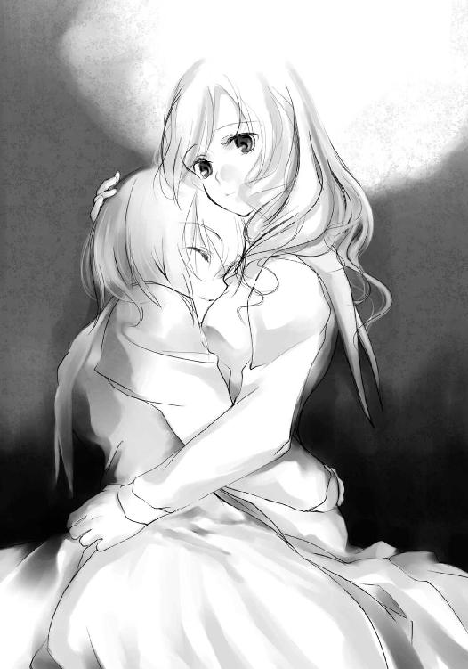
寝ぼけているのか芙未はそんなことを言って、芙未の胸に自分の頬を摺り寄せた。そのくすぐったい感触に擁子は顔をほころばせる。一時は失ってしまったと本気で思った彼女と、そして彼女との日常が自分の腕の中に戻ってきた。
泣き出しそうになるくらい、胸が痛かった。
喜びのあまり胸が痛くなるなんて知らなかった。
「芙未......先ぱ......」
「擁子、泣いてるのか......え？」
寝ぼけていたはずなのに、それには敏感に反応し、芙未は目を覚ました。そして擁子が制服姿なこと、そしてそこが図書室であることで、芙未はすぐに記憶を取り戻した。
「アタシはいったい......」
芙未は擁子の腕の中から起き上がる。確か自分は豪に足を奪われてしまったのだ。ところが、自分は目を覚まし、豪が床をのた打ち回っている。
「足が戻ってる？」
芙未は自分の部位が戻っていることを感覚として理解した。
「......奪い返してくれたのか？ お前、まさか......」
「いいんです。けど、よかった。本当に目を覚ましてくれるか、不安だったんです」
擁子自身、椎矢の言葉に従ったものの、悪魔の部位を返して目を覚ますかどうか、確証がないことはわかっていた。これはただの賭けだった。
その事実を芙未も理解した。そして同時に、擁子の不安の大きさも。
「もう心配かけないでくださいね」
「......悪かった」
目を真っ赤にしながらも何とか泣くのを堪えている擁子の頭を抱え、芙未は彼女の顔を自分の胸に押しつけた。
堪えていたものがこみ上げ、擁子は声を上げて泣き崩れた。
「椎矢、琴葉。あんたらにも助けられたみたいだね」
「いや、オレは何も」
椎矢がかぶりを振り、琴葉も同じようにかぶりを振る。
芙未を助けたのは紛れもなく、いま泣き崩れている擁子だった。悪魔の部位の能力を手に入れたこともそうだ。彼女にあんな芯の強さがあるとは思わなかった。
「うがあぁぁぁあああ！」
指の折れた右腕を押さえ、豪が立ち上がった。元々の悪魔の腕が残っているために、意識を失い、眠りにつくようなことはないようだ。だが、骨折によるショックのせいか、口の端から涎をたらし、嘔吐しそうに何度かえずいている。
芙未が擁子の背中をあやすように叩く。擁子は泣き止み、芙未から離れた。
「後始末くらいはアタシがしようかね」
「くそったれ！ くそったれ！ くそったれ！ くそったれぇぇぇえっぇぇ！」
唾を撒き散らしながら豪は叫び、近くにあった本棚を力任せになぎ倒し始める。八つ当たりか、痛みのためにただ暴れているだけか。
だがその無様で迷惑極まりない行為は、無視するわけにはいかなかった。
豪が倒そうとした本棚の近くには喜久子がいたのだ。
「危ない！」
椎矢は駆け出し、眠ったままの喜久子の上に覆いかぶさった。本棚は隣の本棚にぶつかり、途中で止まった。下敷きになることはなかったが、棚から落ちてきた本が降り注ぐ。後頭部や背中に大量の本がぶつかった。
「だいじょうぶか！」
椎矢が喜久子共々本棚の下から引き摺り出される。やはり芙未の力は自分以上だ。
「何とか」
痛みは結構なものだったが、怪我はなかった。
「椎矢、その子と琴葉を連れてひとまず保健室に行ってろ。あいつが逃げた。あの馬鹿は放っておくとろくなことにならない。きっちり片をつけてから行く」
いつの間にか豪の姿がなかった。どうやら本棚を倒しまくったのは簡単に追って来れないようバリケードにするつもりだったらしい。逃げ出した豪が改心したとはとても思えない。きっと他の誰かを狙うだろう。豪が新しい部位と能力を得れば、より厄介になりかねない。
「わかりました」
芙未たちと一時的とはいえ別れるのは心もとなかったがそんなことを言っては情けない。椎矢は力強くうなずいた。
「へっ。いい顔するじゃないか」
芙未は椎矢の頭をくしゃくしゃっと撫でた。
「しっかりするんだよ。ああ、それから」
と、芙未は最後に椎矢に耳打ちした。
「琴葉の言葉には惑わされるな。ちゃんと意思を持てよ」
「え？」
芙未は一方的にそう言うと、擁子と共に図書室を飛び出していった。
椎矢は芙未たちの背中を見送りながら、呆然としていた。
「追いかけないの？」
琴葉が椎矢の元にやってきた。芙未たちが行ってしまったのに、椎矢がここに留まっていることに不安を覚えたらしい。
「椎矢くん？」
「え？ あ、ああ。保健室で合流することにした。さすがに喜久子を連れてったら追いつかないから」
琴葉は納得したようにうなずいた。が、椎矢の様子がおかしいことに気づく。
「どうしたの？」
「え？ あ、いや。ちょっと色々あったから混乱しちまって」
確かに色々あった。混乱もしていた。だが、今一番混乱しているのは芙未の言葉だった。
琴葉の言葉には惑わされるなよ。ちゃんと意思を持てよ──
「どういう意味だったんだ？」
芙未は琴葉を疑っているということなのだろうか。
琴葉が自分を騙して何かしようとしているとでも言いたいのだろうか。
椎矢は琴葉を見て、すぐにかぶりを振った。
そんなはずはない。琴葉が自分を騙そうとしているはずがない。芙未もそういう意味で言ったわけではない。
自分の意思で琴葉を守ってやれ、とただそう言いたかったのだ。そのはずだ。
豪は鈍痛の響く右手を押さえて、西棟の廊下を走っていた。
「ちくしょう。ちくしょう」
何度も口に出して吐き捨てる。途中までうまくいっていた。悪魔の足を奪ったところまではよかった。あとは雑魚だと油断したのがいけなかった。
怪我を治す能力はないのか。そんな能力を持っている奴はいないのか。いたらそいつの能力を奪って、怪我を治すのに。
豪は誰も追ってきてはいないか、豪は後ろを振り返って見た。
何度も何度も振り返るが、後ろには誰もいない。追ってきている気配はない。どうやら追ってくる気はないらしかった。
ガツッ！
「ぎゃああああああ！」
後ろを向いて走っていたせいで、豪は壁にぶつかってひっくり返った。衝突したときに折れた右手をもろにぶつけてしまい、激痛にのた打ち回る。
「くそぉっ、どこまでツイてね......」
豪は忌々しげにぶつかった壁を睨みつけようとし、呆然とした。
自分がいたのはまだ廊下の途中。
目の前には壁はおろか、障害物も何もなかった。
豪はゆっくり立ち上がって、無事な左手を前に出してみる。と、何もないはずなのに、透明なガラスに触れたかのような感触を手が覚えた。
「あ......あ......」
豪はわなわなと震えながら、周囲を見渡した。
曲がり角から、芙未と擁子がゆっくりと出てきた。
「い、いつの間に......」
「ついさっきだよ。上から先回りさせてもらっただけだ」
学校の中なら先回りすることなど容易な話だ。二階の廊下を、怪我をして、さらに後ろを気にしながら走っていた豪。一気に一階まで階段を駆け下り、廊下を駆け抜けた芙未と擁子。どちらが早いかは明白だ。
豪が廊下にへたり込む。痛みと疲労でもう抵抗する力は残っていなかった。
「随分と舐めた真似してくれたよな？」
擁子は障壁を開放し、芙未と擁子が豪に近づいてくる。
「ま、待てよ。待ってくれよ！」
豪が両手を前に出して、近づいてくる芙未に待ったをかけて落ち着かせようとする。
「だってしょうがねぇだろ？ 奪わなきゃ死ぬんだ。奪おうとしねぇほうがおかしいだろう？ お前らと違って、俺は一人だったんだ。頼る奴もいないからそうするしかなかったんだ。もうしねぇから。全員で戻れるように何とかするんだろ？ 協力するからよ」
都合のいいことを言って、豪は身の安全を図る。
「この状況下で奪うということは、殺すと同等なんですよ」
芙未を奪われかかった擁子が、軽蔑した目で豪を見下ろす。
「だから俺だって好きで奪ったんじゃねぇ。そうするしかなかったんだ。お前だって俺から足を奪っただろ！」
奪ったのではなく、奪い返したのだ。
それは似ているようで、天と地ほどの差がある。
だが豪にそんなことを言っても通じるはずがない。
芙未が擁子を後ろに下がらせ、代わりに豪の前に立つ。
「......確かにこんな状況だ。奪おうと、いや、殺そうとしたっておかしかないだろうさ」
「だ、だろう？」
「だけどな──」
芙未はしなるように足を持ち上げ、
「──だったら、殺される覚悟もしろよ」
今度は確実に豪の側頭部を蹴り抜いた。
第五章 真実と虚言
西棟三階にある生徒会室には三人の生徒がいた。
悪魔の心臓の所持者にして、生徒会長の進堂真。
悪魔の脳の所持者にして、副会長の紗々木智事加。
悪魔の血の所持者にして、書記の京部創那。
目の前には争奪戦のルールを記す闇色の悪魔の言葉、自身の体には悪魔の部位、そしてすでに契約を終え、手に入れたその能力。
悪魔の部位の持ち主であるならば、これが現実であることはわかる。現実から目を逸らすなど時間の無駄でしかない。
真っ先に認め、そう言ったのは真だった。真が信じるのであれば、智事加に疑う理由はなかった。創那にしてもそれは同じだった。
「それでは会議を始めるとするか」
智事加と創郡を前にし、真が壇上に立った。
「会議？」
「生徒会としては、このふざけた状況を打破する手段を講じねばなるまい。有事に動かずに、何のための生徒会だ？」
「仰る通りです。このようなときだからこそ、我々は動かねばならないのですよ」
智事加が真に賛同し、創那の言動をたしなめる。
「こんなときだからこそ、ね。責任感のお強いことで」
「他人事のように言うな。書記のお前にも働いてもらうぞ」
「書記の仕事の範疇内ならね」
「我が生徒会の書記は、有事のときには解決策の実行部隊として働くことになっている」
「そいつは初耳」
「いま決めたからな」
「わー、唯我独尊」
「会長は全生徒のために行動されています。唯我独尊という言葉は当てはまりません」
「僕は全生徒の一人に入らないの？」
「入りません」
「言い切られちゃったよ」
真は苦笑するように鼻を鳴らすと、すぐに表情を改め、
「では対策会議を始める」
智事加と創那に告げた。他の生徒会メンバーは目の前で消えてしまった。三人だけの会議など初めてではあるが、真にとっては両腕の二人がいれば問題なかった。
「悪魔の言葉は真実であるという前提で話を進める。異存はないな？」
「ありません」
「ないけどさ」
と、智事加と創那。
「まず最優先されるのは十二人の身の安全だ。十二人が全員無事に元の世界に戻れるよう手を打たねばならん。智事加、この状況をどう考える？」
智事加は「はい」と返事をして、真に回答する。
「悪魔伝承はお話する必要はないと思いますので割愛させていただきますが、この土地に我が校を創立するとき、ある事件が起きました。悪魔を封じた巫女と、十一人の神仏関係者の末裔が慰霊祭を行ったのは有名な話ですが、そのときその十二人が行方不明となったのです」
「そんなのあったの？ 知らなかった」
創那が言うと、智事加は話の腰を折られてじろり睨む。
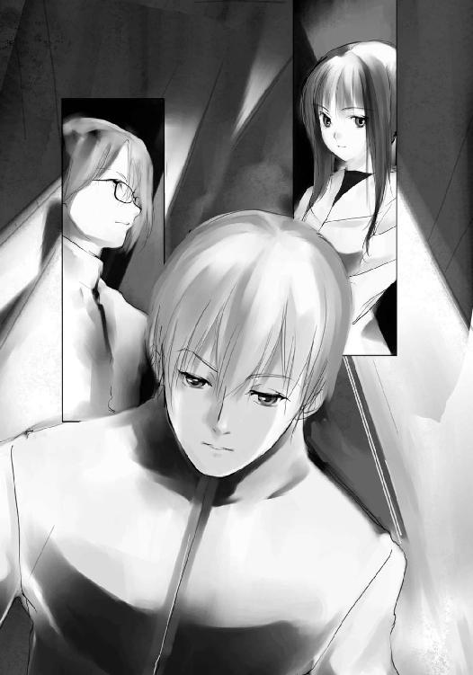
「十二年前の新聞に一度載りました」
「小学生なのに新聞読んで、覚えてたんだ。すごいね？」
創那の褒め言葉に智事加は反応せず、話を先に進める。
「その十二人はどこを探しても丸一日見つからなかったのですが、次の日、一人だけ発見されたと聞きます。結局その一人も常軌を逸していて、行方不明中のことは何も聞けず、他の十一人も結局見つからなかったということです。学校の資料室へ行けばこの話が載っている資料があります。会長もすでにこの話はご存知のことと思いますが、この状態はそれに類似しているように思われます」
真は智事加の説明にうなずいた。
「同意見だ。付け加えるとすれば、その発見者は我が校の創立者である刀納依誠一氏だ」
「真も知ってるんだ？ え？ 知らないの僕だけ？」
「少しは勉強なさってください。この学校の生徒会役員であるならなおさらです」
知っていて当然とばかりに智事加は切って捨てた。
「ということだ」
真は創郡に教えるために智事加に話させたのだろう。
「では智事加。現在他の九人の行動をどう予想する？」
智事加は悪魔のメッセージに視線を一度移す。
「この内容を我々だけでなく、他の九人も知ったと仮定すれば、十二の部位を集めた者が元の世界に戻れるという条件の下、他者の悪魔の部位を奪いにかかると考えられます。いえ、すでに始まっていることでしょう」
「そうかなー？ むしろ皆で手と手を取り合って助け合ってるとは考えられない？」
「全員が信頼関係で結ばれているのであれば、それもありえるでしょうが、期待はできません。状況は常に最悪を想定して動くべきです」
「悲観的なんだね？」
「あなたが楽観的すぎるんです」
智事加は取り付く島もない。
「では争奪戦が行われるとして、どう動く？」
「生徒会としては全員の安全を考え、先頭に立ってこの争奪戦を止めるべきと考えます」
「ではどう止める？ この状況下で生徒会という特権に効力があるとは思えん。争奪戦に乗るような馬鹿であればなおさらだ」
「その場合はやむおえません。武力行使で押さえます」
「全員の安全はどこに行っちゃったの？」
「話し合いで解決しないのであれば、武力行使も一つの手です」
「話し合いで無理なら、武力行使ってわけね。どっかの大国みたい」
智事加はきっと創那を睨みつけた。
「いや、それで正解だ」
真が智事加の案を肯定する。
「保護を優先するが、拒否、および抵抗にあった場合は奪って構わん」
「奪う、のですか？」
智事加の武力行使に、奪うという意味は含まれていなかった。あくまでも取り押さえる程度の考えだった。
「あらら。ホントに安全無視？」
「いや。これがもっとも安全だ。生徒会としての方針はあくまで、十二人全員で無事に元の世界に戻ることだ」
「それなのに奪っちゃうのは？」
「簡単な話だ。十二の部位を集めた者が、全員で元の世界に戻れるよう願えばいい。悪魔の部位を揃えた者の願いは聞き届けられるのだからな」
「なるほどね」
創那が納得してうなずく。
争奪戦の勝者だけが助かるという見方をしていたが、願いを叶えられるという特権を利用すれば、争奪戦に勝利することで全員が助かることも可能だ。
「全員を救うためだ。一時的な犠牲は許容範囲だ」
「さすがです、会長」
案は同じであっても考え方が違った。真の考えは智事加は思いつかなかった。
「もっとも勝者がそれを願うことが前提だ。私利私欲に目が眩むような奴に争奪戦に勝たれてはこの案は意味がなくなるがな」
「真は私利私欲には走らない人？」
創那が意地の悪い質問を投げる。
「あいにく悪魔に叶えてもらわずとも、俺は俺自身の手で願いを叶えられる」
「傲慢だねー。僕は叶えてもらいたい願いがあるかな」
「何だ？ 言ってみろ？」
創那は智事加を横目で見て、手を組んで願うふりをする。
「悪魔さん悪魔さん、智事加さんが僕を好きになりますように」
「あいにくとそれは神にも悪魔にも叶えられません」
「撃沈〜」
創那は机に突っ伏した。
「創那よ、この場合、適任者はどういった人間だと思う？」
誰だとは問わず、どういった人物と真は問う。創郡は突っ伏した机から顔だけ上げ、笑みを交えて言った。
「心臓に毛の生えたような奴だろうね。おっと失言失言。冗談だよ。......そうだね、この場合最も適した人間は、ブライドの高い奴かな？」
「その通りだ」
十二の部位を手に入れ、全員で元の世界に戻ることを願える人間。
それは優しい人間などではない。欲がない人間でもない。ましてや聖人君子などではない。
どんな願いでも叶えられるという条件下で、今この場にいる十二人を元の世界に戻すという、ただそれだけの願い。
それはどんな願いと言えるのか。
ある意味、十二人全員のための公正な願いと言える。
ある意味、わずか十二人のための利己的な願いとも言える。
自分一人の私利私欲の願いを叶えるのではなく、全人類の平和という願いを叶えるのでもない。
わずか十二人が元の世界に戻るという、ただそれだけを願えるのに適した人物。
それは十二人を元の世界に戻すという願いに対し、強いプライドを持ち、硬い決意を持ち、何物にも揺るがされない意思を持てる人物。
「智事加、それは誰だ？」
「会長をおいて他にはいません」
智事加が迷いなく、断言した。
「そのときが来れば、私は会長に悪魔の部位を捧げることをここに誓います。保護した者も賛同し、会長に悪魔の部位を捧げることでしょう」
真は力強く、首肯した。
「生徒会としての方針を決定する。
我々生徒会はその特権を用い、校内にいる者を保護する。拒否された場合、あるいは抵抗された場合は悪魔の部位を奪って構わん。そして最後に俺が十二の部位を手に入れ、願おう。全員で元の世界に戻ることを！」
真は智事加に命令する。
「智事加、まずはお前が校内を回り、生徒の保護に向かえ」
「はい」
智事加は恭しく首肯すると、すぐさま生徒会室を出て行った。
その背を見送りながら、創那が椅子の前足が持ち上がるほど後ろにもたれ、机の上に足を置く。智事加がいると怒られるので決してしない。
「かわいいなー、智事加さんは。真の考えに感涙しちゃってたんじゃない？」
「泣いてはいなかったぞ」
「たとえだよ。たとえ」
「どうせお前も同じ意見だっただろう？」
真は先程の案を、創那が考えついていたことを見抜いていた。創郡が言わなかったのは、自分の提案では智事加が反発するのが目に見えていたからだ。
「智事加さんは真のためにしか動かないからね」
「嫌われるようなことをするからだろう」
「愛してるなんて言われたくないじゃない？」
「マゾが」
「失礼だなー。手に入れたものには興味がないだけさ」
創那がからからと笑った。
「で、僕に対する命令は？ 残したってことは何かあるんでしょ？」
「もちろんだ。休みを与えるほど俺はお人好しじゃないぞ」
「知ってるよ。君とお人好しなんて言葉が結びつかないことくらい。書記は最前線で実行部隊だもんね。一人なのに部隊とはこれいかに」
「部隊並みの働きをすればすむ話だ」
「なーるほど」
創那は肩をすくめ、真に命令の伝達を促す。
「まずは智事加の後を追ってサポートしろ」
「ええー。僕がついていったなんて知ったら、プライド傷ついちゃうよ」
「もちろん見つからないようにだ。見つかった場合は、お前が勝手に行ったことにしろ」
「ひどいなー。僕一人悪者？」
「秘書とはそういうものだ」
「いつから秘書なんて肩書きまでついたの？ 今からね？ 言わなくてもわかってるから。真はきっとすばらしい悪徳政治家になれるよ」
「そのときも秘書として雇ってやる。役に立ったらな」
「はいはい。それじゃ就職活動してきますか」
「慌てるな。お前には他にもやってもらうことがある」
「まだあるの？ 僕は一度に二つも三つもできないよ。自分不器用ですから」
誰かの物まねをしたようだが、真は完全に無視して、追加の命令を伝える。
「校内にいる者すべてにお前の血をつけてこい」
「はいはい」
「奪われて眠っている者にもだぞ」
「......人にはあんな前提とか言っておいて、そういうこと言うわけね？」
真の真意を察し、創那が笑みを色濃くする。
真、創那、智事加はすでにお互いの悪魔の部位と能力を伝えてある。創那の能力に対し、真は使い道を思いついたようだった。
「お人好しじゃないと言ったはずだぞ」
真は窓に浮かんだ闇色の悪魔の言葉を睨み、失笑した。
「それから、わかっているな？」
「わかってるよ。僕か君のどっちかだね。じゃ、行ってくるよ。智事加さんに追いつけなくなっちゃうからね」
創那はそう言って、教室を出て行った。
「......創那だったか」
真が呟いた。
智事加と創那を別々に教室から出そうとしたのはもう一つ理由があった。
それは先程から感じている視線だった。
二人は視線を感じていた。誰かに見られている。それが本当の目なのか、それとも悪魔の眼なのか、それともまったく別のものか、予想はつかないが。
誰が見られているのか知るには別々に行動する必要がある。そしてその視線は智事加が去っても離れず、創那が去った後にはずれた。つまりその視線の持ち主は創那を見ていたということだ。
「貴様の狙いは何だ？」
すでに離れた視線の持ち主に向かい、真は静かに呟いた。
時刻はもうすぐ午後八時になろうとしていた。
図書室を離れた椎矢と琴葉は喜久子を運ぶために、保健室に向かっていた。
「だいじょうぶかな、芙未先輩たち」
琴葉が二人の走っていったほうを振り返り、心配そうな声を上げる。椎矢も同じ気持ちであり、追いかけたくもあったが、今は喜久子を保健室に運ぶことを優先した。
保健室で合流する約束は取りつけている。今は、だいじょうぶだと言い切った芙未を信じるしかなかった。
「とにかく喜久子を保健室に連れて行こう」
いくら喜久子が軽い女子といえ、椎矢の体中の筋肉がそろそろ悲鳴を上げている。冷たい言い方だが、今の喜久子は足手まといだ。時間も限られている。保健室のベッドに寝かし、自分たちは別行動を取るべきだ。
「椎矢くんもだいじょうぶ？」
「ああ」
いくら体力的にきつくても、弱音を見せるのはブライドが許さなかった。ただの見栄でしかないが。保健室へはもうそれほど遠くはない。我慢できる距離ではある。
「っと」
と、それが油断につながったのか、椎矢が少しだけバランスを崩す。琴葉が慌てて支えるが、椎矢は「ちょっとつまずいただけだ」と平気なふりをした。膝に来ているのがわかる。
琴葉が気遣ってハンカチで汗を拭ってくれる。十二月にも関わらず、椎矢は汗でびっしょりと濡れていた。汗を拭いている琴葉が、椎矢がどれだけ疲れているかをわかっている。
「椎矢くん、代わるよ」
琴葉が椎矢にそう持ちかけた。
「......じゃあ、少しだけいいか？」
さっきまでのプライドも見栄もどこへ行ったのか、椎矢は素直に琴葉に喜久子を預けることにした。落とさないように注意して背中から喜久子を下ろし、おんぶしようとかがんでいる琴葉の背中に喜久子を乗せる。まったく力の入っていない人間を背負わせるのはかなりの重労働だったが、何とかうまくいく。
「あっ」
だが見るからに力がない琴葉は、椎矢が手を離した途端に前のめりに倒れそうになった。椎矢が慌てて琴葉を支える。
「だいじょうぶか？」
「ご、ごめんね。ちょっとバランス崩しただけだから」
琴葉は喜久子をしっかりと支えて立ち上がろうとするが、少し腰を浮かせるのがやっとだった。
「やっぱりオレが運ぶよ」
椎矢は琴葉の背中から喜久子を下ろし、もう一度自分で背負うことにした。
「ごめんね」
「いいよ。気にすんな」
むしろなぜ琴葉に任せようなどと考えたのが椎矢は不思議でならなかった。琴葉が喜久子を運ぶことなど無理だとすぐにでもわかるはずなのに。
いくら疲れていた上に、琴葉自身から申し出てくれたとはいえ、バカなことをしたものだと椎矢は思った。
だが、ついさっきはなぜか素直に任せていいかと思ってしまったのだ。随分と弱気になっているものだ。
「少し休んだほうが......、でも休まないほうがいい？ 椎矢くんはどっちがいい？」
「......とりあえず保健室までは運ぶよ。休むのはその後にする。あと少しだから、大したことないよ」
椎矢が自分を奮い立たせるように言って歩き出すと、琴葉はうなずき、後ろから喜久子を少しでも軽くなるように支えてその後に続いた。
「ねぇ、椎矢くん聞いてもいい？」
「ああ、何？」
「自分の能力ってどうやったらわかるの？」
予想外の問いに、椎矢は思わず琴葉を見た。琴葉の顔は会話の間を埋めるようなものではなく、真剣そのものだった。擁子の言葉がよみがえる。役に立っていないことを負い目に感じているかもしれない、と。
別に能力なんて知らなくてもいいと言おうと思ったが、琴葉の真剣な顔に適当にごまかすようなことは言えなかった。
「芙未先輩たちがいたときにも言ったけど、変な黒いのと契約みたいなのをしたんだ。オレはそういうつもりじゃなかったんだけど」
「でも、その後もよくわからなかったんだよね？」
「ああ。何となくわかったのは、琴葉の口が光って見えたのがきっかけだよ。それで相手の部位が光ってるんだってわかったんだ」
悪魔ノ眼ハ、悪魔ノ部位ヲ見抜クコトガデキルヨ──
確かにあの黒い何かと契約したときにそんな言葉を聞いた気もする。だがそれが何を意味するかなど、あのときはよくわからなかった。空亜との会話がなければ、未だにそれが自分の能力だと気づいていなかったかもしれない。
ただ理解する前に視えていたということは、図書室で芙未も言っていたが、能力はわかっていなくても使えるものなのかもしれない。
「ただ能力って言っても大したものじゃないぞ。眼鏡してると光は遮られたみたいに見えなくなるし......」
「そうなの？」
「ああ。芙未先輩の足と擁子先輩の胸は眼鏡をずらして視たからすぐわかったけどな。盗み見たみたいでなんか悪いことしたな。あ、ただその......変な目で見てたわけじゃないからな。掛衣先輩のこともあるし、必要に迫られてだな、戦略というか......保険というか......」
足だの胸だの見ていたという自分の発言が誤解を生むことを恐れ、椎矢が必死に言い訳している姿がおかしく、琴葉は小さく吹き出した。
「何だよ？ 人が説明してやってるのに」
「あ、ごめんなさい」
「でもさ」
椎矢は少し言葉を選ぶように、静かに言う。
「誰かの部位を奪うための能力なんて、なくてもいいと思う」
椎矢の能力は視る能力。擁子の能力は守る能力。だが豪の能力は明らかに奪うための能力だった。それに椎矢にしても擁子にしても、使い方によっては相手の部位を奪うために役に立つ能力だ。使い方次第の部分もあるが、普通の人間としては不必要な能力だ。
「その、能力なんてなくても、オレがさ......」
「え？」
「......いや、やっぱいい」
椎矢は言いかけた言葉をごまかし、前に向き直った。
「動かないで」
そのとき、静かな、だが鋭い女性の声が響き渡った。
声はドア越しに聞こえた。待ち伏せされていたのだろう。廊下には注意を払っていたが、教室の中の気配までは気にしていなかった。隠れるには最適な場所であるはずなのに。
自分の不注意に歯噛みしながらも、椎矢は対抗策を思案した。
今はまだ悪魔の部位に触れられてはいない。まだ奪われる恐れはない。
だがそんな椎矢の考えを見抜いたかのように、ドア越しに宣告された。
「逃げたら奪うわよ。わたしはドア越しでも奪えるから」
「............」
本当なのか、それともただのハッタリなのか。直接触れなくても奪える『腕』の能力がある以上、そういうことも可能かもしれない。
だがこの相手は自分たち悪魔の部位かわかっていないはずだ。わからなくて奪えるものなのだろうか。それともすでにわかっているのか。
椎矢はカマを掛けてみることにした。
「ドア越しで奪える？ 奪えるもんなら奪ってみろよ。オレの悪魔の腕を」
「......いいわ、奪ってあげる」
やはりわかってない──
椎矢がハッタリだと見抜きかけたとき、
「奪うのは、腕じゃないけれど」
「！」
「そんなことでカマを掛けたつもり？ やめなさい。自分の命をそんなふうに簡単に賭けるのは」
相手は自分の悪魔の部位を見抜いている。その上で奪うと言っている。ハッタリだと思っていた少女の言葉が、現実味を帯びてきた。
「次にそんな真似したら奪うわよ」
椎矢の背中に嫌な汗が流れた。
「それじゃ、これから質問をするわ。素直に答えなさい」
主導権は完全に向こうだった。とりあえず逆らうわけにはいかない。
「まずはあなたたち二人の名前を答えなさい。そうね、能力もあるなら答えなさい」
悪魔の部位を聞かないということは、やはりわかっているのだろう。自分だけでなく、琴葉のもだ。悪魔の眼以外にも、相手の部位がわかる能力があるのかもしれない。そういえば、空亜の持つ悪魔の鼻もそういった能力だった。
だが椎矢たちが三人いるにも関わらず、
「二人」とドア越しの少女は言った。
おそらく、悪魔の部位を持っていない喜久子の存在に気づいていないのだろう。つまり彼女にはこちらが見えてはいない。
しかし彼女の狙いは何なのだろうか。
悪魔の部位がほしければ有無を言わさず奪えばよかった。争奪戦を行いたくなければ、やり過ごせばよかった。だが彼女は声を掛けてきた、それはなぜか。
その能力でいつでも奪えると思っているから。
情報がほしかったから。
仲間がほしかったから。
答えを出すには判断材料が少なすぎる。だが相手の狙いがわかれば、付け入る隙があるかもしれない。今は素直に従う他ない。
椎矢は琴葉を見た。琴葉はかまわないというようにうなずいて見せた。
「オレは朽木椎矢。能力はオレが相手の部位を視抜く能力だ。もう一人は円夜琴葉。能力はまだない」
「............」
沈黙が降りる。
「嘘じゃない。あんたがどうか知らないけど、こいつが能力がわかってないのは本当だし、そんなのは別に普通のことだ」
「嘘かどうかはわたしが判断するわ。まあ、嘘は言っていないようね」
椎矢は胸を撫で下ろす。本当のことを話しているのに、嘘をついていると思われ、奪われたのでは割に合わない。もっともどんな形だろうが、奪われて割に合うことなんてないが。
「次の質問よ。これまで会った人間の名前とその部位を答えなさい」
「それは......」
椎矢は他人の情報を流すことに躊躇いを覚える。相手の部位を知られることがこの争奪戦では不利に働くことは言うまでもない。
「言わなければ奪うわよ」
「......『胸』の所持者の黒百合、『鼻』の所持者の掛衣先輩、『腕』の所持者の甲斐谷先輩、『足』の持ち主の有栖川先輩だ」
椎矢は名前と所持者をわざとずらして答えた。ここにいない人間の部位なら、嘘をついたとしてもわからないはずだ。
だが──
「嘘は許さないと言ったはずよ」
その嘘もあっさりと見抜かれた。
なぜわかったのか。嘘とわかる挙動があったのだろうか。そんなつもりはなかった。相手が旧知の間柄で癖がわかっているとか、相手が心理学者で面と向かって観察されていたとか、そんなことでもない限り、簡単に嘘を見抜けるはずがない。
だが現実に嘘を見抜かれている。
悪魔の部位の能力か。いや、彼女の言葉を信じるなら、能力はドア越しでも奪えるようなもののはずだ。だが今までの会話から予想されるのは、相手の言葉の真偽を見極める能力、あるいは心を読む能力だ。
一つの部位に一つの能力かどうかは知らない。だが一つの部位に一つの能力と仮定すれば、二つの部位を持っているということになる。すでに誰かの部位を奪っているのか。
それともやはりドア越しでも悪魔の部位を奪えるというのはハッタリか。
だがやはり決めつけるには判断材料が少なすぎる。考える時間も与えてはくれない。再び質問が投げかけられる。
「他に会った人はいないの？」
「？」
質問の内容が変わっていた。いや、まるで最初から悪魔の部位ではなく、誰と会ったか尋ねたかったかのようだった。
「誰か探してるのか？」
「っ！ あなたには関係のないことよ！」
少女は過敏に反応した。質問の仕方を間違えたことに気づいたのだろう。
だがこれで声を掛けてきた理由がわかった。探している誰かの情報がほしかったのだ。
「もう一度聞くわ。これまで会った人間の名前とその部位を答えなさい」
少女は今度は間違えないように、質問を繰り返した。理由がわかったところで、状況の打破にはつながらなかった。
椎矢は舌打ちし、逡巡した。
悪魔の部位を教えたところで、奪われるわけではない。そんな言い訳めいた感情が芽生えてくる。
だが要求されている情報は、この世界では命に関わる情報だ。
そんなことを話していいのか。自分が助かるために、他人を売ることが許されるのか。
椎矢は思わず琴葉を見た。琴葉は椎矢のことを下から見上げている。その表情は心配そうに翳っている。
もしここで自分が答えなければ、自分だけではなく、琴葉も奪われるだろう。
それは選びようのない選択。
だが琴葉はそんな椎矢の苦悩を察したように、袖を軽く引き、うなずいた。
「椎矢くんの思う通りにして」
琴葉は自分が奪われることを心配しているのではなかった。苦悩している椎矢を心配していたのだ。
心は決まった。心が軽くなったような気がした。
「それは言えない」
くだらないと言われるかもしれないが、プライドが許さなかった。他人を見捨ててまで助かる道を安易に選びたくはなかった。それでは豪と同じだ。それが嫌だったから、自分は全員で助かる方法を探そうとしているのだ。
それなのにここで逃げてしまっては、全員で助かる方法なんて見つけられやしない。
今のこの状況はこれからの困難に比べれば、小さいものだ。まだ他に取るべき道が残されているはずだ。
「どうして言えないの？ 他人の部位を教えるだけでしょう？」
「......確かに他人だけど、それでも教えられない。それにオレが会った中にはクラスメイトだっている」
「いいじゃない？ クラスメイトくらいどうなっても」
「どうなってもいいわけないだろう！」
彼女の物言いに腹が立った椎矢は、思わず強い口調で言い返した。
他人の秘密を守るくらい当然のことだ。それも命に関わる情報だ。だが彼女は赤の他人どころか、クラスメイトの情報を売ることすらどうでもいいことと言う。
それが椎矢には腹が立ってしょうがなかった。
「わかっているの？ 元の世界に戻れるのは、悪魔の部位を全て集めた一人だけなのよ。結局は見捨てることになるのよ」
「......そうならないように、オレたちは今、全員で元の世界に戻れる方法を探してる」
「え？」
「あんたがどう思ってるか知らないけど、いや、あんただって誰か探してるんだろ？ その人と一緒に帰るんじゃないのかよ。あんたはその人を見捨てて一人で戻る気なのか？ それとも奪うために探してるのか？ まあ、どうでもいいさ。オレは全員で戻る方法を考える。探してみせる。手がかりは掴んだんだ。何とかしてみせるさ」
椎矢は偽りも誇張もなく、素直な気持ちをぶちまけた。
と、ドア越しの少女が明らかに声のトーンを変え、改めて聞いてきた。
「もう一つだけ、答えて。あなたは他人の部位を奪う気はないのね？ 嘘は許さないわ。私は相手の嘘がわかるのよ」
やはりそうだった。だから嘘に関しては筒抜けだったのだ。悪魔の部位がどこかなどわかっていないのだろう。悪魔の腕の所持者という嘘を見抜いただけで。
それに嘘は見抜けるが、素直に話したかどうかはわからないようだ。喜久子のことを話さなかったときは何も言わなかった。
悪魔の部位をドア越しに奪えるというのも、やはりハッタリなのかもしれない。
しかし今はそんなことは関係ない。
これに関しては嘘を言うつもりなどない。
椎矢は深呼吸を一つして、答えた。
「奪う気はない。ただ──」
椎矢はよく言葉を選んで答えた。
「クラスメイトの部位は取り返す。それが奪うことになるっていうなら、そうなるんだろうな。でもそれ以外は奪う気はない」
「......本当のようね」
脅迫は警戒によるものだった。ドア越しの少女は椎矢が悪魔の部位を奪う気がないとわかると、ドアを開けて廊下に出てきた。
その女子生徒に、二人は見覚えがあった。
ついさっき図書室の閲覧情報で擁子に見せてもらった女子生徒。最近は登校拒否で学校を休んでいたにもかかわらず、今日に限って登校してきた少女。そしてあの悪魔伝承の資料を全て読み漁っていた女子生徒。
音無千代だった。
ショートボブの髮をした少女だった。閲覧情報で見たときは長い三つ編みの髪だったはずだが、擁子の言う通り、今は短くなっていた。それに髪の毛の色も青みがかっている。髪の色を除けば真面目そうな少女だった。だが、眼鏡の奥から覗く目はややきつい印象を与えていた。
と、その目が何かに驚いたかのように、大きく開かれていく。
その視線の先は、椎矢ではなく、その背中にいる喜久子だ。
「？」
千代は喜久子がいることを知らなかった。二人しかいないと思っていた。だから驚くのも無理はない。だがそういうのとはまた違った驚きに見えた。
奪われ、眠りについているその姿を驚いているのか。
だが椎矢の頭に浮かんだのはまったく別の考えだった。
相手の言葉の真偽がわかる能力＝相手の嘘を聞き分ける能力
もしそうだとしたら。
椎矢は眼鏡をずらし、千代の『耳』を視ようとした。
そこは光っているのか。
千代は悪魔の耳を所有しているのか。
だが椎矢が千代の耳を視るより前に、千代は踵を返して逃げ出した。
「待て！」
椎矢が叫ぶが、当然待つはずもない。
「琴葉、追うぞ」
「え？」
「あいつが喜久子の部位を奪った奴かもしれない！」
椎矢は走り出し、琴葉がそれに続く。千代はそれほど足が速くなかった。だが背中に喜久子をおぶったハンデがある分、すぐに追いつくことはできなかった。加えて、すでに体力を消耗している。
結果、千代との距離は少しずつ広がっていった。
喜久子を降ろしていこうかと考えた椎矢だが、仮にそうしたとしても、琴葉は今の椎矢にすらついていくのがやっとのようで、必死になって走っている。喜久子を降ろしたところで、距離は縮まらないだろう。
琴葉と喜久子を置いていくことはできない。
だがこのまま千代を逃がしてしまうわけにもいかない。
喜久子の部位を持っていることもそうだが、元の世界に戻る手がかりを握っているかもしれないのだ。
「椎矢くん。あたしとキクちゃんを置いて先に行って」
と、椎矢の葛藤を見抜いたかのように、琴葉が言った。
「早くしないと見失っちゃう！」
先程までの葛藤は消え、すぐに結論が出た。
椎矢は喜久子を背中から降ろして床に寝かせる。
「もし誰か来たら喜久子を置いて逃げろ。もしはぐれたら保健室で合流だ」
「うん」
「すぐに戻ってくる」
心配がないと言えば嘘になる。だが今はそんなことを言っている場合ではない。椎矢は後ろ髪を引かれる思いでその場を後にした。
椎矢は乳酸が溜まりまくっているだろう足を叱咤し、廊下を駆けた。前を走る千代との距離は詰まっている。
絶対に追いつかなければならない。
喜久子の部位を取り戻さなければならない。そしてこの争奪戦の手がかりを知っているかもしれない彼女に、問いたださなければならない。
千代が廊下の角を曲がって東棟から南棟に入る。椎矢もわずかに遅れて角を曲がる。
「！」
千代の姿はなかった。
椎矢は周囲に視線を走らせる。と、窓が開いているのに気づく。
椎矢は窓のほうに駆け寄る。
窓の外には縁の部分を渡っている千代の姿がある、わけではなかった。
ガラッとドアが開かれる音がした。
慌てて振り返る椎矢の眼に、椅子を振り上げて突進してくる千代の姿が映った。椎矢は咄嗟に腕で頭を守る。
千代はその椎矢に向かって椅子を思い切り叩きつけた。
「がっ！」
腕に衝撃と激痛が走り、椎矢は思わず悲鳴を上げる。
第二撃が来るかと思ったが、椅子は放り捨てられ、千代はまた逃亡を開始した。椎矢は腕を何度か振ってみる。痺れと痛みはまだ残っていたが、骨折などの怪我はなさそうだった。擁子の話ではいじめられて不登校になっていたと聞いていたが、とてもそんな感じには見えなかった。俗に言うキレたら怖いというやつだろうか。
が、そんなことを言っている場合ではない。
椎矢はすぐに千代を追いかけ始めた。
さっきの攻撃の後に眼を奪おうとしなかった。調子付いてそのままもう一度椅子で殴りかかられていたら、逆に何とかなったかもしれない。
落ち着いているのか、いい意味で臆病なのか。とにかく警戒が必要だ。
「........................」
走りながら何をやっているのだろうと思う。
同じ学校の生徒同士で、今度は逃走劇と追走劇だ。初めて会ったような人に椅子で殴りかかられ、それを警戒しながら自分はその相手を追いかけている。
それでも立ち止まるわけにはいかない。
千代がまた廊下の曲がり角を曲がり、今度は西棟に入る。
椎矢もやや遅れて角を曲がると、さっきと同じように千代の姿はなかった。
今度もご丁寧に廊下の窓が開けられている。
椎矢は今度はまず教室のドアを開けた。千代の姿はない。すぐに後ろを振り向くが、今度は攻撃も来なかった。窓の外に顔を出してみるが、もちろんそこにも千代の姿はない。慌てて窓から顔を引き抜くが、やはり千代の攻撃はなかった。
と、椎矢の眼に階段が映った。階段のところまで行くと、反響した足音が聞こえた。
「くそっ！」
今度はここに留まらずに逃げたのだ。完全に手玉に取られている。
椎矢は階段を三段飛ばしで駆け上がり、三階に向かった。あまり琴葉たちと離れるのは得策ではない。早く追いつかなければならない。
三階に出た椎矢は左右を見渡した。
かろうじて南棟に戻っていく千代のスカートが見えた。
椎矢は急いでその後を追って、曲がり角を曲がり──、今度は慌てて止まった。千代は廊下の途中で今度は逃げずにその場に留まっていた。
激しく肩が揺れている。このまま逃げてもいずれ体力が尽きて追いつかれると思ったのか。正直ありがたかった。椎矢の持久力もかなり切れかけていた。
しばらく荒い呼吸音だけが響いていた。それに割り込ませるようにして、何とか椎矢が問いかける。
「音無先輩、あんた......」
「さっき言った人たち以外で他の誰かに会った？ 悪魔の部位は答えなくていいわ。それなら答えられるでしょ？」
いきなり機先を制するような問いかけに、椎矢は眉をひそめた。
「先輩の質問に答えられないの？」
「......会ったのは、さっき言った人たちとオレが背負ってた賀来って奴だけです」
千代はそう、と小さく呟いただけだった。どこか落胆しているようにも見える。やはり誰かを探していたようだ。そしてさっき言った中にはその人はいなかったのか。
「いったい誰を探してるんですか？」
「わたしが人を探すのがそんなに意外？ わたしにはそんな相手もいないように見える？」
何か気に障ることを言ってしまったのか、ますます千代の顔が険しくなる。
「いや、別にそういうつもりで言ったんじゃないですけど」
千代も変に突っかかってしまった自分を恥じるように、目を逸らして取り繕う。
「わたしの名前を聞いたのは、有栖川さんからよね？」
否定は無意味だったので、椎矢は素直にうなずく。
「どうしてわたしの名前が出たの？ 別にそんな親しい間柄ってわけでもないんだけど」
「さっきも言いましたけど、オレは全員で元の世界に戻れる方法がないか調べてるんです。それで擁子先輩たちと図書室で悪魔伝承について調べてたとき、その資料を読んでいた生徒に音無先輩の名前があったんです」
千代がぴくりと反応を見せた。椎矢はそれを見逃さず、追及する。
「先輩はどうして今日、悪魔伝承の資料を見てたんですか？」
「何かおかしい？ 悪魔伝承に興味を持つのはこの学校の生徒なら普通のことでしょう？」
「今になって？ 二年生なんだから今まで読む機会がいくらでもあったわけでしょ？ それなのにどうして今日だったんですか？」
「創立記念日だったから」
とぼけるつもりらしい千代だが、椎矢は逃がすつもりはない。
「......こんなこと言いたくないですけど、学校を休んでたんですよね？ それなのに今日だけ図書室に来て、悪魔伝承の本を読んでいくなんて、理由があるとしか思えない」
「そんなことまで聞いてるのね」
千代は観念したように、嘆息して答えた。
「......理由ね。ないわけではないわ」
「どんな理由ですか？」
「ねえ、こんな状況になる前に、あの悪魔伝承が本当の話だと思っていた？」
「え？」
逆に質問で返されたが、答えたほうが早いと思い、椎矢は答えることにした。
「正直思ってなかったですよ。ただの作り話か、それとももっと現実的な話を誇張した話くらいにしか」
「わたしもそう思ってたわ。昨日まではね」
千代はそれだけ答えて、踵を返してまた逃げ出そうとした。
「待て！」
椎矢は不意をつかれ、慌てて千代の後を追いかけた。だが今度は元々距離が離れていなかったこと。千代のほうも体力の限界が近かったことも含め、あっさりと追いついた。
逆に勢い余って椎矢は千代を押し倒してしまった。
「痛っ。だいじょうぶですか？」
押し倒すつもりはなかった椎矢が、思わず下敷きにしてしまった千代に謝る。偶然か、椎矢のその手は千代の耳に触れていた。
椎矢はその手を離そうとはしなかった。
奪い返すチャンスではあった。
千代はどこか冷めた目で椎矢を見上げる。
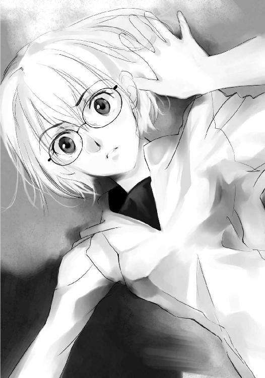
「奪うの？」
耳に触れている自分にそう言うからには、やはり千代は悪魔の耳を所有しているのだろう。喜久子から奪った、悪魔の耳を。
「......言っただろ。友達が奪われた悪魔の部位は奪い返すって」
「これはわたしの部位よ」
奪ったものは自分のものだとでも言うのか。椎矢は怒りを覚えた。
「あんた何が目的なんだよ？ 何で今になって悪魔伝承を調べたんだ？ あんた何がしたかったんだ？ あんたいったい何をしたんだ？」
「これはわたしが引き起こしたことだと言いたいの？」
「今まで学校休んでたあんたが、急に学校に来て悪魔伝承を調べた。そのすぐ後にこんなことが起きた。疑うなってほうが無理だ。あんたが何かしたんじゃないのか？」
「......やっぱり原因はわたしなの？」
逆に問いかけられ、椎矢は困惑した。
そのときの表情は豪のような搾取する側のそれではなかった。
どこか頼りなげで、今にも泣き出しそうな顔だった。だがそんな顔は一瞬だった。
「でもあの人が言ったのよ」
「え？」
ドンッ！
椎矢は突き飛ばされ、尻餅をついた。
千代は素早く椎矢の下から体を抜くと、そのまま逃げ出した。
「ま......」
椎矢はその後を追おうとした。
次の瞬間、唐突に目の前に影が現れた。あの黒い何かではない。ただの影だ。周囲を見たが、誰もいない。何かが人影に見えただけかと思い、椎矢はよけようともせずにその影を突っ切った。
「────！」
その瞬間、椎矢は妙な感触を覚えた。
ただの影を擦り抜けたのではない──液体に近い何かを擦り抜けたような感覚。
椎矢が振り向くと、その影のようなものは自分の突き抜けた部分を空洞にして、だがそのことや自分を気にした様子もなく廊下を進んでいた。
「今のは何だ......。しまっ......！」
椎矢は我に返って、振り向き直した。
だが千代の姿はもう見えなくなってしまっていた。
南棟まで逃げた千代は後ろを振り返る。
椎矢の姿は見えなかった。とりあえずは撒いたらしい。だがすぐに追ってくるに違いない。油断はできない。
それにしても、喜久子がいるとはまったくの予想外だった。それに図書室で悪魔伝承を調べていたことまで知られていた。
情報が欲しかったとはいえ、椎矢たちに声を掛けたのは失敗だったかもしれない。結局得るものは何もなかったに等しい。
千代が欲しかったのは、あの人に会うための情報。
今『こちら側』に来ているかどうかもわからないあの人のこと──
「音無千代さんですね」
と、背後からの唐突な声に、千代は喉の奥で悲鳴を上げた。
その声は知らない声だった。あの人のように温かい安堵を与える声とは対照的に、冷たく緊張を強いる声だった。
千代は振り返り、背後に立つ者の名を呼ぶことしかできなかった。
「......紗々木智事加さん」
千代は一般生徒と同じくらいは彼女のことを知っていた。むしろ彼女を知らない生徒はいないといっていい。
「何か、用？」
「はい」
智事加は友好的とも取れる笑みを浮かべる。だがその目は千代の挙動を何一つ見逃すまいと、獲物を狙う鷹の目のように鋭く研ぎ澄まされていた。
「その様子ですと、現状の把握くらいはできているようですね？」
恐怖や混乱で正常な判断を失っているわけではない千代に、コミュニケーションが取れると智事加は判断した。
「私はあなたの敵ではありません。この緊急事態を解決しようとしている者の一人です」
「あなたもこの状況を受け入れてるのね？」
千代も智事加に確認するように問う。
「現実から目を逸らすようなことはしませんから」
信じるほうが難しい話ではあるが、悪魔の部位の持ち主はそれが嘘ではないと認める自分が自然にいる。それは千代も智事加も、そして他にいる悪魔の部位の持ち主も同じだ。
「それでは時間もありませんので、緊急事態における生徒会としての力を行使します」
智事加は生徒会を示す腕章を見せつけ、そう宣言した。
緊急事態での命令系統は、教師の次に生徒会に与えられる。もちろんこんなことを想定していたのではなく、火事や地震などの場合の対応という意味でだ。
「これから先は生徒会の指示に従うように願います。まずは自分の部位と、すでに手に入れているのであれば能力を申告してください。それから他の悪魔の部位の所持者に関する情報提供を求めます。その後、身柄を生徒会で保護します」
「せっかくだけどお断りするわ」
だが千代は拒絶した。
「こんな状況で校則だとか、生徒会だとか馬鹿みたいだと思わない？」
「こんな状況だからこそですよ。こんな状況だからこそ、個々がばらばらに動くことが危険なのです。防災訓練でも列を作って、集団として行動するでしょう？」
「これは争奪戦。集団でいるほうがよほど危険じゃない？」
「その争奪戦を止めるために、集団として行動するのですよ。全員が全員に目を光らせていれば、争奪戦は起きない」
「それじゃ、最後はどうするの？ 最後は一人しか生き残れないでしょう？」
「全員が助かる方法はすでに考えてあります。今はお教えすることはできませんが」
智事加は真の、最後の一人が元の世界に戻ることを願うという案を話さなかった。その案を口にすれば、同じことを考えようとする生徒が出てくる。全員が全員そう考えれば、自分が最後の一人になろうとするはずだ。
「わたしの部位を奪う気はないのね？」
「はい」
わずかな沈黙の後、千代は静かに鼻を鳴らした。
「嘘ね」
「そんなことはありませんよ」
「嘘はやめなさい。わたしにはわかるわ。あなたはわたしの部位を奪う気なんでしよ？ あなたの声はわたしには響かないわ。とても白々しい」
千代の断言に、智事加は何かに気づいたように何度かうなずいた。
「あなたは『耳』を所有していますね」
千代は驚いて、顔を上げた。見抜かれてしまった。
わずかこれだけの会話で何がわかったというのか。だが智事加は千代が『耳』の部位を所持していることを見抜いてしまった。
「どうせなら最後まで演技をするべきでしたね。余計なお世話かもしれませんが、相手に部位が何であるかを、安易に知られてしまうのはどうかと思いますよ」
カマを掛けられたということか。だがそれにしては指摘がピンポイントだった。何か能力が関係していると、千代は認識した。すでに手遅れではあったが。
「それに嘘を言っているつもりはありません。この事態を解決しようというのは本心ですし、全員が助かる方法も考えています。それにあなたの部位を奪う気もありません。ただし、敵対しないのであれば、の話ですがね」
生徒会は仲間を求めているのではない。従わせようとしているだけだ。今の言葉が真実であるということは、そういうことである。
「部位を知られても、まだ従う気はありませんか？」
「......ないわ」
「思ったよりも頑固ですね」
「思ったよりってどう思ってたの？ 勝手に判断されるの嫌いなんだけど」
「こういう非常事態のときは普通の人間なら、群れようとするものだと思いますが？ 他人を信用できない方なんですか？」
「勝手に人の性格分析したり、考えを当てようとする部位って、どこの部位かしら？ 考えるという観点から見たら脳かしら？」
「............」
「それとも感情や心が宿る胸？」
「............」
「それとも、心臓？」
「そうやって全ての部位を問いかけていくつもりですか？ 答えないという選択肢もあるというのに」
智事加は答えずに失笑し、千代は歯噛みした。
「あなたの『耳』の能力は、相手の言葉の真偽を聞き分ける能力。答えなければ何の力もありません」
完全に能力を見抜かれていた。
「なぜ知っているの？」
「それが私の能力ですから」
相手の能力を見抜く能力ということなのだろう。そしてそこから相手の部位を推測する。見事に当てられてしまったが、それを知られたからといって、どうだというのか。裏を返せばそれだけの能力ということだ。
「その程度の能力なら何とでもなりそうなものね」
「そうですか？ 私はあなたの能力と部位をわかっている。あなたは能力のみを知っていて、部位がわからない。争奪戦を行うなら、どちらが有利でしょうね？」
確かに自分の不利は否めない。
「それに能力なんてものは付加価値ですよ。あなたが私に勝てる道理がありません」
智事加はそれこそ当然のことのように、言い放った。
「こんな状況ですから、特殊な能力に目が行くのは仕方ないかもしれませんが、結局奪い合うのは人間です。人間的な力がものを言うんですよ」
「わたしがあなたより劣っているとでも言いたいの？」
「ブライドは高いのですね？ いいですよ。教えてさしあげます。私の部位は脳です」
千代はあっさりと答えを教えた智事加を怪訝な顔で見た。だがそれが嘘ではないことはわかっている。
「答えることが不思議ですか？ 別に私は知られても問題ないのですよ。私が悪魔の脳の持ち主でその能力を教えたとしても、あなたにできることなどないのですから」
「え？」
「あなた、私の頭を割って脳に触れる勇気がありますか？」
智事加の挑むような声に、千代は愕然とした。
相手の部位が脳だとわかっただけで何とかできると思っていた。だが肝心な問題があった。相手の脳に触れるには、相手の頭と頭蓋骨を割らなければならない。つまり智事加を殺さなければ、部位は奪えない。
智事加が悪魔の部位を教えたのも、能力について教えたのも、奪われない自信があってのことだった。
「これでもまだ生徒会に従いませんか？」
「............」
「何がそこまで頑固にさせるのでしょうか？」
確かに智事加の申し出を受けるのが正しい選択だと思える。だがどこかで智事加に従ってはいけないと警鐘が鳴っていた。これは悪魔の耳の能力ではなく、彼女の経験がそう言っている。
「あなたのことは知っているつもりです。いじめに遭って不登校だったそうですね？ その辺りがあなたの人間不信の原因ですか？」
「！」
いじめという言葉に千代が反応した。
「私はあなたをいじめていた生徒たちとは違いますよ。それに生徒会としても校内で起きているいじめには腐心しているのですよ」
「確かにわたしはいじめに遭っていたわ。騙されたり、暴力も受けた。物を隠されたりもした。でもそんなものはわたしに対して何の影響も与えなかった」
確かにいじめには遭っていた。
だが──
暴力を振るわれれば、治療をするだけだ。
物を隠されれば、見つけるだけだ。
物を壊されれば、買い直すだけだ。
嘘をつかれれば、本当の情報を手に入れるだけだ。
そうやって自分はいじめに対処していた。
誰にも助けを求めなかったのは、求める必要性を感じなかったからだ。自分で対処できたからだ。
そうだ。自分は決していじめに屈しなかった。
「いじめに遭っていたことを認めるのはつらいことかもしれません。ですが、何も恥じることはないのですよ。あなたが悪いわけではないのですから」
千代は我知らず、ポケットに手を入れていた。
なぜ警鐘が鳴っていたのかがわかった。智事加は同じなのだ。あいつらと。
自分にふざけた真似を仕掛けてきていた奴らではない。周囲でわかったような顔をして、同情的な言葉だけを繰り返す無能な奴らと。
「学校を休まれるほど悩まれたのでしょう？」
「............」
千代が何かを呟いた。だがそれは小さすぎて、智事加の耳には届かなかった。
「よく聞こえませんでしたが？」
智事加が千代に近づき、耳を寄せる。
「わたしはいじめに屈してなんかいない！」
千代が一気にポケットから手を引き抜いた。その手には刃が出されたカッターが握られていた。カッターは大きく横に振るわれ、智事加の前髪を切り裂いた。
「！」
智事加は大きく飛びのき、床に尻餅をつく。
「学校を休んだのは、このままだとあいつらを殺してしまいそうだったからよ」
その気になればいつでもやめさせることはできたのだ。
ただ自分はそんなバカな奴らを相手にしていないだけだ。
甘んじて受けてやっていただけだ。
「私はいじめになんて屈しない」
カチカチカチカチカチカチ。
千代はカッターの刃を出し入れして、尻餅をついている智事加を見下ろした。いつもはこの音を聞けば気持ちが落ち着いた。
本当に切りつけなくても、その気になれば切りつけてやれると思うだけで、切りつけて血みどろになって泣いて許しを請うあいつらを想像するだけで、吹き荒れる嵐のような憎悪は過ぎ去ってくれた。
わたしが本気になればあなたたちなんて、すぐに死んじゃうのよ。
でもやらないでおいてあげる。
あなたたちなんかのために人生狂わせたくない。
だから許してあげる。
わたしがあなたたちを許してやっている。
そんなふうに。
だが今はそうはならなかった。
この異常な状況がそれを許しているのかもしれない。
確かにここで何をしても、誰も見ていないし、見つかることもない。
それならやってみるのもいいかもしれない。
本当は一度やってみたかったのだ。
ちょうどいい機会かもしれない。
智事加は廊下に倒れ込んだまま、手と体の動きだけで後退った。
「随分と大人しくなったのね？」
カチカチカチ。カチカチカチ。
カッターの刃を出し入れして、蟲の鳴き声のように不快な音を立て千代が近づいてくる。
「ねえ、この髪どう思う？ 長さもちょうどいいでしょう？ 青くていい色でしょう？」
千代が自分の髪に触れ、智事加に尋ねる。
「元は黒い三つ編みだったの。ずっとそう。小学生の頃から高校一年生のときまで。でもあいつらに三つ編みを片方切られて、青い絵の具を洗った水を掛けられたのよ。でもわたしはそんなものに屈しなかった。髪をショートにして、ヘアカラーで青くしたの。次の日のあいつらの顔ったらなかったわ。先生が文句をつけてきたけど、絵の具で染めた青は怒らなくても、ヘアカラーは怒るんですねって言ったら、何も言わなくなったわ」
勝ち誇ったような笑みを千代は浮かべた。
何に対して勝ち誇ったというのか。彼女にしかわからない。
「あなたさっき言ったわね？ 悪魔の部位や能力はオプションだって。人間的な力が試されるって？ これがそういうこと？ この位置関係はあなたとわたしの人間的な力？」
「っ！」
智事加は歯噛みして、千代を見上げた。だが体は動かない。
「あなたさっき言ったわね？ 頭を割って、脳に触れることができるかって。それは脅し？ 脅しなら屈するわけにはいかないわ。だからやってあげる」
千代がカッターを横薙ぎに振り払った。
智事加は転がるようにしてその場から逃げる。
もし手にしていたものが銃だったなら、もし手にしていたものが毒薬だったなら、こんなふうにはならなかった。
だが刃物はダメだ。カッターは特にダメだ。
智事加の表情がひび割れた。恐怖という名のひびが入った。
「わたし、生徒会って実は嫌いなの。偉そうにして、特権とか振りかざすでしょう？ なんて言うの？ 生徒会っていうだけで、他の一般生徒が従うと思っていそうなあの感じが嫌い」
カチカチカチカチ。カッターが音を立てる。
「特にあの生徒会長の人を見下した感じが一番嫌い」
「......見下しているのではありません。見渡しているのですよ」
智事加がカッターを見せつけられてから初めて、言葉を発した。
真を侮辱されて、黙っているわけにはいかない。黙ってなどいられない。
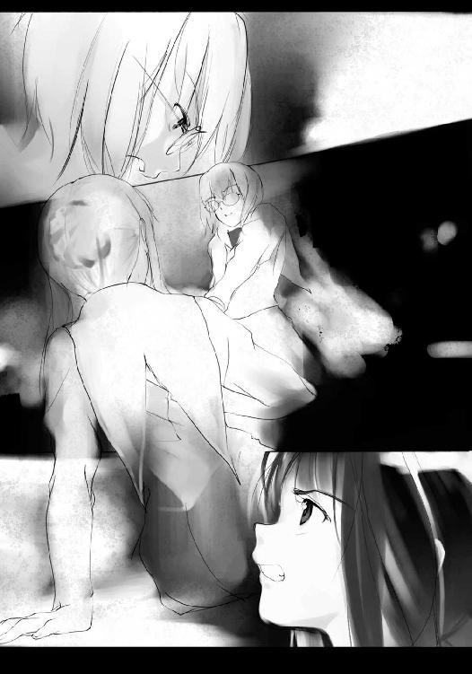
「あの方はこんな状況でも、全員の身の安全を考えられています。特権を振りかざしている？ あの方にとっては当然の権利です」
「へぇ。随分と買っているのね」
「当然です。そして会長は私に命じました。それを果たすのが私の役目であり、命題です」
「......少しだけその気持ちはわかるわ。わたしもあの人の願いを叶えることが今の生きがいだから」
「私は任務を遂行して、あの方の元に戻らねばなりません」
「わたしもあの人にもう一度会わなければならないの」
千代が遠くを見つめる。
「あの人だけがわたしを理解してくれた。親も先生もクラスメイトも、誰もわかってくれなかったわたしの気持ちを、あの人だけは」
「あなたの気持ちをわかるなんて特異な人がいたものですね？」
先程の真に対する侮辱を逆手に取るように、智事加が言い放った。千代の目が薄く細められる。
「ねえ、あの人は悪魔の部位をほしがっているかしら？」
「さあ、そんな奇特な方の考えなど、いくら私でも読めません」
「とりあえずお土産に持っていってみるわ。いらなかったら捨てればいいし」
千代はカチカチと出し入れしているカッターの刃を、もっとも力の入る位置で止めた。
会話がもうすぐ終わる。
智事加は唇を噛み、動かない体に痛みという刺激を与える。
こんなところで凶刃に倒れるわけにはいかない。
それは真の命令を果たせないということ。真の信頼を裏切るということ。
そんなことは許されない。他の誰が許そうとも、自分が許さない。
動け。動け......。
「とりあえず頭さばいて、脳に触れてあげるわ。触れたときにはもうあなたはわからないでしょうけど！」
千代は智事加に向かってカッターを突き出した。
智事加の歯が唇を噛み切る。溢れた血が、なぞるように唇を赤く染めた。
動け──！
ガッ！ とカッターが後ろの壁に突き入れられる。
顔を背けた智事加の前髪が揺れ、その奥にある横一文字の裂傷が露になった。古い傷だ。大きな傷だ。深い傷だ。それは刃物によってつけられた傷だ。
そしてそれは、智事加の心に刻き込まれた呪縛だ。
解き放たれたわけではない。そんな緩い呪縛ではない。
それでも智事加は呪縛を引きずり、自身を動かした。
「あの方が私に求めるのならば、私はどんな弱点も克服してみせます」
智事加は素早く起き上がり、千代の耳を掴んだ。
「あなたのような人間が大勢いるのであれば、話し合いの余地などもうないのかもしれませんね」
保護する旨を伝え、悪魔の部位も能力も教えて手の内をさらした。だが、その返しがこれでは、もはや何も期待はできない。
「そうであるなら、私は奪い、あの方に捧げるのみです」
千代の顔が蒼白になる。
智事加が宣言する。
「『奪う』」
◇◆◇◆◇◆◇◆◇◆◇◆◇◆
いじめを受け始めたのは一年生の頃。
理由なんてわからない。
生意気だと言われたけど、何が生意気だったのかなんてわからない。
わたしはわたしらしく生きていただけだから。
持ち物を隠されたこともあった。トイレに閉じ込められたこともあった。校庭でやるはずの体育の授業が体育館でやると嘘をつかれ、一人待ち続けたこともあった。密かに好きだった男子生徒が呼んでいると嘘の呼び出しをされ、笑い者にされたこともあった。
それでも何も言い返せなかった。できることは耐えることくらいだった。次第にいじめはエスカレートした。
二年生になる前のクラス替えのとき、担任の先生にあいつらと同じクラスにしないでくださいとお願いした。
だけどそれは叶えられなかった。よりによって全員同じクラスだった。
どうしてと先生を責めたら、クラス替えの生徒を振り分ける権限がないと言われた。
その先生は今年も一年生の担任をしている。
二年生になってからは話もしていない。
そしていじめは二年生になっても変わらなかった。
二年生の担任の先生に相談しても、いじめは終わらなかった。
耐えに耐えたけど、我慢できなくて、一度だけやり返したことがあった。
ちょうど図工の時間で、そいつがカッターをわたしに向けてきたの。
だから軽く振り払ったの。
そしたら運悪く──ううん、運良くカッターの刃がはずれて、そいつの腕に刺さってくれたの。
泣き叫ぶその姿を見下ろしていたときの爽快感って言ったらなかった。
でもね。
わたしは先生に呼び出されて怒られた。
何でもその傷が化膿したらしくて、病気にかかって、一週間入院したんだって。そういえば学校来てなかったっけ。
それで親が原因を調べたら、腕に刺さったカッターの刃が錆びていたのが原因だったんだって。ちゃんと消毒しなかったからよ。自業自得じゃない。
それなのにわたしは先生に怒られたの。
今までわたしが何をされても先生は怒らなかったくせに。
それなのにわたしはそいつに謝らされたの。
今までわたしが何をされてもそいつは謝らなかったくせに。
百の言葉のナイフで心を抉られるより、百の所有物を奪われるより、たった一度の肉体的暴力が責められる。
キレルだなんて簡単な言葉で片付けないでほしい。
それは権利。
それは暴力を受けていた者の、当然にして正当な権利。
復讐という権利。
憤怒を溜め込んでいただけ。
憎悪を煮詰めていただけ。
それに気づかない奴らが「突然」キレルなどという。
気にしていないから気づかない。
気づかなかった自分の無能を棚に上げ、そんな様子がなかった、そんなふうに見えなかった、予想もしていなかった、意外だった、などとのたまう。
気づいていても気にしない。
だから、いじめをなくそうと努力している。相手もそういうつもりがないかもしれない。ただふざけているだけかもしれない、などとのたまう。
わたしが行った『暴力』は明るみにさらされた。
わたしが受けた『暴力』は闇に葬り去られた。
どこが同等？
どこが平等？
それからそいつらのいじめはエスカレートした。
それからわたしはカッターを持ち歩くようになってた。
それからわたしはいじめられるたびに思い出すの。
ポケットの中に忍ばせたカッターを、ポケットの中でぎゅっと握って、腕にカッターが刺さって泣き叫ぶそいつらの姿を。
そうするとね、気持ちが落ち着いていくの。
最初はそれで満足だった。
でも最近、ポケットの中に忍ばせたカッターを、ポケットの中でぎゅっと握って、腕にカッターが刺さって泣き叫ぶそいつらの姿を想像するだけじゃ物足りなくなってしまった。
ああ、見てみたい。またそいつらが泣き叫ぶ姿をこの目で見てみたい。
ああ、聞いてみたい。またそいつらが泣き叫ぶ声をこの耳で聞いてみたい。
それからわたしは学校に行くのをやめた。
顔を合わせてたら、いつか本当に切り殺してしまいそうだったから。
学校の先生はこう言ったわ。
もういじめられないように先生もがんばるから、お前もがんばってくれ。
馬鹿じゃないの。
それじゃわたしがいじめに屈したみたいじゃない。
わたしが学校に行ったら、あいつらを切り殺してしまうわよ。
冗談じゃないわ。
あんな奴らのために、人生棒に振りたくない。
親はこう言ったわ。
学校に行くのが嫌なら、このまま行かなくてもいいのよ。
馬鹿じゃないの。
それじゃわたしがいじめに屈したみたいじゃない。
わたしが学校に行ったら、あいつらを切り殺してしまうわよ。
冗談じゃないわ。
あんな奴らのために、人生棒に振りたくない。
どいつもこいつも何もわかってない。誰も分かってくれない。
でもね。
あの人だけはわかってくれた。
あの人はわたしを優しいと言ってくれた。
わたしがあの馬鹿共を殺さないよう耐えていることを。
あの人はわたしを強いと言ってくれた。
わたしがいじめに屈するような人間ではないと。
同情なんてしなかった。
ただ理解してくれた。
それはわたしがもっとも欲していたもの。
親も教師もクラスメイトも誰も与えてくれなかったもの。
だからわたしはあの人の頼みを聞いた。
一年生の賀来喜久子を──
でも一つ残念なことがあるの。
あなたはわたしを理解してくれた。
でもわたしはあなたを理解できなかった。
あなたは何がしたかったの？
あなたが望むことが本当にできたの？
ねぇ、────......。
◇◆◇◆◇◆◇◆◇◆◇◆◇◆
「そんな......」
椎矢は荒い息とは別の意味で肩を下に揺らした。
やっとその姿を見つけたと思ったが、すでに千代は眠りにつこうとしていた。悪魔の眼を凝らして千代の耳を視てみるが、もう輝きはなくなっていた。他の体の箇所を視てみても光はない。
ここで争奪戦が起こり、千代は奪われたのだ。
誰が奪ったのか。奪った者はどこに行ったのか。
すでに去った後か、あるいは隠れているのか。椎矢は周囲を見回してみるが、人の気配はない。わからないだけなのかもしれない。
椎矢は周囲を警戒しながら、千代の傍に歩み寄った。
奪われた部位を奪い返そうと最後まで粘ったのだろうか。
千代はうつ伏せになって、何かに手を伸ばすようにして倒れていた。
「おい！ 誰にやられた！ おい！」
椎矢は千代を揺するが、もう意識が混濁しているのか、わけのわからないことをぶつぶつと呟くだけだった。
「ねぇ、────......」
一つの名前が聞こえた。
それが、千代から悪魔の部位を奪った者の名なのか。
それとも、千代が捜し求めていた人の名なのか。だがそれを確かめる間もなく、かすかに聞こえていた呟きはもうなくなっていた。
千代は眠りについたのだ。
「............」
喜久子の部位を奪った奴ではあったが、なぜか恨む気にはなれなかった。
奪われ、眠りについたその姿が哀れにも思えた。
喜久子と一緒に保健室に運んでやろうがとも考えたが、体力的な問題と急いで琴葉たちの下に戻らなければならないために、そこまではしなかった。とはいえ、このまま廊下の真ん中に渡かせるのも忍びないので、端に寄せて寝姿を整えてやる。
喜久子の部位を千代が奪い、千代の部位を誰かが奪う。豪にしてもそうだ。自分たちの部位を奪いに来た。
そんな争奪戦が当たり前のように繰り広げられている。
このままでは話し合いの余地などなくなっていく。
争奪戦が本格化してしまう。いや、すでに本格化しているのかもしれない。全員で元の世界に戻ろうとしている人など、自分たち以外いないのかもしれない。
ゴーン、ゴーン、ゴーン、ゴーン、ゴーン、ゴーン、ゴーン、ゴーン......。
鐘の音が鳴り響く。
時刻は午後八時。残り時間はあと四時間。
手がかりの一つが失われた。
椎矢は初めて焦りのようなものを覚えた。
第六章 影から操る者 陰に潜む者
「あーあー」
廊下で静かに眠りについている千代を見下ろしている男子生徒が一人。京部創那だった。
「早速奪っちゃって」
智事加の去ったほうを見ながら、創那はため息をつく。
「でも、しょうがないか。カッターはダメだよ。智事加さんにカッターは。まあ、そんなことは知りようもないだろうけど」
創郡は眠りにつこうとする千代に優しく微笑みかける。
「でも君には感謝してるよ。ぞくぞくさせてもらったからね。あんな綺麗な智事加さんを見たのはあのとき以来だよ。彼女はね、精巧なガラス細工なんだよ。それも磨かれていないね。触れると怪我をするほどに鋭く、でもとってももろくて壊れやすい。まあ、君にはそんなことはわからないよね」
と、足音が近づいてくる。
「おっと。誰か来るな。さっさと済ませてしまおう」
創那はポケットからカッターの刃を取り出し、自分の親指に刃のほうを当て、すっと横に引いた。
「智事加さんが見たら卒倒しちゃうかな？ それとも怒り出しちゃうかな？」
独り言を繰り返しながらも、創那の親指の傷には赤い線ができ、滲み出た血が次第に溢れていく。
「自傷癖があるわけじゃないんだよ？ このカッターの刃は智事加さんのために使おうかと思ってただけなんだ。こんな形で役立つとは思ってなかったけどね」
と、創那の親指から血が溢れ、雫となって千代の頬にぽたりと落ちた。
血の雫は千代の頬に落ちても雫の形を崩さず、べったりと付着もせず、そこに残る。
「さあ、動け」
親指を口に含み、創那は静かに呟いた。
すると血の雫はまるでアメーバか何かの生物のように形状を歪めながら、千代の体の上を移動し始めた。血の雫は頬を伝って、千代の顔の上のほうに移動していく。だが血の雫の這った跡は何も残らず綺麗なままだ。
「到着〜」
血の雫は千代の耳に辿り着くと、ぱちゃっと水風船が割れるかのように形状を崩し、耳にベったりと付着した。血という液体の正しい姿。血の雫は千代の耳──悪魔の部位であった場所に刻印のように残った。
用事は済んだとばかりに去ろうとした創那だったが、一度だけ立ち止まる。
「......そんなに見つめられると照れるな」
背後からの視線に、創郡はそんな独り言を呟き、口に含んだ指に歯を立てた。再び血が滲み始め、雫となって血が床に落ちる。
床に落ちた血は先程と同じように、床を滑るように移動していく。
血の雫はそのまま廊下の端に達すると、影の中に沈んでいった。まるで同じ液体に溶け込むかのようだった。
創那は血の雫の行方を最後まで見送らずに、その場を後にする。
背後から注がれる視線はそのままの位置で止まっている。創郡はそれを感じ取ると、特に気にした様子もなくその場を去っていった。
と、廊下の隅の影から、一人の人間が重量も物理法則も無視して浮かび上がってきた。
「気づかれてたのかなぁ？」
その生徒は創那を追うことなく、倒れている千代の下に行く。
「君は十分に役に立ってくれたよ」
その生徒は千代にそっと声を掛ける。
「でも俺は君を理解してないし、君も俺を理解してない。そこは勘違いしちゃダメだね」
残酷な言葉は千代に届かない。届かないほうが幸せな言葉。
その生徒はそれだけ言うと、影の中に飛び込む。
まるで水の中に飛び込むかのように、その体は床にできた影の中に消えていった。
椎矢が千代のところに辿り着いたのは、それから三十秒後のことだった。
琴葉は喜久子の頭を膝に乗せて座り、椎矢の帰りを待っていた。
静かだった。休みの日に学校に来てもこんな静寂の中に浸ることなどないだろう。つい数時間前までは文化祭で賑わっていたことが嘘のようだった。
自分の時計が正しいのならば、もうすぐ午後八時になろうとしていた。
電気の調子が悪いのか、天井の蛍光灯のいくつかが消えているため、周囲は薄暗かった。暖房が稼動しているため、それほど寒さを感じないが、気温とは違う薄ら寒さが琴葉を包んでいる。
今頃、元の世界はどうなっているのだろうか。
時間が止まっているのだろうか。それともこの世界と同じように時間が過ぎているのだろうか。だとすれば、突然いなくなった自分たちに騒然としているのだろうか。それとも自分たちのことなど忘れて、後夜祭を楽しんでいるのだろうか。それとも後夜祭はとっくに終わり、みんな家路につき、今日の文化祭のことを家族と話したりしているのだろうか。
だとしたら、遅くまで帰ってこない自分を両親は怒っているだろうか。携帯電話がつながらないことで心配しているだろうか。文化祭で遅くなると言っておいたから、気にしていないだろうか。
もしかしたら──
自分たちの存在そのものが忘れ去られているなんてこともあるのだろうか。
「キクちゃん、帰りたいよ」
琴葉は誰も聞く人のいない中で、本音を漏らした。
「元の世界に帰りたい」
と、琴葉は視界の片隅に動くものを感じて、顔を上げた。
周囲を見回す。暗いからはっきりしないが、誰もいないように見える。だが千代のように教室の中に隠れているということも考えられる。琴葉は何度も何度も周囲を見回した。
だがやはり誰もいない。
気のせいと思い、安堵のため息をつきかけたとき、また視界の片隅を何かがよぎった。慌ててそっちのほうを見るが、やはり誰もいない──見えない。
今度は周囲に視点を動かさず、さっき何かが見えた気がした場所をじっと凝視する。
と、何もない場所が蜃気楼のように揺れた気がした。
そのとき、バヂッ！ と電気が弾ける音がした。天井の蛍光灯から音がした。
心臓が止まるがと思うほどびっくりした琴葉は、詰まった息を長く長く吐いた。
電気の異常が復活したのか、他の蛍光灯も明滅を始める。蛍光灯の明滅に合わせ、稲光のように周囲も明滅を始める。
暗いよりは明るいほうがいい。何度かの明滅の後、蛍光灯に再び安定した明かりが灯った。
「ひっ！」
今度こそ心臓が止まるかと思った。
暗いよりは明るいほうがいいとは、考え違いもはなはだしかった。明るさを取り戻したことで浮き彫りになった。黒い影のような何かが、目の前でゆらゆらと蠢いていた。
いないわけではなかった。見えなかっただけだ。「見えない」と「いない」は別物だ。
黒い何かはどこか人間のような形をして見えた。それが揺れながら近づいてくる。
それが何なのか、琴葉には理解できなかった。
ただの影なのか、それとも幽霊なのか、それとももっと別のものなのか。
早くどこかに行ってくれることを願いながら、琴葉は身を硬直させている。
だがその願いも空しく、黒い何かはさらに琴葉に近づき、その腕のようにも見える長い部分で琴葉の顔を撫でていった。
ぞわっ。
「！」
琴葉は悲鳴を上げそうになった。
「触った......？」
その黒い何かは、ぬっと琴葉の眼前に顔のような部分を突きつけた。表情のない黒いだけのその顔が、晒ったような気がした。
その向こうにはいつの間に現れたのか、黒い何かがその数を増やしていた。数はわからなかった。増殖と融合、膨張と収縮を繰り返しながら、黒い何かが近づいてくる。
琴葉は膝の上の喜久子を守るように、あるいはすがるように抱きしめた。
一人で逃げることなどありえない。喜久子を抱えて逃げることもできない。
黒い何かは琴葉と喜久子を取り囲み、からかうように、嘲るようにゆらゆらと揺れている。時々触れる感触は冷たいような、ぬるいような、ざらりとしたような、ぬるりとしたような、奇妙で感じたことのない感触と不気味さを与えてくる。
琴葉は体に入り込まれ、内側から食べられてしまうかのような、そんな恐怖を覚えて、身を硬くする。
今、琴葉にできるのは、心の中で名前を呼ぶことだけだった。
椎矢くん──
そのとき、黒い何かでできた壁がばっと二つに割れた。
裂け目から現れたのは刀納依聖司だった。切迫した顔で飛び込んできた彼は、
「こっちだ！」
喜久子を抱き上げて肩に担ぎ、琴葉の手を引いて廊下を駆け出した。
椎矢は元の場所に戻ったが、琴葉の姿を見つけることはできなかった。
確かにこの場所だった。間違いはない。
「あいつ、ここにいろって言ったのに」
椎矢は琴葉が移動したと考えた。
「琴葉！ 琴葉！ どこにいるんだ！」
椎矢は叫んだ。琴葉の返事が来るのを待って何度も叫んだ。だが誰もいない廊下に反響するだけだ。
「そんな大声出したら、見つけてくれって言ってるようなものだよ」
と、廊下の向こうから現れたのは、
「空亜......」
黒百合空亜だった。南棟で会って以来だが、無事だったようだ。
「どうかしたの、椎矢？」
「お前、琴葉を知らないか？ オレと一緒にいた奴だ。ここで待ってろって言ったのに」
「一人にしちゃったの？」
「......しょうがなかったんだよ。知ってるのか知らないのかどっちだ？」
「知らないけど、奪われたか、連れ去られちゃったんじゃないかな？」
「............」
連れ去られたとかそんなことは考えなかった。いや、考えようとはしなかった。
喜久子がいるから、琴葉が自分で動くことができないのはわかっているのに。
「今はそういう時、此処はそういう場所なんだよ。まだわからないの？」
「わかってるさ！ わかってるけど......くそ！」
椎矢は悔しげに壁を殴った。やはり千代など追わずに一緒にいればよかったのだ。危険なのはわかっていたはずなのに。どうして離れてしまったのか。
「そんなに自分を責めたらダメだよ。誰にでも失敗はあるよ。取り返しのつかない失敗もあるけどね」
慰めているのか、責めているのかわからない空亜の言葉だが、椎矢は責められていると感じた。
「何が言いたいんだよ？」
「ただの教訓だよ。椎矢には無事でいてほしいからね」
「どうだか」
椎矢は苛立たしげに吐き捨てる。
「ねえ、椎矢？」
「何だよ？」
「椎矢はどうしてボクを怖がってるのかな？」
「なっ......。怖がってなんかいないだろうが」
「ウソ。怖がってるよ。椎矢はボクを怖がってる。昔はそんなじゃなかったのにどうしてかな？ いつからかな？」
「勝手なこと言うな」
「ほら、都合が悪いと目を閉じて顔を背ける椎矢の癖が出た」
指摘された椎矢が目を開くと、すぐ間近から覗き込む空亜と目が合った。
人形のように整った顔で下から覗き込まれる。その瞳は透き通っている。ただし純真無垢なそれではなく、ガラス玉のような無機質な透明感。
椎矢は目を逸らした。
いつから自分はこの瞳を見られなくなったのか。
「ねぇ、どうしてかな？ ボクは知りたいだけなんだよ」
「だから......」
「もしかしてボクが『悪魔』になってからかな？」
「こんなときに笑えない冗談言うな！」
椎矢は思わず大きな声を出した。
空亜はくすくすと笑い、弾むように椎矢から離れた。
「向こうのほうから悪魔の口の匂いがするよ。本人かは分からないけど」
向こうと空亜が指差す先は、保健室がある方向だ。
空亜の言葉に冷静さを取り戻した椎矢は、はぐれたら保健室でと伝えていたことを思い出した。もしかしたらここで芙未たちと合流して、保健室に向かったのかもしれない。
椎矢は視線を戻すと、空亜の姿はもう消えていた。
とりあえず空亜のことは頭から追いやり、椎矢は保健室へ向かうことにした。
琴葉は手を引かれるままに聖司の後をついて走っていく。
聖司は黒い何かを置き去りにして、そのまま廊下を駆けていくと、保健室の中に飛び込んだ。聖司は喜久子をベッドにひとまず置くと、引き戸形式のドアが開かないように内側から長机を立てかけてた。
「はー、怖かった」
一心地ついたのか、聖司がドアに背を預け、大きく息をついた。
「だいじょうぶかい？」
聖司は立ち尽くす琴葉に笑いながら声を掛けた。唐突な展開についていけなかった琴葉は、やっと我に返り、何度かうなずいて見せた。
「とりあえずそんなところにいないで座りなよ。聞きたいこともあるし」
聖司は自分が腰掛けたベッドの隣をぽんと叩き、立ったままの琴葉を手招きした。琴葉は素直に聖司の隣に腰を下ろした。
「で、聞きたいことっていうのはまず」
やはり悪魔の部位や能力のことを聞かれるのかと身構えた琴葉だったが、聖司は真っ先に聞いたのは、
「俺のこと、覚えてる？」
そんなことだった。拍子抜けした琴葉は小さく吹いた。
「覚えてますよ。文化祭のときにホールで会いました」
「それはよかった。忘れられてたらどうしようかって思ったよ。俺って影薄いから。俺は刀納依聖司。三年ね。君は？」
「円夜琴葉です。一年生です。あの、助けてくれて、ありがとうございました」
お礼を言いそびれていた琴葉が礼を言うと、聖司はぱたぱたと手を振った。
「いやいや。お礼なんていらないよ。困ったときはお互い様。偶然通りかかってよかったよ」
「本当にありがとうございます」
どうしていいか、わからなかった。あのままあそこにいたら、自分はどうなっていたかわからない。それにもしあそこに豪のような奪おうとする人が来ていたら、自分は何もできずに奪われていただろう。
「通りかかったのが刀納依先輩でよかったです」
「そう言われると狼さんになりづらいな」
「は？」
「いや、こっちの話」
聖司はベッドから降りて、脇に置いている椅子に腰掛けた。
「じゃ、少しまじめな話しようか。嫌かも知れないけど」
「あ、はい。あたしも実は聞きたいことがあるんです」
偶然とはいえ聖司と出会えたことは先程とは別の意味で幸運だった。
「俺に聞きたいこと？ わかった。とりあえず俺が先でいいかな？」
「はい」
「ま、その前に教えとこうかな。俺は悪魔の腰の所持者。何かそれぞれ能力があるみたいだけど、俺はまだない。君は？」
「あたしは悪魔の口の所持者です。刀納依先輩と同じで能力っていうのはちょっと」
聖司が素直に話したことで、琴葉も素直に答える。助けてもらったこともあり、警戒はなかった。
「そうか。悪魔の口か。だからそんな魅力的な唇をしてるんだね」
「悪魔の口って、そういうものなんですか？」
琴葉は小首をかしげて、まじめな顔で聞き返した。
「......こいつは手ごわいな」
聖司は唸ったが、琴葉はわけがわからない様子だった。
「それはさておき、君は今までどうしてたの？ 俺はテキトーにふらついてたんだけど、誰にも会えなくて、君に会ったのが初めてなんだ。君のほうは何か一悶着あったみたいだけど」
「はい。いろいろと......。途中で芙未先輩と擁子先輩に会いました」
「芙未ちゃんと擁子ちゃんに？ あの二人も来てたのか」
演劇部の顔見知りが二人が来ているということで、聖司も驚いた様子だった。
「で、その二人は？」
「悪魔の腕の所持者に襲われて、二人は逃げたその人を追いかけていきました。でも奪うとかそういうんじゃなくて、このまま放っておくと危険だからって」
「芙未ちゃんに狙われたら最後だな。南無南無」
聖司は手を合わせて、会った事もない悪魔の腕の所持者の成仏を願ったりした。
「で、その子はその悪魔の腕の所持者に？」
「いえ。キクちゃん......っていうんですけど、彼女は二年生の音無先輩に奪われました。もう一人一緒にいた人がいるんですけど、その人はキクちゃんの耳を奪い返すために、音無先輩を追いかけていったんです」
「危ないな。あんなところに女の子一人置いていくなんて」
「違うんです。あたしが行ってって言ったんです。危険なのはあたしもその人もわかってましたけど、キクちゃんを助けたかったから」
「大事な友達なんだね？」
聖司はベッドで眠っている喜久子を見て言った。
「はい」
琴葉はきゅっと膝の上で、手を握り締めた。
「......残念だったね」
死んだわけではない。悪魔の部位を取り返せば目を覚ますという希望はある。それはわかっているが、それで気分が楽になるわけではない。
「それで、一人で待っていたら『闇』に囲まれていたわけだ？」
「『闇』？」
「ああ、あの黒い奴のこと。俺が勝手に名前付けたんだけどね」
「『闇』......。あの、その『闇』って何なんですか？」
『闇』と呼んだり、その存在に驚いてもいない様子の聖司に、琴葉は聞いてみた。
「んー。俺も知ってるわけじゃないんだけど、こっちの住人じゃないかなぁって思ってる」
「こっちの？」
「そ。ここは明らかに俺たちのいた世界じゃないでしょ？ 魔界とかそんな感じ？」
魔界とか言われてもぴんと来ないが、元の世界と別物というのはよくわかる。
「もしくは、昔、悪魔の部位を奪われた人間たちの末路、だったりして」
「え？」
琴葉ははっと顔を上げた。「昔」とは聖司の中で、いつを指しているのか。やはり聖司は何かを知っている。それだけは間違いない。
「それじゃ、今度は君の番」
聖司が琴葉に質問を促した。琴葉はうなずき、質問のバトンを受け取った。
「あの、十二年前の集団行方不明事件のことなんですけど、そのときの行方不明者に刀納依先輩のおじいさんがいて、一人だけ戻ってきたのって本当ですか？」
聖司は感心したように口笛を吹いた。
「よく知ってるね？ どこでそれを？」
「芙未先輩たちと図書室で、元の世界に戻る方法がないか調べたんです。そのときにその行方不明事件の新聞記事を見つけて」
「それで？」
「それってこの状況に似てませんか？ もしかして、刀納依先輩のおじいさんはあたしたちと同じようにこの世界に連れてこられたんじゃないんですか？ そういう話をおじいさんから聞いていませんか？」
「うちの爺さんは、見つかったときは自失状態で、そのまま元に戻らなかったんだ。だから失踪中の真相は闇の中」
「そう、ですか......」
新聞にもそう書いてあった。どうやら回復はしないまま亡くなったらしい。
「──ってことになってるけど、あれはウソ。爺さんは話してくれたよ。行方不明中にあったことを。ただ、それはボケ老人の戯言としか受け取られなかった。まあ、無理もないね。十二人しかいないまったく同じ様相の別の世界に行って、悪魔の部位の所持者となって争奪戦を行っていたなんて言ってもね」
琴葉は一瞬耳を疑った。だが聞き間違いにしては、出来すぎた耳だ。
「それって......」
「そう、君の言う通り。まさしくこの状況だ」
聖司は皮肉っぽく笑みを浮かべた。
「あ、あの、そのとき何か言ってませんでしたか？ この争奪戦を終わらせる方法とか。元の世界に戻れる方法とか。どんな些細なことでもいいんです！ 何か言ってませんでしたか？」
「元の世界に戻るには、他の十一人の悪魔の部位を０時までに奪えばいい。悪魔からのメッセージ見なかった？」
「違うんです。それだと意味がないんです。みんなで元に戻れる方法が知りたいんです！」
「俺の爺さんは、他の十一人の部位を奪ったんだよ」
何でもないことのように聖司は言った。
「先祖代々守ってきた悪魔を封じたこの土地に、学校を建てて金儲けを企むような爺さんだ。生き残るためなら、他の十一人を犠牲にすることくらいわけはない」
「そんな......」
だが改めて考えれば、一人戻ってきたということはそういうことなのだろう。
やはりそれしか方法はないのだろうか。
誰かが誰かを犠牲にするその方法しか、助かる術はないということか。
琴葉が目に見えて落胆する。
「爺さんは結局、自分の話を信じてもらえず、ボケ老人扱いされて病院に入れられて、そのまま本当にボケ老人になって、死んじまった」
爺さんの遺言、と前置きして、聖司は言った。
「ごめんなさい。ごめんなさい。奪ってごめんなさい。
──私が奪わなければ皆で元の世界に戻れたかもしれないのに」
「え？」
琴葉は顔を上げた。
「今、なんて......？」
「ごめんなさい。ごめんなさい。奪ってごめんなさい。私が奪わなければ皆で元の世界に戻れたかもしれないのに」
「みんなで？ 元の世界に？ それってどういう意味ですか？ それってもしかして......」
聖司がにやりと笑う。
「そう。取りようによっては皆で元に戻れる方法があったと取れなくもない。でも奪わずに皆で力を合わせれば何とかなったかも、ってだけのただの懺悔かもしれない。その方法については何も言ってなかったから」
「いえ。きっとあります。あるはずです」
新たに見えた光明。錯覚かもしれない光明だが、それは紛れもない希望の光明。
皆で元の世界に戻る方法があるかもしれない。
ただの懺悔だなんて決め付けて、手放すことはできなかった。
琴葉は初めて希望を持つことができた。
「そんなに喜ばれて、実は何もありませんでしたじゃ、責任感じちゃうけどね。実際、聖子は戻って来れなかったわけだし」
聖子、という知らない名前に琴葉は小首をかしげた。
「......聖子？」
「俺のカノジョ。ああ、元って言ったほうがいいかな？ あれ？ 新聞に載ってなかったの？ 刀納依聖子って名前。十二人の行方不明者の一人」
「刀納依聖子......？ 刀納依、ですか？」
琴葉は思わず聞き返した。聖司の元恋人でありながら、刀納依という名字。それは一体何を表すのか。
「別に間違いじゃないよ。刀納依聖子は俺の姉さんだ。といっても、血はつながってない。俺、実は養子なんだ。両親は酔っ払い運転のトラックに突っ込まれて死んじまったから。ま、当時は俺が六歳、聖子が十二歳で、マセたガキだったと思うけどね。ああ、これは二人だけの秘密だよ。芙未ちゃんたちにも話してないからね」
集団行方不明事件の発見者は、刀納依誠一ただ一人だった。
「その聖子さんはそれからどうなったんですか？」
「もちろん他の十人と同じで、まだ見つかってないよ。爺さんみたく見つかるかもなんて思いもあったけど、結局十二年が過ぎた今でも見つかってない。警察の捜査も終わっちゃったよ。墓も建てられた。まだ生きてるかもしれないのにね」
聖司が言っていた。
俺の爺さんは、他の十一人の部位を奪ったんだよ──
つまり、刀納依誠一は刀納依聖子の悪魔の部位を奪ったということか。自分が助かるために、自分の孫を犠牲にしたということか。
「ホント、イヤになっちゃうよねぇ。何で戻ってきたのが爺さんなのかねぇ」
聖司の顔に陰がよぎる。
その陰が、琴葉の脳裏に一つの可能性をよぎらせる。
聖子は十二年前の争奪戦に巻き込まれ、まだ帰ってきていない。
それならば聖司は彼女を助けるためにこの世界に来る方法を考え、実行したとは考えられないか。
さっきまで、聖司は単に祖父づてにこの争奪戦の話を聞いていたのではないか、としか思っていなかった。どちらかと言えば、この状況を何とかする情報を持っている、いわば救いの手を持っている側だと。
だが祖父から話を聞いていてこの争奪戦のことを知っていたということは、逆のことも言えるのではないか。例えば、同じ時、同じ場所に、十二の悪魔の部位の所持者を集めるよう画策するとか。
そして聖司は、椎矢の言っていた「この争奪戦が始まる前にすべてを知っていた者」にも該当するのではないか──
「何か言いたそうだね？」
「いえ......」
琴葉は思わず目を逸らした。考えすぎだと思おうとした。だが疑念はしこりのように胸に残り、無視できなくなる。
「もしかして聖子に会うために、俺がみんなをこの争奪戦に巻き込んだとか思ってる？」
図星をつかれ、琴葉は聖司を見た。
「やっぱり」
「......す、すいません。少しだけ考えました。でも違いますよね？ そんなことないですよね？ 刀納依先輩がまさか......」
そんなことは信じたくなくて、琴葉は同意を求めた。
だが聖司は答えてくれなかった。ただ静かに笑みを浮かべただけだ。それはとても暗い笑み。さっきまで見せていた軽い調子のそれではなく、陰惨で、重たい何か。
聖司の雰囲気が明らかに変わっていた。
琴葉は背中に寒気を感じた。
似ていた。舞台が終わったあと、ホールで見たあの笑み。悲恋話を楽しかったといった自分に向けられたあの暗い笑みに。
あの舞台の悲恋が何を物語っているか、琴葉はやっとわかった。
報われない悲恋の主役たち。
悪魔は聖司で、巫女は義理の姉にして恋人の聖子。
感情が込められていたとしても不思議ではない。
「..................」
「ああ、何か今日の俺は喋りすぎだな。普段はこんなふうに自分のこと話したりしないのにさ。やっぱこういう状況で平静でいられないのかな？ それとも君が聞き上手なのかな？」
聖司は一瞬の間を空け、
「──それとも君の能力のせいなのかな？」
琴葉は思わず肩を震わせた。
唐突な指摘に思わず反応してしまった。
「少なくとも自分の能力に多少は当たりはついているみたいだね？ ひどいなぁ。言ってくれればいいのに」
「それは......」
「ま、おあいこかな」
と、そのとき視界の片隅に何かが動くのが見えた。
琴葉は「え？」と、弾かれたようにドアのほうを見る。ドアの擦りガラスの向こうで何かが蠢いているのが見えた。『闇』が追ってきたのだ。長机で押さえられているドアは開かないように固定されている。だが安心できるかと言えばそうでもない。
「刀納依先ぱ......」
「やれやれ。少し興奮しちゃったかな？ おいで」
聖司が言うと、『闇』がドアを擦り抜けて保健室に入ってきた。椅子に座る聖司の周りに控えるように、いくつもの『闇』たちが囲う。
「ど、どうして......」
「そう怖がらなくてもいいよ。慣れればかわいいものだよ」
ドアが開かないように固定した聖司は驚いた様子を見せない。おいでと言ったのは聞き間違いではない。聖司がおいでと言ったから、『闇』は入ってきたのだ。
「！」
聖司は『闇』が入ってこられないようにドアを固定したのではない。他の人間が入ってこられないように、自分が外に出られないように、ドアを固定したのだ。今思えば、自分を囲んだあの『闇』も聖司の命令に従っていたのかもしれない。
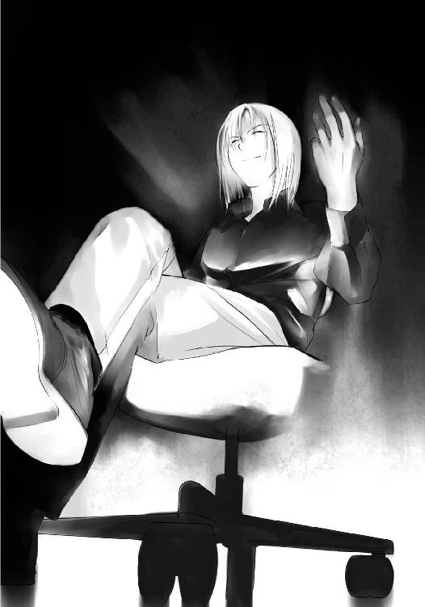
「この『闇』を操るのが、俺の能力なんだ。まだうまくコントロールできないんだけど。君と同じで、かな？」
琴葉はベッドから後退る。が、狭い保健室。逃げ場はない。
「怖がらないでいいのに。この『闇』は元は人間なんだよ。この世界に連れ込まれて、元の世界に戻れなかった哀れな人間の成れの果てさ」
聖司は触れられない『闇』を愛でるように撫でるふりをする。
「何度こんなことが起きたかはわからないけど、この中には爺さんに奪われた人もいるんだろうね」
「...その『闇』の中に、聖子さんもいると思ってるんですか？」
「さて、どうだろね。けど──」
聖司が薄く笑って、こう言った。
「──そうでなけりゃ、来た意味がない」
決定的な一言だった。
琴葉はその場から逃げ出そうとした。だが喜久子がいることを思い出し、その足が止まる。聖司の感情に呼応してか、『闇』が肥大化して、天井につくほどの大きさとなり、琴葉を呑み込もうとする。
「ひっ！」
「どうどう」
が、聖司はすんでのところで、『闇』を、そして自分の感情を制した。
「なかなかうまくコントロールできないな。それに意思の疎通も取れないんだ。でも悪魔の部位を揃えたらそれも可能になるのかなぁ」
『闇』に代わり、聖司が琴葉の前にやってくる。
逃げる術のない琴葉はせめて喜久子に手出しできないように、その身をかばう。
「君のことは何だか気に入ってたんだよ。でもこの世界で生き残れるのは一人だけ。残念だよ。何でこっちに来ちゃったんだ？ まあ、好きで来たわけじゃないか。かわいそうにね」
聖司が琴葉に向かって手を伸ばす。
琴葉は身を硬くして、目をぎゅっと閉じた。
まぶたの裏に浮かぶのは──
椎矢くん──
近づいてくる聖司の手が、琴葉に触れそうになったとき──
ガシャーン！ と、保健室のドアが支えの長机と共に薙ぎ倒された。
その向こうに立っていたのは椎矢だった。
「椎矢くん！」
「おやおや。なんとも計ったようなタイミングだね？ それともそれも能力なのかな？」
保健室の外で『闇』が蠢いているのが見えた。後はもう無我夢中で飛び込んだだけだった。だがもう説明はいらなかった。
琴葉の泣きそうな目と声とで十分だった。
椎矢は保健室の中に飛び込むと、聖司に向かって突進した。『闇』が立ちふさがろうとするが、椎矢のほうが早い。椎矢はそのまま聖司に体当たりを食らわせた。
聖司はよけることもできずに、床を転がる。椎矢は追い打ちを掛けるが、聖司が手を振ると同時に、彼の周りに『闇』が集まった。聖司の姿が一瞬見えなくなり、『闇』が消えると同時に、彼の姿までもが消えてしまった。
「なっ！」
「あいにく肉体労働派じゃないんだ」
どこからともなく聖司の声が聞こえた。だが聖司の姿はどこにない。
椎矢は周囲を見渡すが、もう『闇』は見えない。それにも関わらず、取り囲まれている圧迫感を感じる。得体の知れない不安に囚われ、椎矢はその場を逃げ出すことを選択した。
「逃げるぞ」
椎矢は琴葉の手を掴むと、保健室から飛び出した。
「キクちゃんが......」
「あいつはもう奪われない！」
椎矢は冷酷にも言い放った。
「椎矢く......」
表情から、声から、そしてつなぐ手から悔しさと歯がゆさが伝わってくる。
決して見捨てるのではない。
自分にもそう言い聞かせ、琴葉は椎矢に従った。
息の続く限り走り、西棟のほうまでやってきて、二人はやっと立ち止まった。
一気に全速力で走ったため、息が急激に上がっていた。二人は喋ることもできずに、短い呼吸を繰り返した。何とか喋れるくらいに落ち着くのに、数分必要だった。
「ここまで来ればだいじょうぶ......って言ったら、だいじょうぶじゃないのが、映画とかのお約束だよな？」
「もう」
こんなときまでつまらない冗談を言う椎矢を、琴葉は頼もしく思った。
椎矢は廊下に座って壁にもたれる。琴葉もそれに倣って椎矢の隣に座る。
「......悪い。『耳』は取り返せなかった」
「そう。しょうがないよ。また探そう」
「途中で見失って、見つけたときにはもう誰かに奪われてた。そこには他に誰もいなかったから、誰が奪ったかわからない」
「............」
琴葉は何も言えなくなった。
奪って、奪われて。いったいみんなどうしてしまったのか。それともこれが普通なのか。
「けど、あそこにいなかったから正直焦ったぞ」
「ごめんね。でもすごい大事なことが聞けたの」
琴葉は聖司に会ったときの顛末と保健室での会話の内容を話した。
そしてもっとも大事なこと──
「やっぱり刀納依先輩がこの争奪戦を始めたみたいなの」
養子のことまで話すか迷ったが、椎矢に隠し事はしたくなかったため、琴葉は聖司のことを、恋人が行方不明になったことなど含めて、全て話した。
「つまり行方不明の恋人を探すためにこの世界に？」
千代が最後に呼んだ名前は彼のものだった。千代はおそらく聖司に従っていたのだ。間違いない。
刀納依聖司。彼がこの争奪戦の首謀者だ。
「それから、これはいいことなんだけどね、元の世界にみんなで戻れる方法があるかもしれないの」
聖司の祖父の言葉も琴葉は話した。都合がいいかもしれないが、それが嘘だと琴葉は思っていなかった。
「......そうか。希望はあるんだな？」
聖司の話が嘘でなければ。
椎矢は胸のうちで呟いた。琴葉とは逆に、椎矢はその話が嘘のような気がしていた。だが琴葉の期待に満ちた顔を見ると、その考えを口にはできなかった。
「あの人、自分の部位とか能力について何か言ってたか？」
保健室では眼鏡をはずす間がなかったため、どの部位を所持しているか、視ることができなかった。だがそれは琴葉が聞いていた。
「悪魔の腰の持ち主で、『闇』......あの黒い影みたいなの、『闇』って言うみたいだけど、それを操ることができるって」
「......だけ、とは考えにくいな。さっきもあの『闇』だっけ？ それを使って消えちまったりしたし。つっても、どうにもならないか」
『闇』を操る能力。それは同時に『闇』そのものの能力も使えるということだ。『闇』自身は何ができるのだろうか。
「ん？ ってことは、あの悪魔の言葉を作ったのは刀納依先輩ってことになるのか？」
この争奪戦のルールを記した黒い文字。あれも『闇』の一部だとしたら、そうなる。だが、そうだとしたら、それを伝える意味がわからない。悪魔の部位が欲しいのであれば、誰にも何も教えずに、奪えばよかったではないか。
彼の狙いは本当に恋人に会うだけ、ということか。いや、もし会えたなら、その後は一緒に元の世界に戻れるよう願うのではないか。
だがそうであれば、やはり争奪戦のルールをご丁寧に教えた意味がわからない。やはりあの悪魔の言葉は、聖司とは関係ないのか。
椎矢は途中で考えるのをやめた。こればかりは考えてもわからない。
「芙未先輩たち、どうしてんのかな？」
できれば今すぐにでも合流してこのことを伝えたかった。
「あ！」
椎矢が話の方向を変えると、琴葉は思い出したように声を上げた。
「どうした？」
「保健室で待ち合わせしてるんだよね？ このまま何も知らないで二人が保健室に行ったら、刀納依先輩に......」
「知り合いな分、まずいな」
どうやらここでじっとしているわけにはいかないようだった。
芙未たちを先に見つけるか、聖司を何とかするか。どのみち保健室のほうには戻らなければならなさそうだ。
芙未と擁子は二人にとって唯一の仲間だった。芙未たちを失うわけにはいかない。
「残り時間は大体三時間半か」
早く芙未たちと合流し、元の世界に戻る方法を探し出さなければならない。
椎矢は琴葉を連れて、来た道を戻り始めた。
椎矢は先行して、周囲を警戒する。角から南棟の廊下を覗くが、聖司の姿も『闇』らしき姿もない。だが教室のドアを擦り抜けてくるかもしれないため、その注意も怠らない。
南棟に戻った椎矢たちはなるべく廊下の中央を歩いた。注意は周囲三百六十度だけでなく、床や天井にも向けられた。
天井の蛍光灯は相変わらず弱々しく明滅を繰り返している。
電気は点いては消え、消えては点いてを繰り返している。
「電気が消えたら『闇』が見えなくなっちゃう」
暗闇が濃くなれば、それだけ『闇』の姿を見失う可能性が高くなる。電気が消えてしまうのはあまりいいことではない。目を背けるには好都合だが。
電気の明滅はなおも続く。
一回、二回、三回......四回......五回............六回..................
「ちっ」
明滅の間隔が次第に長くなっていく。
「消えるな」
椎矢が思わず口に出して願ったとき、目の前に『闇』がいた。
「────！」
明滅に気を取られていたとはいえ、目の前に接近されるまで気づかないはずがない。だが、事実気づけなかった。理由など考える暇などない。
「逃げろ！」
椎矢は踵を返し、琴葉を連れて逃げようとした。
「あ......」
なぜ『闇』の接近に気づかなかったのか。単純な話だ。後ろにいたのだ。後ろからつけられていたのだ。その証拠に、後ろにはすでに複数の『闇』が両手を広げて、椎矢たちが来るのを待ち受けていた。
『闇』が椎矢たちに接近してくる。
椎矢は咄嗟に琴葉を突き飛ばした。
次の瞬間、『闇』は椎矢に覆いかぶさり、椎矢自身の床に伸びた影に吸い込まれるように消えていった。
「椎矢くん！」
床を転がった琴葉が、すぐに立ち上がり、椎矢の元に駆け寄る。
硬直したように立ち尽くす椎矢。目は虚ろで、何も見てはいない。目の前にいる琴葉すら、見えてはいない。
奪われ、眠りについたのではと危惧した琴葉だったが、そうではなかった。だがそれが最悪の展開であれば、これはその次くらいだった。
椎矢の眼が闇を流し込まれたように黒く変色した。
「椎矢く......！」
返答の代わりに、琴葉は椎矢に首を掴まれた。喉を圧迫され、声が出せなくなる。
「君の声には気をつけないとね」
と、床に丸い穴ができると、そこから聖司が浮かび上がるように現れた。いつの間にか、先回りされていた。
「ふー、苦しかった。って言っても、息ができなくなるというわけじゃなくて、圧迫感というか閉塞感みたいな感じ？ 俺って閉所恐怖症だったんだなー。知らなかったよ」
おどけた感じで聖司が言った。
「あっ......く......」
琴葉が苦しそうに喘ぐ。聖司は椎矢の隣に立って、その肩を叩く。
「締めすぎちゃダメだよ。声を出させなくする程度でいいんだ。殺しちゃダメ」
圧迫が弱まり、琴葉は少しまともに呼吸できるようになる。
「椎矢くんとやらは何の部位を持ってるの？ 能力は？」
「...眼......相手の悪魔の部位を視抜く能力......」
抵抗すらできず、言葉少なに椎矢が答えた。
「なるほどねー。それで琴葉ちゃんが口、ね」
琴葉の顔を自分のほうに向け、聖司がまじまじと見る。
「これが悪魔の口か。どっちかっていうと、赤ん坊の唇みたいだね。ああ、褒め言葉だから。ほらＣＭでもやってるでしょ？ ベイビーリップスって化粧品。知らない？ あれ、エンジェルリップスだったかな？ まあ、いいんだけど。やっぱり魅力的に見えるね。俺好みだよ」
聖司は琴葉の唇を指でそっと撫でる。今、『奪う』と宣言されれば、琴葉の口は奪われる。だが聖司はその気はないらしく、琴葉から離れた。
「ところで君はこいつに奪われちゃった？ 悪魔の口って意味じゃなくて、唇って意味」
琴葉は羞恥と怒りで顔を赤くした。
「ははは、赤くなっちゃって。結構結構。青春だね。けど、まだみたいだね？ ああ、いやね、こんなこと聞いたのはせっかくだから、少しくらい演出したいなーと思ったわけ。ほら、俺って脚本家だし。え？ 演出は演出家の仕事だって？ 揚げ足取られちゃったな」
誰も何も言っていないが、聖司は自分に揚げ足を取って笑っていた。
「でも演出したいってのはホントだよ」
聖司はもう一度、琴葉に近づき、そっと囁いた。
「彼にキスされて奪われるなんてどう？」
聖司の申し出に琴葉は一瞬呆けていたが、すぐに意味を理解し、かぶりを振った。
「えー、結構いい演出だと思わない？ これでロマンティックな曲でも流れれば最高なんだけど。ロマンチックじゃないよ。ロマンティック」
つまらないことにこだわる聖司だったが、琴葉は聞いていなかった。ただただ聖司の演出を否定するのみだ。
「ふざ......けない......で......」
琴葉は何とか声を振り絞り、それだけを言い放つ。
「別にふざけてるわけじゃないよ。少しくらいいい思いさせてあげたいじゃない？
──最期くらい」
まただ。また一瞬見せるあの暗い目。琴葉は本気だと悟った。口調は軽いが、その奥には深い暗闇があった。
「奪うよ。それは結論。それは結果。変わりようのない決定。でもさ、俺のために犠牲になってもらうんだから、少しくらいはいい思いさせてあげたいって思うのが人情ってもんじゃない？ 俺も良心が痛まなくてすむ」
奪おうという時点で人情も何もあったものではない。痛むような良心があるのなら、こんな真似はしない。だが自分で言う通り、聖司はふざけているわけではなかった。
「ま、反対はないみたいだから、これで行こうかな」
反対している琴葉を無視し、聖司は演出を決定してしまった。
「『して』なんて言ってくれちゃうと、萌えるんだけど、君はそんなこと言えないだろうしね。それにほら、君が言うとそれは命令？ になっちゃいそうだし」
聖司は琴葉の能力をどう考えているのだろうか。
「ま、こういうことは男から行くべきだとも思うので、君は待っててくれればいいよ。できれば目を閉じて、少し顔を上げる感じがいいかな？」
琴葉はできる限りの強さを込めて、聖司を睨みつけた。
だが聖司は怯んだ様子もなく、
「それではシーン６。テイク８。え？ ＮＧ７回は多すぎ？ いいじゃないの。ノリだよ、ただのノリ。はい。アクション！」
聖司はカチンコの代わりに指を鳴らした。
その合図と聖司の命令に従うように、『闇』に乗っ取られた椎矢は、右手で首を掴み、左手を腰に回し、琴葉に顔を近づけてくる。
琴葉は身をよじり、顔を背けそれを拒もうとする。
「はい。カーット。だめだめ。そこは目を伏せて、恥ずかしがる感じを出すならともかく、思いっきり背けちゃ台無し」
台無しでいいのだ。こんなふざけた演出は逆らわなければならない。
「テイク９までが最後ね。もし失敗したら演出変えるから。そうだなー。琴葉ちゃんの指を椎矢くんの眼に突っ込んで奪わせちゃうかな？」
琴葉は抗議するように聖司を見る。
「だ・か・ら。次はうまくやってね。それではシーン８。テイク......あれ、シーンは６だっけ？ まあいいや。テイク９。アクション」
椎矢は琴葉の喉から手を離し、今度はあごを持ち上げ、自分のほうを向けさせた。琴葉はもう抵抗しなかった。
自分が椎矢に悪魔の部位を奪われるのならともかく、自分が椎矢の悪魔の部位を奪うなど考えたくもなかった。自分が奪われた後、椎矢がどうなるのか心配ではあった。聖司に眼と口、二つの部位を奪われてそれで終わりということも考えられたが、抵抗はできない。
だが──
悔しさに涙がこぼれた。
椎矢に抱きしめられ、椎矢の顔が近づいてくる。
こんなシーンを想像したことがないと言えば嘘になる。恋愛に興味があるただの女の子だ。想像だってしていた。幻想だって抱いていた。こんな形で、こんなやり方で、それを崩されたくなかった。
「......ヤダ」
琴葉がかすれた声で願う。
「こんなのヤダよぉ」
琴葉は椎矢の眼を見た。もう何も映していないコールタールのように濁った眼。そんな眼で見てほしくない。
本当は命令なんてしたくなかった。
誰かを命令して動かしたくなんてなかった。
椎矢を命令して動かしたくなんてなかった。
だが、琴葉は口にした。
「もうやめて、椎矢くん」
椎矢の体が硬直したように動かなくなる。
琴葉は、すでに能力を手に入れていた。
椎矢に会う前に。あの黒い『餓鬼』と命の一部の交換をして。椎矢と同じように、わけのわからないまま、助かるためならと思って願った契約。こんな能力が手に入るなどと思っていなかった。
言葉にした命令、願い、想いが人を従わせる──それが悪魔の口の能力。
そしてそんな能力だからこそ使えなかった。
最初にこの能力を嫌悪したのは、椎矢が素直に自分の願いに応じたときだった。
椎矢なら、一度は文句を言って断り、それでも結局、仕方ないなと文句を言いながらお願いを聞いてくれる。
文化祭の舞台を観に行くときはそうだった。
そしてそんな文句を言いながらも、お願いを聞いてくれるところが好きだった。
素直じゃなくて、だけど優しい椎矢が琴葉は好きだった。
だがこの世界に来てからそれが変わってしまった。
自分の言うことに素直に応じるようになってしまった。最初はこういう状況下だから気を遣ってくれているのかと思った。だが自分が図書室で手伝うと言ったとき、喜久子を自分が背負うと言ったとき、椎矢は素直に応じた。変に男の見栄やプライドの高い椎矢はそういう力仕事みたいなことは全部自分が引き受けるのだ。
だがそうしなかった。
椎矢だけでない。初めて会ったときの豪を退けたのも、椎矢の顔を掴んだ芙未の手を離させたのもこの能力のせいだった。そしておそらくさっきは意図していなかったが、聖司に色々な話をさせたのもこの能力のせいだったのだろう。
まだ完全にコントロールできないからか、相手が従うときと従わないときがある。それでも琴葉はこの能力を嫌悪し、畏怖し、そして自ら使用を禁じた。
「へー、彼を止めるか。それってつまり、俺より能力が上ってこと？ 感心感心」
聖司が本当に感心したように、拍手を送る。
「だけど、根本的な解決には至らないな。それに言ったろ。リテイクは９までだってさ」
琴葉は『闇』に操られるより先に聖司に命令する。
「椎矢くんを解放して」
「........................」
だが聖司は笑みを浮かべたまま動かなかった。椎矢も硬直したまま、『闇』のように黒い眼もそのままだ。
「......どうして？」
「驚いた顔をしてるね？ さしずめ彼を解放しようとして、できなかったからどうしてって思ってんのかな？」
思っているどころかそう口にした。
聖司は何を言っているのだろう。そう思ったとき、琴葉は聖司の耳に何かがついていることに気づいた。いつの間につけたのか。それは耳栓だった。
「単純なことだよ。操られるのが嫌なら、声を聞かなければいい。君の声は聞こえないから一方的に喋らせてもらうよ。悪魔の部位の能力なんて言っても、使うのは人間。限界はたかが知れてるんだよ。君の能力だってそんな大層なもんじゃない。もちろん俺のもね。ちょっと頭を捻れば、対処できる。君は自分の能力に怯えているようだったけどね」
自分が命令すればそれで終わりと思っていた。
だがそれがいかに甘い考えだったか思い知らされた。
自分の能力への畏怖が、逆に自分の能力への過信になっていた。
「さて、続きする？」
「椎矢くんを操るのをやめて！」
琴葉は声の限りに叫んだが、聖司の耳には届かなかった。
「お願い、やめて！」
琴葉は慌てて、椎矢に向かって──正確には椎矢を操っている『闇』に命令した。だが悪魔の部位の所持者でない『闇』は能力の範囲外のようだった。
椎矢は変わらず、聖司の『闇』の命令と自分の命令との狭間で苦しんでいる。
時折、呻き声が聞こえ、額には汗が張り付いている。
このままでは椎矢がどうにかなってしまうのではないかという不安に駆られた。
どうすればいいのか、琴葉はわからなかった。自分がいかに無力かを思い知らされた。
「誰か！」
そのとき、天井の蛍光灯が一斉に光を失った。
電気系統のトラブルのためか、一瞬周囲が完全な暗闇になる。
琴葉は突然のことに何が起きたのか理解できなかった。と、いきなり腕を引かれ、走らされる。唐突な暗闇に目も慣れず、誰がそれをしたのかわからない。
だが、ここを離れては椎矢が一人になる。
「待って、まだ椎矢くんが......」
「オレはここだ」
声はすぐ前からした。
「本当に椎矢くん？」
つないだ手から相手を感じ取れるほど、通じ合っているわけではない。何より椎矢は聖司の、そして『闇』の支配下にあったはずだ。
「どうして？」
「後で説明してやる。今は走れ」
椎矢は付け入る隙を見つけ、ある場所を目指して走った。
「やーれやれ。いいトコだったのに」
蛍光灯の明かりは復活し、周囲がよく見える。すでに椎矢と琴葉の姿はなかった。逃げられてしまったということだ。
「これはばれちゃったかなぁ」
聖司自身で言ったことだ。悪魔の部位の能力など、頭を捻れば対処できる。『闇』による操作の弱点を知られてしまったかもしれない。
「どうせならこう目から光線が出たり、手から火が出るとかそういう能力だったら、よかったのに。見栄えもね」
聖司は耳栓をはずして、振り返る。
「そうは思わない？」
叫ぶが、返事はなかった。
「いいトコ、邪魔しといてさ。話しかけたらシカトか？ それとも悪魔の口の命令に従わされちゃったわけ？」
電気が切れたのは偶然ではなかった。聖司は電気を切った何者かに見当がついている様子だった。
「何か答えろよ、悪魔の魂の所持者さん」
悪魔の魂の持ち主は姿を見せることもなく、返答もしなかった。聖司は構わず訊く。
「なあ、お前はどうして動かない？ お前がその気になればあっという間じゃないの？」
悪魔の魂の所持者はやはり姿を見せることもなく、やはり返答もしなかった。
「ま、いいけどね」
聖司は椎矢たちの行ったほうを振り返る。
「今度は邪魔すんなよな」
椎矢と琴葉はホールに来ていた。今日、芙未や擁子が演じた舞台のあるあのホールだ。
演劇に使用されるため遮光性は完璧で、窓も開いておらず、照明も点けられていない今、ホールは完全な暗闇に包まれている。つないだ手がなければ、そして呼吸音が聞こえなければ、琴葉は隣にいる椎矢の存在もわからなくなるだろう。
一階席から入った二人は、高さにして一階分低くなっている舞台のほうに向かって階段を降りていった。完全な暗闇のため、足元すらおぼつかない。
主電源を入れなければ、ホールの明かりを点けられない。ホールの主電源があるのは、管理室と舞台袖の奥の二箇所。管理室は鍵がなければ開けられないが、舞台袖の奥には舞台装置を使うための設備が設置されている。
「琴葉、さっきは悪かったな」
「さっきって？」
「だから......キ......、オレが操られてたときのことだよ。何かはっきりとは覚えてないけど、少しは覚えてる」
どうやら操られていたようだが、ある程度の記憶はあるようだ。少なくとも自分が何をしようとしていたかは覚えているみたいだ。
「あ、あれはしょうがないよ。無理矢理操られてたんだもん」
「あれは別にオレの願望とかそんなんじゃないからな。あいつが勝手にやったことだぞ」
「わかってる」
「本当にわかってるのか？ こういうときって漫画とかじゃ奥底にある願望が出てくるとかわけわかんないこと言うけど、さっきのはそういうんじゃなくて......」
「だいじょうぶ。わかってるから。椎矢くんがあたしにあんなことしたいなんて思ってないことくらい」
「そ、そういう意味じゃなくて、いや、その......」
誤解を解くための説明で、別の誤解を生んだみたいで、椎矢は何か言わなければならないと思った。だが誤解を解くには本当のことを言わなければならないわけで、今はまだそういう準備も何もない。
椎矢にできることといえば、今握り締めている手を離さないことくらいだった。
しばらく会話が途切れたまま、二人は舞台のほうに向かった。
椎矢は舞台に上がり、舞台袖の奥にある舞台装置のところに行った。何やらわからない機器があるが、かろうじて主電源がオフになっているのを確認すると、椎矢は来た道を戻って、そのまま舞台から降りた。
「椎矢くん？ 電源入れないの？」
「いや、このままでいい」
椎矢は琴葉の提案を拒否した。
「どうして？ 何も見えないよ」
「これでいいんだよ」
「こんなところに逃げ込んで何がいいんだい？」
二人の会話の中に、聖司が割り込んできた。いつ入ってきたのかも気づけなかった。反響する声の出所は不確かだが、一階席のほうから聞こえてきているように思われた。
琴葉が不安そうに椎矢の腕を掴む。だが椎矢は安心させるように、その手を優しく叩く。
「主電源を入れて、明かりを点けてくれないかい？」
「お断りだ」
「顔も見たくないってことかい？ 嫌われたもんだな。けど、こんなことをしても何の意味もないよ」
「意味がないかどうかはあんたが一番わかってんじゃないのか？」
椎矢の含みのある物言いに、聖司は苦笑した。
「確かに、影ができなければ、潜り込めないから操れない。考えたね？」
「さっき明かりがなくなった瞬間に、動けるようになったからな」
椎矢の策とはこれだった。『闇』に操られていた椎矢だったが、蛍光灯の明かりが消えた瞬間に動けるようになった。『闇』が相手の影に入り込んで操るのであれば、影を作らなければいい。
「確かにここは完全な暗闇がある。が、電気さえ点けてしまえば意味はない。何がしたいのかな？」
「その前に奪ってやるさ」
琴葉が驚いて椎矢を見た。だが隣にいるのに暗くてその表情は読み取れない。
「オレは頭に来てんだよ」
琴葉はつないでいる椎矢の手に力が籠るのを感じた。
「おいしい思いをさせてやったつもりだけど？」
「ふざけるな！」
「そんなに嫌がっちゃ彼女がかわいそうじゃないか。本当はしたかったんだけどってニュアンスを含ませないと、彼女が傷ついちゃうよ」
椎矢が返答に詰まり、思わず琴葉を見た。
「き、傷ついたりしません！ 椎矢くんも言い負かされないで！」
琴葉の叱咤に椎矢も気を取り直す。
「ははは。こりゃすでに尻に敷かれてるな」
「うるさい！ お前は黙れ！」
「黙っていいのかい？」
バンっ！ と壁に何かがぶつかる音がホールに大きく響いた。椎矢と琴葉は思わずそっちに注意を向ける。
「黙ると俺の位置が特定できなくなるんじゃないか？」
聖司の声の出所は変わっていた。今の音は聖司が壁に何かをぶつけた音だろう。そしてその音に気をとられている隙に、移動したのだ。完全な暗闇の中のため、音だけで相手の位置を特定しなければならない。
「さっき奪うって言ったよね？ どうやって奪うんだい？ 君たちは一時的に『闇』の操作を凌いでいるに過ぎないんだよ？ 俺が主電源を入れて電気を点ければ、それで君たちは終わり。ここにも『闇』はたくさんいるんだからね」
見えないが、聖司の周りには多くの『闇』が蠢いていることだろう。
「それとももしかして足音なんかを頼りにしようとか考えているのかな？」
と、聖司の声のほうから電子音が聞こえてくる。携帯電話の操作をしているのはすぐにわかった。しばらくしてから単音の機械的な音楽が流れてきた。
その音楽は『オペラ座の怪人』の『overture』だった。
「俺がファントムで、君がラウル。琴葉ちゃんがクリスティーヌかな？ ああ、でも俺の場合、ラウルも奪うからちょっと違うか？」
「わけわかんねーよ」
「少しは芸術を勉強するんだね」
携帯電話の着信音がホールに響き渡る。反響のいいホールのため、携帯電話の着信音ですらかなり大きな音で響き渡る。
聖司の足音は聞こえない。聖司の呼吸音は聞こえない。聖司の位置を示す音は電子音に掻き消されて何も聞こえない。
椎矢たちには聖司がどこにいるのか、わからない。だが聖司は舞台に向かえばいい。動かない、ただそこにあるだけの舞台に向かい、奥にある主電源を入れればいい。
どちらが有利不利かは明白だった。
それがわかる琴葉も不安を覚える。だが椎矢は安心させるようにその肩を叩いた。
琴葉は聖司を止める命令をしようかと思った。だがおそらく聖司はもう耳をふさいでいるだろう。
琴葉は椎矢の隣で、祈ることしかできなかった。
聖司は電子音のＢＧＭを背に階段を降りていた。
携帯電話は一階席の上のほうに置いたままだ。ホールの音響効果のおかげで、かなり音が響き渡っている。床に敷かれた絨毯のこともあり、自分の足音など聞こえはしないだろう。
聖司は舞台のほうへと進む。だがまっすぐ舞台には向かわなかった。座席の間の通路を通って迂回し、隣の階段を使って降りる。
仮にそれを予想していたとしても、タイミングまではわからないだろう。
琴葉の命令はなかった。おそらく椎矢の前では命令をしないだろうという聖司の予想は当たっていた。だから耳栓もしなかった。もちろん琴葉の声が聞こえ始めればすぐに耳をふさぐ準備はできていた。
その程度で効力のなくなる能力など怖くはなかった。椎矢の能力は相手の部位を視るだけの能力。自分の部位はすでに『腰』だと琴葉に伝えてあり、椎矢にも伝わっているだろう。視られたとしても関係ない。
だが一つだけ気になることがあるとすれば、椎矢たちがこのホールに向かったことだった。
暗闇の中に誘い込み、『闇』に操られないようにするためだけにここに来たのか。だがそれでは五分五分だ。
もっと有利な場所にすればよかったのではないか。思いつかなかっただけだろうか。確かに自分に何か思いつくかと言われれば思いつかない。
能力が意味のない戦いに持ち込めば、勝てると思ったのだろうか。
確かに保健室では体当たりにあっさりとやられてしまった。暴力的なことは正直得意ではない。
だが『闇』を使って操れないとはいえ、『闇』がいないわけではない。いざとなれば『闇』を使って隠れることもできる。移動まではできないが、隠れれば奪われることはない。五分五分とは言えない。
考え事をしているうちに、もうすぐ階段が終わるところまで来た。そこで聖司はすっと右に曲がる。舞台から逸れた道を選び、聖司はホールから出て、ホール脇の通路を進んだ。
聖司は音を立てないように注意を払いながら、通路をゆっくりと歩く。通路は突き当たりに階段があり、聖司はそれを下っていく。
これは舞台などで役者が移動に使う地下の通路だった。役者の舞台の出入りは舞台の左右にある袖だけでなく、こういった地下に消えていくシーンもある。
聖司はその地下通路を使って移動を始めた。椎矢は今頃舞台の前で自分を待っているのだろう。ここを通っていることに気づくことはない。仮に気づいたとしても、この地下通路は迷路のようになっていて、普段使用している演劇部の人間も迷うことがあるほどだ。何も知らない椎矢たちには何もできまい。
ホールからは電子音の音楽が流れている。
音楽はクライマックスを迎えている。終わりまでいけば、また頭から流れる設定がされているが、二度目のそれを聞くことはない。
上りの階段が見えてくる。これを上れば、どこに出るかも聖司にはわかっている。
聖司がそこに出たとき、この曲は『overture』ではなく、『finale』となる。
聖司が階段を上り終えようとしたとき──
「がぁっ！」
聖司は背後から飛び掛かられ、床に顔を押しつけられた。
痛みよりも驚愕のほうが大きかった聖司は、すぐに対応できなかった。背中の上に馬乗りになられ、腕を後ろ手に極められ、聖司は自由を奪われてしまう。
「捕まえたぞ」
背中越しに聞こえるその声は、椎矢のそれだった。
「どうしてここが......」
絶対に気づくはずがないと思っていた。仮に気づいたとしても、この通路は配管や支柱の問題で迷路のようになっていて、慣れていなければ迷うことは確実だ。椎矢がこの地下通路を通って自分に辿り着くことなどできない。
だが椎矢はここにやってきた。
飛び掛かったときも迷いを感じなかった。すぐ隣の人の顔も見えないそんな暗闇の中、しかも階段の途中。だが椎矢はこの広いホールの、一般生徒があまり知らない地下通路を通り、迷いなく、自分を捕まえた。
「知っていたのか？ 予想していたのか？ それとも──」
「オレにはあんたが視えていた」
「馬鹿な......」
完全な暗闇を求めて、椎矢はここにきたはずだ。事実、ここは十分すぎる暗闇だ。
だが椎矢には関係なかった。どんな暗闇も、知らない道も関係なかった。ただ聖司についていき、襲うタイミングを計ればよかっただけだ。
椎矢が聖司を見失うことはない。
なぜなら椎矢は悪魔の眼を持っているのだから。
「オレの眼には悪魔の部位が光って視える」
聖司はやっと椎矢の狙いを悟った。暗闇に誘い込んだのは『闇』に操られないようにするためだけではなかった。自分だけに視える場所に誘いこんだのだ。自分の能力を最大限に活かすためにここを選んだのだ。悪魔の部位を視抜くことまでは知っていたが、どう視えるかまでは知らなかった。
五分五分などではなかった。見えないことを逆手に取り、自分を油断させもした。完全にしてやられたというわけだ。
手を伸ばしても椎矢の眼には届かない。『闇』は操ることはできても奪うことはできない。影に入り込んで操ろうにも、この暗闇では影がない。
音楽はまだ続いている。だが予想より少し早い『finale』になってしまった。
「......俺の負けだよ。奪うといい」
「あいにくあんたの悪魔の部位になんて興味はない。だけどあんたには聞きたいことが山ほどある」
「じゃあ、三つだけ正直に答えてやろうかな。十二のほうが因縁めいてるけど、そんなに聞きたいこともないだろ？ 普通は一つがお約束だけど、俺ってサービス精神旺盛だからね」
ふざけた調子だが、答えてくれるなら聞くだけだ。椎矢は聖司に質問をぶつけた。
「この争奪戦を始めたのはあんたなんだよな？」
「始めたのは悪魔だよ」
「真面目に答えろ！」
正直が聞いて呆れる。揚げ足を取られている場合ではない。
「同じ時、同じ場所に、十二の部位が集まれば、悪魔復活の儀式が始まる。だけど、今日の十二月十二日に全員が学校に集まることは本当はなかった。そのうちの一人、音無先輩が学校を休んでいたからだ。だけど、今日に限って彼女は学校に来た」
「今日は楽しい楽しい文化祭だからね」
「彼女は『あの人に言われた』って言ってた。それに彼女は奪われる前に、あんたの名前を呼んでた。あの人ってのはあんたなんだろ？ 彼女を呼んだのはあんたなんだろ？ この争奪戦を始めたのはあんたなんだろ！」
「彼女の頭にあったあの人ってのが誰なのかはわからないけど、確かに彼女を呼んだのは俺だよ。この争奪戦を始めるためにね。ちなみにあの悪魔の言葉みたいなのを作ったのも俺。悪魔っぽい文面にするのは大変だったよ。感じ出てた？」
椎矢は答えなかった。確かにあの状況というのもあったが、悪魔の言葉としか受け取らなかった。
「こんなことをしたのは恋人に会うためか？ 恋人を助けて、元の世界に戻るためか？」
「琴葉ちゃんも口が軽いな。二人だけの秘密だって言ったのに」
「どうなんだ？」
「......そうだよ」
だとすれば、やはり腑に落ちなかった。
恋人に会い、元の世界に戻るために争奪戦の勝者になるのであれば、『闇』を使って争奪戦のルールを教える必要などなかったはずだ。誰にも何も理解させず、一方的に奪えばよかったのだ。
「争奪戦を始めた理由はなんだ？ 何でわざわざルールを教えた？」
「それ、最後の質問だよ。いいのかい、それで？」
聖司は答えず、逆に忠告をした。聞きたいことの一つも聞けていない気がした。
「よく考えて聞いたほうがいいね。三つと言ったからには、三つ以上は答えないよ。いいのかい？」
別に従う必要などないのかもしれないが、黙秘されては厄介だ。拷問して口を割らせるなどできない。それに理由を聞くのは後でもいい。
今、一番聞くべきことは──
「全員で元の世界に戻る方法を教えろ」
「全員の悪魔の部位を奪えばいい──」
「それじゃ意味がないんだ！」
「──そして願えばいい。全員で元の世界に戻れるようにとね」
「あ......」
発想の転換だった。
全員で戻るためには奪い合っているようではダメだと思っていた。だがそんな方法もあるのだ。誰か一人が悪魔の部位を全て手に入れ、全員で戻れるように願えばいい。
こんな簡単なことに気づかなかったなんて。
「簡単だ、とでも思ってるのかい？」
胸の内を読んだかのように、聖司は言った。
「安心しなよ。俺に心を読むなんて能力はないさ。声の感じに出てただけだよ。わかりやすいくらいにね。でもあいにくこんなに難しいことはないんだよ」
「え？」
聖司の言う難しさに椎矢は気づけない。
「誰か一人が十二の部位を持てばいい。確かに簡単そうだ。で、それは誰がやるのかな？ 君は自分がとでも思ったか？ 君は君がそう願うと信じているだろう。でも他の誰かはそんなことを信じてくれると思うのかい？ こんな学校が同じだけっていう他人相手に、自分の命ともいえる部位を任せるとでも思うのか？ それとも君は他の誰かを信じて、自分の部位を捧げることができるのかい？」
「あ......」
「無理な話だよね？ そいつはもしかしたら、自分の願いだけを叶えてしまうかもしれない。だって十二の部位を手に入れればそれだけで元の世界に戻れるんだ。わざわざ他人のために願いを使うはずがない。金が欲しい。女が欲しい。地位や名誉が欲しい。願うことなんていくらでもある。君だっていざ十二の部位を手に入れて、その誘惑に勝てるのかい？」
自分ならその誘惑に勝って、皆で元の世界に戻ることを願えるはずだ。──そう信じたいが、はたしてそう言い切れるか。
逆に自分は他人を信じて、悪魔の部位を託せるか。
琴葉を泣かせ、苦しめた聖司。一方的に奪いに来た豪。喜久子の部位を奪った千代。少なくともそんな彼らには自分の部位を託すことなどできはしない。
相手も同じようにそう思っているかもしれない。
では結局奪い合うしかないではないか。
「この争奪戦は結局、その名の通り奪い合うしかないんだ。奪って、奪われて、最後に残った奴だけが生き残るのさ」
そうなのか。それしかないのか。
「そんなことはない......はずだ」
椎矢はそれでも聖司を否定した。言い負かされたくなかった。言い負かされれば終わりだと思った。
だが聖司はそんな根拠のない淡い期待を一蹴した。
「少なくとも俺の爺さんは願えなかった。琴葉ちゃんから聞いてないかい？ 十二年前の争奪戦の被害者には俺の姉さんもいた。つまり爺さんの孫だ。だが戻ってきたのは爺さんだけだった。わかるか？ 俺の爺さんは血のつながった孫の部位を奪って、この世界に戻ってきたのさ。何を願ったかなんて知らない。だが、少なくとも全員で戻ることは願わなかった。孫を助けることよりも、もっと別の自分の願いを優先させたのさ。肉親ですらそうなんだ。赤の他人が信じ合って、悪魔の部位を託せるはずがないだろう！」
聖司が初めて、感情を剥き出しにした。
「だから、結局は奪い合うしかないのさ。わかったろ？ だから奪えばいい。俺に思い知らせてくれよ。奪い合うしかなかったんだってな」
椎矢は聖司の背中に手を置く。位置は腰の辺りだ。
ただ一言宣言すればいい。
──『奪う』と。
だが、豪のときと同じく躊躇いが生まれる。
奪うことが目的ではない。だがここで聖司を手放せば、自分が奪われかねない。奪われる前に奪うしかない。だがそんなことをしていて、本当に元の世界に戻れるのか。
それとも、聖司の言う通り、全員で元の世界に戻るには、そう願える誰かが全員の部位を奪うしかないのか。
そのとき、椎矢は何かに突き飛ばされるような衝撃を受けた。
思考に没頭し、何が起きたかまったくわからなかった。
「うああぁぁ......！」
階段の角に背中や肩を打ちつけながら、椎矢は下まで転がり落ちた。全身に激痛を覚えながらも、椎矢は必死の思いで立ち上がる。暗闇の中、おぼろげな光が階段を上っていくのが視えた。聖司が逃げたのだ。
「くっ！」
椎矢は舌打ちしてその後を追おうとするが、右足に走る激痛にうずくまる。階段を転げ落ちたときに捻挫をしたようだ。
「椎矢くん！」
途中で待っているように言ったのだが、悲鳴を聞きつけて琴葉が来てしまったようだ。周囲は暗く、よく見えないため、頼りない動きで光が近づいてくる。
「椎矢くん！ 返事して！」
「こっちだ！」
本当は戻れと言おうと思ったが、椎矢は琴葉を呼びつけた。
琴葉は声を頼りに、椎矢の元にやってきた。琴葉は椎矢がうずくまっていることに気づくと、琴葉は心配そうに椎矢の隣にかがんだ。
「だいじょうぶ？」
「琴葉、肩貸してくれ。上に行く」
「怪我したの？」
「いいから早く！」
このままでは聖司に上に出られ、主電源を入れられてしまう。明かりを点けられたらこの勝負は負けだ。
逃がすわけにはいかない──
椎矢は琴葉の肩を借り、決意を抱えて階段を上った。痛みに悲鳴を上げそうになるが、そこは我慢のしどころだった。琴葉に肩を借りて足を引きずりながらも、椎矢は階段を上った。
どこに出るかわからなかったが、聖司が主電源のある舞台袖に向かったのは明白だ。
階段を上り終えると、また通路に出る。
と、暗闇が揺れた。
椎矢は目前に揺れる色違いの暗闇に目を瞠った。同質の暗闇ではあるが、目の前で蠢く闇は色が濃い。あの聖司に従う『闇』が蠢いているのだ。『闇』が邪魔をしようと二人の前に立ちはだかったのだ。
だが『闇』なら関係ない。自分たちを止めることなどできはしない。突っ切ってしまえばいい。
だが椎矢は完全に忘れていた。
聖司を捕らえていたさっき自分が何かに突き飛ばされたことを。
それが実は何だったかを。
椎矢は衝撃に吹き飛ばされ、通路の壁に叩きつけられた。
「がぁっ！ ......ばかな？」
『闇』はただそこにあるだけで触れることなどできない存在だった。だが違った。『闇』はまるで肉体を得たように、手のようなものを伸ばして、椎矢の喉を掴んだ。
「かはっ！」
感触は人間のそれと何ら変わらなかった。強烈な力で首を締め上げられ、椎矢は何もできなくなる。
「............こいつは驚いた。この土壇場で『闇』が進化しちゃうなんてね。ピンチに強くなるのは正義の味方って相場は決まってるのに。ほんと世の中は不条理でいっぱいだ」
聖司も驚いた様子で逃げるのをやめ、自分でも意外なように言った。
「やめて！」
琴葉が『闇』にしがみつき、引き剥がそうとする。
だが『闇』は琴葉をあっさりと振りほどく。琴葉は小さく悲鳴を上げ、床を転がった。
かっと頭に血が上った。
椎矢は首を絞める腕を両手で掴んで力任せに引き剥がした。触れられるなら攻撃だって通じる。椎矢は『闇』を蹴りつけて吹き飛ばした。
椎矢は倒れている琴葉を助け起こす。何とか無事のようで、安堵の息をつく。
「じゃ、後は任すよ」
聖司が後を『闇』に任せて奥に進もうとする。上に出られ、主電源を入れられれば終わりだ。
聖司は前にいる。そして退路は後ろにある。
行くか、退くか。
椎矢が前に足を踏み出そうとしたとき──
「逃げよう、椎矢くん」
椎矢は踵を返し、琴葉の手を掴んで来た道を戻っていった。
その背を見て聖司が苦笑する。
「椎矢くんは簡単に決意が揺らぐねぇ。それじゃ操られっぱなしだよ。それに琴葉ちゃんもいい加減、自分の能力と向かい合わないと、使い方を間違ったままになっちゃうよ」
と、『闇』が意見するように揺れ動く。意思まで持ち始めたということか。
「わかってるよ。逃がす気はないから。行っておいで」
聖司が言うと、『闇』は椎矢たちを追って動き始めた。
椎矢は琴葉を連れて、後ろに進むべき道を取った。
痛む足よりも、自身の選んだ道に頭はいっぱいだった。
なぜ退いたのか──
あのまま聖司を行かせてしまっては、主電源を入れられて終わりだというのに。
椎矢は琴葉の能力にまだ気づいてない。操られていたときの記憶もそこまで鮮明には覚えていない。
「ごめんね。あたしが逃げようだなんて言ったから」
椎矢が逃げたことを後悔しているのは、琴葉にもわかった。
だが琴葉は嫌だったのだ。
椎矢が聖司の悪魔の部位を奪うことが。
だが琴葉は奪わないで、とは言えなかった。言えば、椎矢は従うだろう。自分の意思を棚に上げ、自分の言うことに操られてしまう。
それが琴葉にはたまらなく嫌だった。
だからその場しのぎにしか過ぎないが、逃げようと言ったのだ。結局従わせてしまったことは変わらないのだが。
「今はここから逃げて、芙未先輩たちと合流しよ？ そうしたらきっと......」
「そうだな」
椎矢はうなずく。条件付きで。
「逃がしてくれるならな」
その言葉を言い終える前に──
椎矢と琴葉は衝撃に突き飛ばされた。
「しまっ......」
思った以上に早い襲撃だった。
バランスを保とうとした足が空を切る。
「階段？」
いつの間にか階段まで来ていた。床がない。椎矢と琴葉は宙を待った。
「きゃああ！」
「琴葉！」
椎矢は何とか琴葉を抱き寄せ、自分の背中を床に向けた。椎矢は背中を打ちつけながら、階段を滑るように落ちていった。
「痛っ......だいじょうぶ......か？」
「あたしは平気。でも椎矢くんが......」
椎矢がかばった分、琴葉に怪我はなかった。
「オレも平気......」
痛みはあったが、大きな怪我はなかった。だが状況は最悪だった。
いつの間にか地下通路に電気が点いていた。聖司が主電源を入れたのだ。
地下通路は天井の蛍光灯で明るく照らされている。
階段の上には大きな『闇』が蠢きながら自分たちを見下ろしていた。
床には自分と琴葉の影が伸びている。
影に潜り込まれたら、そこで終わりだ。
と、何かのスイッチが入ったかのように、機械の駆動音が響き渡った。
「な、何だ？」
驚いて周囲を見回している間にも、駆動音は大きくなっていき、がくんと床が揺れると、椎矢たちは自分たちの乗っている床がゆっくりと登っていくのを感じた。
舞台装置が動き出したのだ。
今、自分たちは舞台の下にいる。このままでは舞台に上げられる。
『闇』はいつの間にかいなくなっていた。おそらく舞台のほうに向かったのだろう。聖司の演出ということか。
もう限界だった。
これ以上逃げ続けることはできない。
決意するときが来た。
揺るがない絶対の決意だ。
「琴葉」
椎矢が琴葉を見つめる。
「オレに命を預けられるか？」
「え？」
「オレに命を預けられるかって聞いたんだ。今からある賭けをする。うまくいくかどうかわからない。でももうこうするしかない」
椎矢はその賭けの内容を琴葉に話した。
包み隠さず、全てを。そして──
「いいよ」
琴葉は受け入れた。椎矢は自分がどんな無茶を言っているかよくわかっていた。だが琴葉はわずかの躊躇もなく応えてくれた。自分のことを信じ、命を預けてくれた。
椎矢は床に座り込んだままの琴葉をすっと抱き寄せ、自分のほうに向かせた。
琴葉の口を椎矢がふさぐ。そっと。優しく。手で。
「ごめんな、琴葉」
それでも椎矢は一言だけ詫び、それでも決意は揺るがせずにもう一言呟いた。
「『奪う』」
舞台が上昇していく。
椎矢と琴葉が抱き合うようにして、舞台上に姿を現す。
椎矢は静かに眼をふせ、琴葉は椎矢の胸に顔をうずめ、体を預けている。
舞台の中央で抱き合う二人の姿は、まるで今日の芝居で芙未と擁子が抱き合っていたラストシーンのようだった。
と、突き刺すような光が椎矢たちを襲った。
思わず顔を背ける椎矢。それでも椎矢は細目を何とか開けて、周囲を見回した。見渡せば、同じ視線上と眼下に広がる客席。
上昇した舞台は、元の高さから一階分ほど高い位置で止まった。
もう逃げ場はない。
「スポットライトを当てられるなんて、役者でも一握りなんだよ。よかったね？」
いつの間にか、同じ舞台上に聖司が姿を見せていた。スポットライトに目を眩まされたときに『闇』を使って現れたのだろう。手には舞台装置を動かすリモコンを携えている。
「ラストを飾るにはふさわしいだろ？」
聖司の暗い笑みと共に、『闇』がホールの天井から落ちてきた。
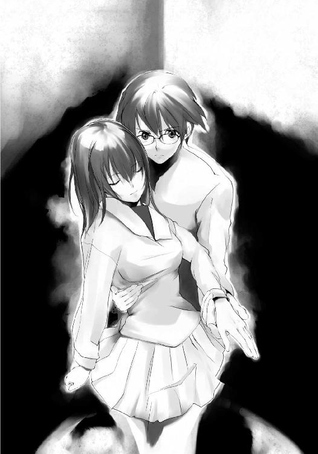
そのまま『闇』は琴葉の影の中に入り込んだ。かわすことも何もできなかった。
椎矢は自分の影を確かめようと振り向く。その椎矢の顔を、『闇』に操られた琴葉が背後から掴んだ。
「だーれだ、とか言ってくれるとありがたいんだけどね」
聖司が一人で言って一人で笑う。
「今度は彼女のほうを操らせてもらったよ。約束したからね。リテイクはさっきので終わりだって。ちゃんと眼球に触れてるかな？」
聖司が言うと、操られている琴葉の指が椎矢の眼にさらに押し込まれた。
「あぁ......」
眼を潰すような力強さはないが、指は確実に眼球に触れていた。痛みよりも嫌悪感に椎矢は呻くような声を発する。
「悪魔の口の持ち主はどんな声で『奪う』と詠うんだろうね？」
聖司が口の端を吊り上げ、琴葉に命じた。
「悪魔の眼を奪うんだ」
琴葉は聖司の命令に忠実に従い、無機質な声で宣言した。
「『奪う』」
椎矢の体から力が抜け、一瞬にして崩れ落ちた。
「あっけないもんだね。いや、ここまでてこずったんだからあっけないというのは失礼かな？」
聖司はゆっくりと琴葉に近づいていく。
「君の部位は俺が奪ってあげるよ。もちろんさっき奪った眼もね。二人を引き離すような真似はしないから安心しなよ」
聖司は操り、身動きの取れない琴葉の口に手をかざし、かすかに触れた。
「『奪う』」
「.....................」
聖司は眉をひそめた。思わず自分の手を見てみる。
「どういうことだ？ どうして......」
聖司は思わず問いかけた。
「どうして奪えないんだ！」
混乱する聖司に対し、倒れていた椎矢がいきなり起き上がり、その背後に立って聖司の悪魔の腰に直接触れた。
「お前！」
「動くな。オレが奪うと宣言すれば、お前は終わりだぞ」
椎矢がまるでナイフを突きつけているかのように聖司を脅した。
「どうしてだ？ どうして君が奪われないでいる？ どうして彼女から悪魔の部位が奪えなかった？」
複数の悪魔の部位を持っているという話は聞いていなかった。会ってから今まで誰かの部位を奪う暇などなかった。
だから椎矢が悪魔の眼、琴葉が悪魔の口を所持しており、その後、琴葉は椎矢から奪わせた悪魔の眼と口を持っていたはずだ。
それなのに、椎矢は悪魔の眼を奪われても眠りにつかなかった。
それなのに、琴葉から悪魔の口を奪うことができなかった。
それはつまり──
「彼女の悪魔の口を奪ったのか！」
なぜか聖司が激昂した。
「......結局そういうことか。自分の命惜しさに彼女から奪ったのか？ よくわかったよ。いや、そうなんだろうな。肉親ですら奪い合う争奪戦だ。何を期待してたのかね、俺は」
聖司は途中から独り言を言い始めた。
聖司は何に対して怒り、何に対して落胆し、何に対して絶望しているのか。
だが椎矢はわけのわからない呟きを無視し、聖司に対してこう言った。
「あんたにも悪魔の眼があれば視えたのにな」
「何をだ？」
「今、オレたちが持っている悪魔の部位が何なのかってことだ」
「オレたち？」
聖司は椎矢が琴葉の悪魔の口を奪ったと思った。
だが違うのか？
ではどうして椎矢は眠りにつかず、琴葉の悪魔の部位を奪えなかったのか？
「まさか......」
「そうだ。オレと琴葉で悪魔の部位を交換したんだ」
それが椎矢の策だった。
椎矢が琴葉の悪魔の口を奪い、琴葉に自分の悪魔の眼を捧げる。
悪魔の部位を返せば目を覚ます保証はどこにもない。琴葉と芙未が一度悪魔の部位を失っても目を覚ましたが、それも結果論でしかない。ましてや自分以外の部位を返せばどうなるかなど、一度も試したことがない。万が一にも失敗すれば、自分たちは眠りについて終わりだった。
文字通り、命がけの策だった。
それでも椎矢は恐怖を乗り越え、決断した。
それでも琴葉は自分を信じて応じてくれた。
二人の想いが、賭けに勝ったのだ。
「あんた言ったよな？ 自分の部位を託すことができるかってな？ 琴葉はオレを信じてくれた！ オレに悪魔の口を託してくれた！ これが答えだ！」
「......何を勝ったつもりでいるんだ？」
聖司が背後の椎矢に向かって静かに告げた。
「今、俺たちは五分五分なんだよ。君は俺の悪魔の部位に触れている。だが俺は彼女を手中に収めているんだ。『闇』は確かに奪うことはできない。でも命令することはできるんだぞ。例えばこの舞台から飛び降りろとかね」
「お前！」
上昇した舞台は、二階席に位置する高さにある。舞台は地上から一階分下がった高さにある。つまり落差は建物にして三階分の高さがある。飛び降りたら無事ではすまない。
「ラストシーンはリテイクなしだ。さあ、始めようか」
「おい、待て！」
「ラストシーン。テイク１」
聖司は止める椎矢を無視して進めていく。
迷っている時間はない。
決断しなくてはならない。
奪うか、奪われるか。
悪魔の部位を奪うか。琴葉を奪われるか。
そんなもの究極の選択でもなんでもなかった。
たとえ人殺しと同等の罪を犯そうとも。
選ぶものは一つしなかった。
「『奪──」
椎矢が宣言しかけたとき──
突如、聖司の体が仰け反った。
「..................」
「え？」
椎矢は驚いて聖司を視た。聖司の腰から悪魔の部位を示す光が消えていた。
自分は奪っていない。自分以外に聖司の悪魔の部位に触れていた人間はいない。だが聖司は悪魔の部位を奪われてしまった。
誰が奪ったのか。
どうやって奪ったのか。
触れなくても奪えると言っていた千代の言葉を思い出す。千代にその能力があったかどうかは今となっては怪しいが、そんな能力があっても不思議ではない。
椎矢は周囲に視線を走らせるが、その場にいるのは自分たちにしかいなかった。
と、聖司は魂を抜かれたかのように、ふらふらと倒れそうになりながら歩いていく。
椎矢は完全に聖司のことを一瞬とはいえ頭から離してしまっていた。
「危ない！」
椎矢の叫びも空しく、聖司の体は舞台の下に落ちていった。
◇◆◇◆◇◆◇◆◇◆◇◆◇◆
人間ってのはどうしてこうも奪いたがる生き物なのかって思う。
酔っ払いには両親を奪われ、
爺さんには聖子を奪われ、
そしてどこぞの誰かには悪魔の部位を奪われた。
ま、最後のはしょうがないか。これは争奪戦なんだし、俺も奪おうとしてたしね。
でもできることなら、椎矢くんか琴葉ちゃんに奪われたかったね。
聖子と俺は義理の姉弟だった。
幼くして両親を亡くして引き取られた俺を、誰よりも大事にしてくれたのは聖子だった。
俺はいつしか聖子を姉としてではなく、一人の女性として好きになっていた。
確かにガキだったけどさ、俺は本気だった。
ガキだったからこそ、どこまでも純粋に聖子のことを想っていた。
そして聖子も応えてくれた。
ただ聖子は年を経るに連れて、それがおかしいことで、悪いことだと理解し始めた。
別れは向こうからだった。
理由は当然義理とはいえ姉弟だったから。
最初からわかっていたことなのに。それでも好きだと言ったのに。それでもいいと言ってくれたのに。
俺は裏切られたと思った。
だから言ってやったんだ。
死んじまえってね。
例の失踪事件が起きたのは、その次の日だった。
失踪事件から帰ってきたのは爺さんだけだった。
聖子は帰ってこなかった。
爺さんの話は自失状態のボケ老人の戯言とみんな言ってたけど、俺はなぜかそれを信じていた。ガキだったからそういう非現実的な話を受け入れやすかったのかもしれない。あるいは、聖子が帰ってこないことの説明付けを自分なりにしたかったのかもしれない。
十二人の悪魔の部位の所持者。
十二の悪魔の部位の争奪戦。
十二の部位を奪った者だけが元の世界に戻れる。
帰ってきたのは爺さんだけ。
そして爺さんの懺悔。
私が奪わなければ皆で帰れたかもしれないのに。
繰り返されるそれらの言葉。
それ以上でもそれ以下でもなく。
後は自分なりに解釈した。
悪魔の部位の所持者だった爺さんと聖子、他十名の学校創立の関係者。
実際に行われた悪魔の部位の争奪戦。
十二の部位を奪った者だけが元の世界に戻れる。
帰ってきたのは爺さんだけ。
......奪ったんだ、爺さんは。
他の十一人の悪魔の部位を。
その中には自分の孫、つまり聖子も含まれていた。
爺さんは自分が生き残るために、全員の悪魔の部位を奪ったんだ。
聖子は今も向こうの世界にいるんだ。
奪われ、帰れなかった聖子。
どうやったらそっちに行けるのか？
同じ時 同じ場所 奪われた我が部位集えば 我復活を果たさん──
同じ時とは、悪魔が封じられた時にして、学校創立の慰霊祭が行われた時。つまり十二月十二日午後六時。
同じ場所とは、悪魔が封じられた場所にして、学校創立の慰霊祭が行われた場所。つまりはこの聖誕学園。
十二の部位とは、それを所持する十二人の後継者たち。
そいつらを十二月十二日午後六時に聖誕学園に集めれば、悪魔の復活の儀式は行われる。
誰だ？ 誰だ？ 誰だ？
──後継者は誰だ？
それがずっとわからなかった。
それだけがどうしてもわからなかった。
でもある日、俺に教えてくれた奴がいた。
十二年前、悪魔復活の儀式は成功しなかった。
だが悪魔の呪いは今もまだ継続している。
悪魔の部位も受け継がれている。
悪魔の部位の後継者の十二人は全てこの学校の生徒。
だけど、一人学校に来ていない生徒がいる。
いじめによる不登校中の生徒。
その生徒を呼び出さないと、儀式は行われない。
その生徒を呼び出せ。
その生徒の名は音無千代。
その生徒にはこう言えばいい。
君はとても優しいね。あんな奴らを殺さないように気遣っているだなんて。
君はとても強いね。いじめに屈しないなんて。
俺はそれを実践した。
音無千代はその日、学校にやってきた。
そして儀式は無事開始された。
でもさ。
聖子はいなかったよ。
『闇』が奪われた人間の成れの果てだなんて、とんだ嘘さ。
俺の言うことは嘘半分だと思っていい。
嘘ついた罰が当たったみたいだ。
まあ、こうして転落死するんだから、それで勘弁してくれよ。
床への到達まで３、２、１、......はい、死んだ。
......あれ？ 痛くないな。奪われちまったから、痛みなんて感じないのかな？
それともクッションでもあったか？
自分の下を見てみる。
黒い塊が俺の下敷きになっていた。
『闇』が俺をかばって、下敷きになってくれていた。
結局、意思の疎通もできない『闇』の塊だったけど、お前らは本当に何だったんだ？
こっちの世界の住人？
悪魔の下僕？
それとも、本当に奪われた人間の成れの果て？
──大きくなったね、聖司。
気のせいだろうけど、そんな声が聞こえた気がした。
......なあ、悪魔の魂の所持者さんよ。
『闇』ってのは本当は何だったんだ？
......なあ、俺をかばってくれた『闇』。
あんた、聖子なのか？
......なあ、聖子。
死んじまえなんて言って、ごめんな。
◇◆◇◆◇◆◇◆◇◆◇◆◇◆
リモコンによる操作で舞台を元の位置に戻した椎矢たちは転落した聖司の下に向かった。
聖司は舞台の上に大の字に倒れていた。
「おい！ しっかりしろ！」
三階分の高さから落ちた聖司だったが、骨が折れたり、血が出ていたりという外傷は見られなかった。だが悪魔の部位を奪われ、眠りにつこうとしていた。
聖司から悪魔の部位を奪った誰かは、自分たちから悪魔の部位を奪おうとはしなかった。
何か条件があるのかもしれない。自分たちはそれからはずれていたのだ。
もし奪う気ならとっくに奪っているだろう。
気休めにしかならないその思いの中、椎矢は聖司を抱き起こした。
「おい！ しっかりしろ！」
聖司はまだ意識を保っていた。だが目は虚ろで、意識があるのかも怪しかった。
「おい！ ひとつだけ答えろ！」
椎矢は眠りにつこうとしている聖司に問いかけた。残酷と言われても、聞いておく必要があった。
「あんたがこの争奪戦を始めた理由は何だ？」
やはり気になった。何か大事なことを見落としているような気がした。後回しにするのではなかったと思えた。
「......理由？」
虚ろな瞳のまま、消え入りそうな声で聖司はそう言った。
「頼まれたからさ」
「何だって？」
「俺は悪魔伝承を知っていた。俺は争奪戦のことを知っていた。悪魔復活の儀式が始まる条件も予想できた。だが、肝心の誰が悪魔の部位の所持者なのかがわからなかった。俺にはこの世界に来る術がなかったんだ。そんなとき、あいつがこの話を持ちかけてきたんだ。
あいつは全てを知っていた。悪魔伝承も、復活の儀式のことも、争奪戦のルールのことも、そして悪魔の部位の所持者のことも」
それに値するのが聖司だと思っていた。だが違うというのか。
「俺はこの世界に来たかった。あいつは悪魔の部位の争奪戦を起こしたかった。だから取引したんだ。あいつは俺に情報提供する。俺は争奪戦を始めるために動く。『闇』を使って争奪戦のルールを全員に教えるよう指示したのもあいつだった。そういう意味じゃ、この争奪戦を始めたのは、あいつってことになるのかな？」
それなら──
「そのあいつってのは、いったい誰なんだ？」
「──悪魔の魂の所持者」
それが聖司の最後の言葉となった。
聖司が全てを握る者だと思っていた。
この争奪戦の秘密を知っており、千代を呼び出して条件を揃えて復活の儀式を開始し、この争奪戦で目的を果たそうとしたのだと。
だが聖司を指示していた存在がいた。
悪魔の魂の所持者。
元の世界に戻る方法はわかった。
現実に可能かどうか、誰がそれを成すか、問題はあるが、悪魔の部位を全て揃え、元の世界に戻ることを願えばいい。
だが椎矢の心の中には暗い不安が広がっていた。
悪魔の魂の所持者。
全ての元凶たる存在。
悪魔の魂の所持者とは誰なのか。
その目的は何なのか。
ゴーン、ゴーン、ゴーン、ゴーン、ゴーン、ゴーン、ゴーン、ゴーン、ゴーン......
そして鐘の音が鳴り響く。
時刻は午後九時。
残り時間はあと三時間──
あとがき
はじめまして。もしくはお久しぶりです。御堂彰彦です。
今回の話は「十二人の高校生が、意図せずに所持した悪魔の部位の争奪戦を繰り広げる学園モノ」です。いかがでしたでしょうか。
内容については本編を読んでいただくとして、ちょっと思い出話を。
今回の話、舞台は高校で、文化祭のシーンが少し描かれています。
その辺りのシーンを書いていると、自分の高校時代の文化祭のことを思い出したりしました。
一年生のころは喫茶店。
でもただの喫茶店ではおもしろくないってことで、メイド喫茶──ではなく、内装に思いっきり遊びを入れてみました。
教室に川を作ったのです。
ビニールシートやらダンボールやらを駆使して土台を作り、そこに水を流し込み、教室を横断するように川を作ったのです。ちゃんと流れができるように、扇風機みたいなものを仕掛けたりもしました。
今思えばビニールシートで教室に川を作るなんて無茶だろうってな感じですが、当時はナイスアイデアってことで大盛り上がり。
文化祭本部もオッケーを出してくれました。
で、迎えた文化祭当日、自作の川は──
盛大に水漏れを起こしちゃいました。
まあ、教室と廊下を水浸しにしてしまってえらいことになったのも、今となってはいい思い出です。
無茶をするのは学生の頃に限ります。はい。
それから二、三年生のときは劇をやりました。
うちの高校の少し変わってるところは、文化祭の出し物で、劇をやるクラスがとても多いのです。
二、三年生で飲食店をやるクラスなんてほとんどありませんでした。
各クラスでオリジナルの話を作って、ビールケースとベニヤ板で舞台を作り、暗幕で窓からの光を遮り、サウナ顔負けの蒸し暑い密閉した教室で演劇をやるのです。
夜遅くまで教室や公園やらで練習してた頃が懐かしい。
うちの高校かもなんて人がいるかもしれないですね。
今もあんな感じなのかなーなどと耽ってみたり。
こんなことを考えるのも年をとった証拠です（泣）
さて、思い出話はこのくらいにして、最後に御礼を。
いつもお世話になっている担当の高林さん。
イラストを担当してくださったタケシマサトシさん。
出版にあたり、この本に携わってくださった方々。
それから自分の本を待っていてくれる友人たち。
そして何より、この本を手にとってくださった皆様。
本当にありがとうございました。
それでは次巻で、またお会いしましょう。
御堂彰彦
御堂彰彦
『王道楽土』で第７回電撃ゲーム小説大賞〈選考員奨励賞〉を受賞。本作で二作目となる。写真は愛猫のコテツ。惜しむらくは我が家の猫ではなく、友人の猫で、まだ一度も会ったことがないこと......。
タケシマサトシ
11月11日生まれ。自転車好き。最近は日光を浴びると眩暈がするので走るのも深夜に。先日もアロハシャツを着て自転車を走らせていたらお巡りさんに注意されました。なぜに？
電撃文庫
12ＤＥＭＯＮＳ
御堂彰彦
二〇十二年八月三十一日 配信
発行者 塚田正晃
発行所 株式会社アスキー・メディアワークス
〒一〇二−八五八四 東京都千代田区富士見一−八−十九
(C)2005 AKIHIKO ODO／ASCII MEDIA WORKS
本書（電子版）に掲載されているコンテンツ（ソフトウェア／プログラム／データ／情報を含む）の著作権およびその他の権利は、すべて株式会社アスキー・メディアワークスおよび正当な権利を有する第三者に帰属しています。
法律の定めがある場合または権利者の明示的な承諾がある場合を除き、これらのコンテンツを複製・転載、改変・編集、翻案・翻訳、放送・出版、公衆送信（送信可能化を含む）・再配信、販売・頒布、貸与等に使用することはできません。